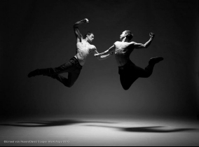
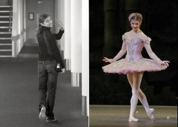
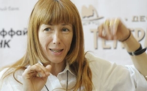

| Danse Danse Danse !: Portrait de Paris2014 | |
| 折川朋子 | |
| UNKNOWN (2014) | |
Danse Danse Danse ! (Portrait de Paris2014)
折川朋子 Tomoko ORIKAWA 2014/ 05~09 article
もくじ
・前書きの前書きのようなもの
【 第1 章：パリダンサー図鑑】
・バスティーユの夜は更けて
１パリダンサー図鑑（１）ヤニス・マーシャル Yanis Marshall
２パリダンサー図鑑（２）メルディ・カフカシ ュ Mehdi Kerkouche
３パリダンサー図鑑（３）ミカエル・カッサン Michaël Cassan
４パリダンサー図鑑（４）ファブリス・カゾー Fabrice Cazaux
５パリダンサー図鑑（５）ヴァンサン・アサール Vincent Ansart
６パリダンサー図鑑（６）ルーカス・ドゥファイヨル Lucas Defayolle
７パリダンサー図鑑（７）カール・ポータル Carl Portal
８パリダンサー図鑑（８）ニコラ・ユシャール Nicolas Huchard
９パリダンサー図鑑 （９）ジュリアン・デスプランテ Julien Desplante z ／哀しみと哀しみよりもっと苦いもの
＜à sequel ：後日 談 >
1 0 フランスで『ブロードウエイダンス』
1 1 もし空を飛びたければ
1 2 どんなことがあってもダンスを続けようと彼は言った
【 第2 章：ヤニス・マーシャル Yanis Marshall 】
1 3 再びヤニス・マーシャルのこと―欧州爆走中
1 4 ヤニス・マーシャル――全米疾走中 天才ぶりを徹底解剖
1 5 ヤニス スタージュ直前情報
1 6 ヤニス・マーシャル 201 4 パリ 怒涛のスタージュ実況編その１ ： U P 編
17 ヤニス・マーシャル 201 4 パリ 怒涛のスタージュ実況編その２ ： JAZ Z 振付
1 8 ヤニス・マーシャル 201 4 パリ 怒涛のスタージュ実況編その３：女神対決
1 9 ヤニス・マーシャル 201 4 パリ 怒涛のスタージュ実況編その４：亡き友へ捧ぐ
20 ヤニス・マーシャル 201 4 パリ 怒涛のスタージュ実況編その５ ：モダン編
21 ヤニス・マーシャル 201 4 パリ 怒涛のスタージュ実況編その６：最終日
< à sequ e ：後日 談 l>
2 2 ヤニススタージュを終えて――ミカエルと夏の流れ星
2 3 ヤニスをアイス
【 第3 章：舞台評 論 201 4 夏パリ】
2 4 パリオペラ座『ダフニスとクロエ』
25 モンテカルロバレエ団 『湖』
2 6 パリ・オペラ座バレエ団『ノートルダム・ド・パリ』
2 7 サンフランシスコバレエ公演所感
2 8 ニコラ・ル・リッシュ 引退公演
2 9 ニコラルリッシュ引退公演 一夜明け 各報道
【 第4 章：クラシックバレエとその周辺】
3 0 ベルリン監督ナチョ・ドゥアト 欧州バレエ団監督交替劇
3 1 ジャンクリストフマイヨー 『じゃじゃ馬馴らし』
3 2 シルヴィ・ギエム『規律の力』
3 3 ギエム引退の可能性について ／ギエム引退発表
3 4 ベルリンバレエ『ドンジュアン』
3 5 振付家 ジョルジオ・マディーア
3 6 バレリーナ ・ EN B 監督 タマラ・ロホ
3 7 バレリーナ ディアナ・ヴィシニョーワ
3 8 バレリーナ ポリーナ・セミオノワ
3 9 ダンサーの社会的責任１ 英国／ロホ、コジョカル
4 0 ダンサーの社会的責任２ 米国 ニューヨーク ／ NYCB
4 1 ダンサーの社会的責任３ フランス エルベ・モロー
4 2 ダンサーの社会的責任４ 個人と団体 ギエムの環境保護活動
4 3 フランスコンテ『サンドリヨン』
4 4 『グレートギャッピー』バレエ化
4 5 フランス『ダンスコンテンポラリーの国』
4 6 欧州の若手振付家たち
4 7 ロシアの若手振付家 ウラジーミル・ヴァルナヴァ
【 第5 章：フランス・ダンス情報 】
4 8 パリオペラ座チケット
4 9 パリのスペクタクルサイト
5 0 ダンサーと怪我
5 1 ダンスを続けたいならたくましくあれ
5 2 Whate'ers begun in anger ends in shame.
5 3 ダンスジャーナル、ダンスの医学書
5 4 フレンチポップスを聞こう／フレンチポップス 第2 弾
5 5 フレンチポップス ラアム フランスの多様性
【最終章：エッセイ――ダンスについて語ること 】
5 6 ダンサーの悲哀
5 7 ダンスについて語ること
58 オーディションには受かったけれど／いつかさよならする日まで
5 9 ダンスの道・小説家の道
6 0 米国ダンスコンテンポラリーのド迫力
6 1 ビヨンセ／世界で最も影響力のあ る 10 0 人に？
6 2 『死』私が小説を書くとき――ボレロ
6 3 集中 力 CONCENTRE R 小説もダンスも
6 4 『負けず嫌いたちのダンス論』
6 5 新世界より１
6 6 新世界より２
6 7 新世界より３
6 8 新世界より４ コメディーという名のダンス
6 9 夏の夜のチュイルリー公園
・長いあとがきのようなもの「ダンスという言語」
――そしてダンスは続く
前書きの前書きのようなもの
ダンスについて長いこと本を書いてみたかった。
欧米の舞台評論を手掛け始めたのはかれこれも う 1 2，3 年前で、それもいわゆる『芸術』としての海外のクラシックバレエが中心だった。日本に居ながら海外の情報を仕入れ、翻訳し、あるいはオペラ座なりロイヤルなりが東京にやってくるとなれば一週間舞台に通い詰める。そうした記事を条件反射的に繰り返したところで「何か違うよなあ」という思いはロンドンの霧のように胸の内を侵食した。どれだけ書き続けても望む手ごたえは掴めないだろうという、ある種の確信のようなものがあった。
舞台に立つ才能と、それを「見る」ことのできる能力、さらに文章で表現することのできる能力となれば、まったく別個のものだ。優れたダンサーが引退後必ずしも優れた教師になるとは限らないように。私の中には、まだ主体的な踊り手としての名もなきダンサーたちがじっと息をひそめ、ストレッチをしながら登板を待っているように思えた。彼らにはこれまでも何度か「もう派遣されることはないんだよ」と戦力外通告を言い渡したのだけれど、別の何かで代替可能というわけにはいかなかった。かえって身体のあらゆる部位、つまり血管や、筋肉、と言った私を構成するあらゆる器官が――事あるごとに「踊らせろ！踊らせろ！」と異議申し立てをした。ささやかな個人的体内革命だ。しまいには机に向かって何かを書いていても、言葉が踊っているのか、筋肉が文章を書いているのか分からなくなった。
ある時、ふいに違和感の正体が姿を現した。粉雪みたいにさらりと肩に舞い落ちてきた。「そうかホンモノは、一流とは、評論を寄せ付けないものなんだ」。直接のきっかけがあったわけではない。ただ一流のダンスとは、手取り足とり、説明を要するものではない。ただ「舞踊」という絶対的言語が立ちつくしているというほかない。本物は、言葉など最初から拒絶するから本物なんだ。論ずることなど誰にも出来ない。「分かる人間にだけ分かる」なんていうものは、一流とは呼ばない。
いずれにせよ、早かれ遅かれ、ひとりパリへは出てくることにはなったのだろう。
フランスの舞踊を通じて、欧州を形づくった精神にこの手で触れてみたかった。遠くから眺めるのではなく、その空気の中で、ひたすら汗をかき、腕と足を振り上げ、筋肉に悲鳴を言わせながら、実際に自分の身体を通して感じなければダメだ。体験したことしか書けない。あれは良くてこれはダメ、と机の上でひねくりまわすだけならこの時代、観なくたってできるだろう。それは私という人間の役割ではない。もちろん、世の中にはそういった仕事も必要だけれど、少なくとも、私の仕事ではないのだ。
「舞踊を通じて」など偉そうに言ってしまったが、最初からその目的で渡仏したわけではない 。 1 1 年と少し勤めた大手新聞社を辞めて、こちらに腰を落ち着け長い小説を書くためだった。そうしないことには、もう自分の生きている意味がないところまできてしまった。
小説を書くのは、単純に肉体労働だ。一日の大半をじっと机の前で過ごし、見た目には知的作業かもしれない。でも「マインドパレス」はもの凄いカロリーを消費しながら、戦闘を繰り返している。起きてすぐ、早朝から午前中一杯が勝負だ。ゼロから生み出す必要のある、クリエイティブなパーツにはこの時間に集中してとりかかる。午後は珈琲を飲みつつ、リライトや、少しリラックスして書けるエッセイ的文章で、別の神経回路を刺激させてやる。さすがに同じ場所だけを長時間使い続けていては、いざという時うまく回転してくれなくなる。
ちょうど渡仏か ら 1 0 カ月後の春、フランス関連のエッセイに着手した。 『 entre la poire et le fromag e 』（アントレ・ラ・ポワール・エ・ル・フロマージュ）訳すと『洋ナシとチーズの間』。これはフランス語のちょっとことわざ的な言い回しでフランス料理の一連のコースのメイン終わり、チーズの後、デザートが出てくるまでの間。つまり「リラックスした頃に」という意味合いだと辞書に載っている。ゆったり気持ちがほどけて、してもしなくても構わない、さして重要でない「雑談」にうってつけのおしゃべりタイム。まあ自分の書くネタなんて、文化『批評』でも文芸『評論』でもない。敢えて、そうでなければ意味が無いと、自分に言い聞かせる「意志的表示」でもあった。
フランスネタで書く気満々だったこのエッセイ、ところが機同じくして、ひょんなきっかけからパリ市内のスポーツジムに一カ月間、お試し入会した。ジムという所は、世界共通なのかどうか、「スタジオプログラム」なるものが存在する。フランスだからかそれともこのジムの特徴なのか、ダンスの種類がやたら豊富だ。こうなると昔取った杵柄というやつで、後には引けない。最初は素直にモダンジャズの女の先生のクラスを見つけて通っていた。
以下、私が「フランスでダンス」にずぶずぶとハマって行く経緯が続く。前作を買われ、既に読まれている方は飛ばして下さい。
ヒップホップのクラスに出てしまった土曜のことはありありと思い浮かべることができる。私は「ジャズシューズ」を持っていなかった。日本からスーツケースに突っ込んできた一足のバレエシューズでジャズを踊るという無謀な行為を続けていたため、床は滑るし、転ばないよう気を付けながらで、ストレスも頂点に達している。三週間たってようやく意を決し 、 1 3 区のダンス専門店へシューズを買いに行った。子供みたいな私の足のサイズだと在庫上選択肢はない。あっさり決まった。週明けのレッスンで使おう、と思った私は、今日のうちに下ろして足馴らしをしておきたいなあ、などと「要らぬ考え」が頭をよぎる。持っていた最寄りジムのプログラム一覧を開き「ダンス」を探した。おお、ちょうど夕方にある――ヒップポップが。・・・ヒップホップ？？？この私が？まあ致し方あるまい。単に靴馴らしのためだけじゃないか。後ろで音楽に合わせてヘイヘイと、たる～く動いていれ ば 9 0 分なんてあっという間に過ぎてゆくさ。
フロアに辿りついて私は凍りついた。既 に 2 0 人程度の生徒がそこにいた。真剣な面持ちで中央にかたまり、一曲を繰り返し練習しているのである。ま だ 1 5 分前だ。動画撮影までしている。なんなんだ、これは。ちゃんとクラス開始時間に間に合うように来ているのに、と時計を睨む。大いなるフライング。あるいは、舞台やイベントの選抜メンバーの練習かもしれない――私は立ち尽くし、我を忘れて、目の前の集団の踊りに見入っていた。
真ん中に居るのがきっと教師だ 。 4 0 代前半ぐらいの男性。深目にかぶった帽子、少し浅黒い肌に黒のパーカーを羽織っている。遠目だけれど、その容姿ではなく圧倒的な存在感にくぎ付けになった。フロアの集団の空気が、彼を中心に圧縮したり、膨張したりしていた。ありていの言葉かもしれない、でも私がそこで目にしたものはまさしく「一体感」だった。
彼が動かす手、足、顔の角度、視線、その一つ一つに合わせて、後ろの生徒集団が同じ動作を行っている。もちろんそっくり同じというわけではない。教師の放つ有無を言わせぬ強烈なオーラ、その背中についていこうとする生徒たちの「前へ、前へ」という意識とが不思議な化学変化を起こして、やっぱりそれは「一体感」としか名づけようのないものとなっていたのだ。
フロアに熱気が残ったまま、気がつけば開始時間 を 1 0 分ほど過ぎて、ようやくお目当てのヒップホップのクラスが始まる。教師はもちろんその人で、今踊っていた生徒の半数ぐらいが続投。私と同じように端のほうで待っていた数名が加わり、クラスが始まった。私は踊っていた教師の姿が、今見た集団のダンスの空気が目に焼きつき、アップの間中、ずっと離れなかった。振付に入ってからも、一秒も無駄にしない、と自分に言い聞かせ、教師の背中に意識を集中させた。
フランスでその頃流行っていた英語のポップスが何曲も流れていた。彼は言葉で振りを説明せず、自分でやってみせて生徒についてこさせるタイプ。それを必死で追いかけながら、何かしら思いが込み上げてきたのは覚えている。でも、今となっては何を想っていたか、ディディールまでは思い出すことができない。震えるような思いであったことには違いない、でも感動とかそういった名前のつくものとは、不思議と違う感情だった気がする。
「なぜ私は、今パリの春を、知らない教師と、知らないフランス人たちとの中で、たった独り、ダンスを踊っているのだろう。それは、どうしてこうも、何度でも、世界の果てまで逃げても、私を執拗に追いかけ繰り返されるのだろう――」
一種の諦観に近いようなものだったのかもしれない。でもその時は分からなかった。
天窓から、長くなった春の陽が差し込んでいた。だから私は、せめてそれを全身で受け止め、腕の隙間からこぼれてしまわぬよう、がっしと抱きとめながら踊るほかなかった。一つも逃してはいけない、そんな気がした。
教 師J のもと、パリでダンスを再開させていく様子は、初めてのエッセイ集である既刊 『 Entre la poire et le fromag e 』に、幾つか収めてある。主 に 201 4年4 月 、5 月に書かれたフランスに関するテーマで書かれた文章を集めたエッセイ集だ。既にその頃、生活にダンスが深く介入しており、次第にダンス抜きでは一日が語れなくなってきていた。それならダンスだけテーマ に2 冊目をまとめたほうがハナシが早い。始めたきっかけ やJ との出会いあたりまでについては、一作目のエッセイ集に、より鮮度に溢れたダイレクトな文章が載っている。でも重複収録は避けたい。従って、残念ながらそのあたりは今回除外してある。代わりに、この「長い前書きのようなもの」で事情に触れた。ここに収録されたのは 、 201 4年5 月終わり ～ 201 4年7 月終わりまでの２カ月の記録である。
短い間だけれども、収入のない中、身銭を削って、心身とも相当ぎりぎりのラインで生き延びていた。フリークライミングをやっている人は分かるかも知れないが、慣れない言語環境の中、例えるなら利き腕でないほうの左手の第一関節の指一本で、岩をよじ登っているのに似た感覚があった。チョークの粉すらない。命綱はない、誰も確保していない。落ちることなんて許されない。それは即「死」を意味する。そういう毎日。
前半では、具体的にパリのダンスシーンに踏み込んでいる。誰かに「紹介」しようと思って書きだした訳ではない。誰も書いていないから書いた。依頼されたわけでなく、ただ自分がお金を払って体験したことを、その時々の怒りや、悔しさや、行き場のない気持ちを、そのまま書いた。もうこの頃は、かなり殊勝な気持ちで気合を入れて取り組んだ一作目の「フランスエッセイ集」（アントレ）が誰にも読まれていないなあ、という痛い事実も自分なりに理解し、受け止め、「なんだ、それなら自分のことも丸出しで、正直に書いちゃえばいいじゃん」という気持ちになっていた。決して投げやりだとか、やけっぱちなどではない。つまり「パリのダンス紹介本」ではなく「パリのダンスを介した一種の個人史」、というより、極めてパーソナルな闘争史、に近い内容になってしまっている。だってそれは常に、闘いだったのだ。楽しみや、喜びであった試しがない。私にとってそれは、常に真剣を携えたある種の――個人的戦闘の記録でもある。
もちろん、この２カ月の間、パリの舞台感想や、パリにいたことで見えてきた欧州ダンス界の動きもそれなりに文章にしたためてある。でもあくまで「それなりに」だ。私はもっと強く、激しく、自分の血が脈々と波打つような、言ってみれば、個人的独白の出来るチャンスと環境を求めて、彷徨い続けていたのだと思う。
中にはさらりと書き流したものや、その時々の覚書のようなものもあるけれど、大半は自分の実体験から引き出された何らかのモラルを書き残したつもりだ。
特に最終章 「エッセイ――ダンスについて語ること」 に登場する「ダンサー」は、この最初に出会った教 師J のことである。第一章の『パリダンサー図鑑』には入っていないし、どこにも本名も出していない。それにはれっきとした理由がある。自分にとってパリのダンスが殆どこの人と同義語になってしまっている以上、いかなる迷惑がかかるのも、避けたかった。また一定の距離を置いて文章を書くという職業上の倫理・哲学を遂行することは、結果的に作品の上でも、またダンスを続ける上でも、好ましいこと。
最終章に関しては、最後まで悩んだ。構成の際、例えば音楽ついての文章などは別のカテゴリーに移した方がいいのではないか。でもあえてそのまま残すことにしたのは、前後の文章にお互いに引きつけ合う強烈な磁波のようなもの、それを断ち切りたくなかったからだ。
読み返すと、これを書いていた６月の長い陽と、乾いたプールの匂いがする。多少分類的に意味が通らなくても、その時の「強いエネルギーの流れ」の力をそのまま形に残してみたかった。
だから最終章だけは、若干他と毛並みが違って、個人的 なJ への気持ちが表れているかも知れない。必ずしもよいことばかりでない。話せないから、手紙をしたためるような気持ちでその時々の事象を綴っていたのだと思う。
二度とそのような熱い思いは蘇ってはこない。「それに似たようなもの」をえいやっと、ぞうきんみたいに絞り出すことはできる。でもあくまで、その時感じた思いは一度限りのものだ。舞台と同じだ。書かなければ、それらは消えてなくなってしまう。記憶から去れば、それらは存在しなかったことと同義である。
日本にいた時は、そんなふうには決しておもわなかった。
感じたことは、書きとめて形にしておかなければ、と思うようになった。年齢的なものか、それとも外国で生活したことによる意識の変化なのかは分からない。永遠に相手に伝わらないからこそ、自分が何を感じ、考えたか、自らの使用言語で綴っておかなければ。
本の最初に出てくる『献辞』というやつが苦手だ。表紙を開いた途端、『妻へ』だの『亡き友へ』だの出てくると、「ちぇっ、こっちは大金はたいて（でないにせよ）貴重な時間かけて、せっかく選んでやって、これから読もうってのによ。妻でも友でもなくただの通りすがりで悪かったな。『読者』に向けてはアンタ、一言も書かれてないのかよ」と悪態の一つも突きたくなってくる。一気に読む気が失せる。仕方ない、私はそういう人間なのだ。でも確かに、既成事実として最後の章だけは、そういうことになっているかもしれない。あくまでこれは事後報告。
教 師J へ。日本語だし、どうせ永遠に読むことはないだろうから公言する。最終章だけあなたに捧ぐ。残りは全て読者に捧ぐ。
octobre/ 2014
a Paris
【第１章：パリダンサー図鑑】
・バスティーユの夜は更けて
ここ 連日、パリ１１区のバスティーユ周辺に通 っている。オペラ座のバスティーユ（バレエなど行われるガルニエ宮でないほう）のあるところ。歴史的に言えば、フランス革命の発端となったバスティーユ襲撃事件（１７８９年７月１４日）のあった広場。中央には有名なオブジェがそそり立ち、周辺はカフェやバーで遅くまで賑わっている。サン・ミッシェル、カルチェラタンの学生然とした雰囲気や、シャンゼリゼあたりの高級感、モンパルナス周辺の芸術家風の味わいとも全く違う。もっと「民衆」っぽい空気が、ぶんぶん漂っている。気のせいかな。
どうしてそんなところに通い詰めているか？今度こそ、大真面目に「ダンス道場めぐり」を開始したからだ。（道場巡りの開始と挫折経緯は、パリのエッセイその１：『洋ナシとチーズの間』に詳しい） もちろんスポーツクラブのダンスクラスでなく、れっきとしたパリの『ダンススタジオ』で、プロのダンサーによるレッスンを受けないと、もう「どうしようもない」ぞ、自分、と思ったわけだ。
ここに至るまでのいきさつは若干複雑な心理状況を辿るのだが、まあ、早かれ遅かれこういうことにはなった。一言で言うと、ジムではあくまで「スポーツ」の域をでない。本気で髪振り乱してダンスをやらねば――と、一気に火がついたからである。私より７つ年上のプロテニスプレイヤーのクルム伊達公子なんて、引 退 1 2 年後 、 3 7 歳で現役復帰して、今なおバリバリ活躍中である。年齢を理由に諦めるなど、話にならない。肉体的はまだ成長を遂げることが可能だ が ― ― 強気でそう言い聞かせても 、 4 0 の分水嶺を越えてしまったら、何かが可能ではなくなるかもしれない。
とにかく今、先のことは考えず全力で踊りたかった。パリ最先端のダンスシーンで踊りたかった。最も輝いているパリのダンサーは誰だ？最高の場所は、ダンスは、どれだ？自分で確かめたかった。
幸いにも、ジムのクラスで身体はどんどん昔の感覚を取り戻しつつあった。私はまだ、フランスダンスの何ひとつ、見ていない。感じていない。とことん追求した結果が、この国のダンスとは『バレエ』か『コンテ』を指すのであ り ― ― 私が求めるアメリカンスタイルのジャズ、モダン、ストリートは、結 局 N Y 帰りのダンサーの受け売りでしかないのだとしたら。私がフランスにしがみついている理由はどこに ？ N Y だろうがロンドンだろうが、今や世界のどこにいようと、小説もエッセイも、かける。たぶんこれは、自分のパリ滞在意義をかけた「道場巡り（破り）」スタジオ道中になるわけか。
――やっと、面白くなってきた。
フランスでは、ダンス教師は国家資格だ。ダンスクラシック（バレエのこと）、ジャズ、コンテンポラリーの３つの資格がある。これがなければどんな小さな教室やクラスであっても「教師」を名乗って教えることはできない。有名な養成所兼スタジオがパリに３か所。（ダンス・マレは除く）ひとまずオープンクラスに足を運んでみた。
ダンスに限ったことでなく、どの業界でも、最初に押さえるべきは「大御所３人、若手３人」である。上はディレクター（代表）や、フォーメーション（研修）担当レベル（たいてい４ ０~ ５０代）、ダンサーとしての第一線は退いているけれど、教師として豊富な経験を持ち後進を育てているクラス３人を。一方で、現在パリダンス界をけん引する若手 （ 2 0 代）はどうか。彼らはビジュアル世代だから自らのアピールに余念がなく、情報収集には事欠かない。ユーチューブ や H P での人気度、どんな曲をつかって、誰（フランスのアイドル歌手、ミュージカル、舞台など）に振りつけているか、国内、海外受賞歴、ＴＶ、ＣＭ放送歴 、 N Y 活動履歴などを参考に、できれば異なる芸風の若手３人をピックアップしてみる。ただし、ダンサーとしては凄くても、教えるほうはとことん興味がなかったり、逆に学校を出てすぐ、教えることに情熱を燃やして、自身の振り付けは殆どクラス向け、一切社会的活動及び知名度なし、みたいな先生もいるので、この辺りのバランスは、ユーチューブとにらめっこしながら見極める。
情報収集の段階で思ったこと。日本に輸入される「フランス」「ダンス」情報と言ったらほぼ例外なく「バレエ」であり、それ以外の、いわゆるジャズやモダンの情報って殆ど入ってきていない気がする。「フランス ／ダンス／留学」 などと検索して も9割9 分、バレエ学校の情報しか出てこない。そもそも、ダンスをやりたい人間は最初からＮＹに行くわけだ。パリでジャズやモダンを踊ろうという人は稀有。コンテは一応欧州のものという認識があるのか、学術研究分野ならいくつか日本語の検索がヒットし、人的交流も行われているようだ。それでも、現代ダンスシーンに関するあらゆる情報は、悲しいかな、フランス語を自力で読み解くしかない。
「いま」この瞬間に、とことんのめっていくことしか自分にはできない。だから、日本を出たのだ。
そんなわけで、夜な夜な身体を酷使している。倒れそうなこのふらふらとしたどこか懐かしい感覚。これから実際に体験したクラス状況などをもとに『フランス最先端ダンス事情』をまとめて行く予定。
１）パリダンサー図鑑（１）ヤニス・マーシャル Yanis Marshall
真ん中の彼が 、 Yanis Marshall ( ヤニス・マーシャル）。今パリで最も若く、最も注目されるダンサー、コレオグラファー、そしてダンスプロフェッサ ー( 教師）である。この私ですら履いたことのない ヒール で男軍団（もちろん女性もいる）率いて、セクシーダンスを繰り広げる「フランスで唯一のダンサー」である、ということ 。 201 3年6月 3 0 日公開以来、現 在 (201 4年5月 1 7 日 ） 47 2 万回以上の再生回数が記録されている。彼のユーチューブには今日時点 で 9 3 本の動画がアップされており、プロモーションビデオ、ＴＶ放映、クラス動画と様々だが、うち最大回数を誇る。
パリダンス界、衝撃の新星ヤニスの、輝かしい経歴は以下の通り。公式ＨＰ（仏・英）とダンススタジオＨＰの教師経歴を参照した。
『ヤニス・マーシャル、弱 冠 2 3 歳にし て (※ 8 9 年生だと現時点 で 2 4 歳。筆者注）現在はパリで最大の注目を集める若手振付家、ダンス教師、そしてダンサー。カンヌ近くのヴァロリス出身、母親がダンス協会理事で、若くしてダンスをはじめる 。 1 1 歳で彼はカンヌの舞踊学校（ロゼラ・ハイタワーのこと：筆者注）に入学、古典（クラシック）ジャズ、コンテンポラリー等、基礎習得に努める 。 200 5 年に卒業後、彼はダンス修行のためパリへ。ダンス・インターナショナル（リック・アダムスのパリで有名なダンスセンター）のＥＡＴ（仏ダンス資格）『ジャズダンス』を、僅 か 1 5 歳、優等で取得する快挙を成し遂げ注目の的となった。その年 、 T V シリーズでダンサーとして初登場。ミュージカル劇団 （ 1 6 歳、最年少）でフランス国内ツアー、海外ツアーでプロのダンサーとして活躍後 、 2 0 歳でニューヨークへ。ＢＤＣ（ブロードウエイダンスセンター）で、シェリル・ムラカミ（エミー賞受賞、日系アメリカ人の振付家。ビヨンセやレディー・ガガなどを手掛ける）の教えに出会い、感銘を受ける。 「 street Jaz z 」スタイルをフランスで伝えていく決意を胸にフランスへ帰国 。 201 0年9 月より、スタジオ・ハーモニーで教え始めた。最初は週 に2 クラス、生徒 は4 人しか居なかったが、めげなかった。優れたプロ意識、初心者からプロまで指導できる飛び抜けた能力は即知れ渡り、すぐに体育館を埋め る 30 0 人のマスタークラスを受け持つほどの、人気教師に駆けあがるのである。
本領は振付家、ダンサーとしての資質にある。教師業の傍ら、彼は国内外の様々なイベントのため実績を残した。ロシア・ソチの国際フェスティバル、あるいはテレビ番 組≪ La Meilleure Danse » では、ヒールダンスの振付けで人気を博している。歌手のビデオクリップ、台湾のスーパースターのための振付けを通して、国際的に活躍の場を広げている。新進気鋭のこの若者は、今、パリで最も勢いのあるコレオグラファーである』 （以上）
ダンス界の大御所を持ち、血筋も環境もサラブレッドのヤニス。仏バレエ界における２世エリート、マチュー・ガニオ（両親とも世界的バレエダンサー）に例えれば、ダンス界の貴公子は当然ヤニスということになる。スタジオ・ハーモニーのダンス教師の中には 、 2 2 歳でダンスを始めた人もいるぐらいだから 、 2 3 歳にして殆どフランスの若手頂点に上り詰めた感のある「無敵ヤニス」の大物ぶりは、表現のしようもない。
まっとうに、ジャズやコンテンポラリーで大家の王道を貫いて行っても良かったろうに、彼の転機 は 2 0 歳の時のＮＹ。シェリル村上（おじい様が日本人です）のいわゆる「ハイヒールダンス」に衝撃をうけて「殆ど恋に落ちてしまった」（本人談）という。どうして 「 talo n 」（フランス語でタロン は" ヒー ル" ＝かかと）だったのか。彼にとって「かかと」とは「アクセサリーの一部」だったのだ。
彼が衝撃を受けたＮＹのシェリル村上のダンスを知ると手っ取り早い。なるほど、この手のセクシー、ファンキー系ダンスにやられたのね。米国風味・ ド N Y 、全開。こりゃあ、ひとつ俺が背負ってフランスに持って帰らにゃと、ハタチの青年は思ったわけだ。そしてその読みは、彼の予想以上に、パリを吹く時代の風に乗ってしまった。
彼の公式ＨＰ、フェイスブック、ツイッター、そして公式ユーチューブチャンネルは、どれも違った嗜好がこらされ、彼の「アーティスト」としての才が存分に堪能できる。動画世代のダンサーは、あらゆるツールを駆使し、アーティスティックな自己発信を常に求められている。そしてまあ、、、欧州で全く偏見はないが、いわゆるゲイバーの皆さま、当該各方面と思われるファンクラブの熱い声援が刻一刻と送られ続けている。なるほどこうした時代的な波もあった。
最初の『スパイスガールズの曲でパリを踊 る3 人男』がとんでもなくヒットしているものの、他の動画の完成度が凄すぎる。月曜と火曜の夜、彼はスタジオ・ハーモニーで、ストリートジャズ、ストリートジャズタロン（ハイヒール）の２クラスを持っていて、クラス動画がアップされている。生徒のレベルは高く皆「ヤニスのバックダンサー」のつもりで『なりきりダンス』を披露している。プロモーション用動画を結構頻繁 に U p しているので、そちらも要チェック。毎回、別人かと思うほどヤニスの姿や表情、髪型が変化している。掴みどころのなさもまた、若き彼の魅力か。クラスの時は物凄く男らしくきびきび指示を出すことも多い。かと思えば、私が初めてクラスに出た時、バレエのバーにつかまって白鳥を踊っていたヤニス・・・・うますぎた。
２）パリダンサー図鑑（２）メルディ・カフカシ ュ Mehdi Kerkouche
歌って踊れるミュージカル王子
水曜の夜、スタジオ・ハーモニーの最終クラスでストリートジャズがあるので出てみた 。 Mehdi Kerkouch e というかなり若い部類に入る男性教師、コレオグラファー。パリ最先端を行く実力派ミュージカル俳優＆ダンサーであった。
201 3 年ヒットを飛ばし た Pharrel l の 『 happ y 』だが、そのパリバージョンのダンス動画 『 we are from Paris Happ y 』をつくったのがこの先生。真ん中の彼ね。
彼の舞台経歴 は 1 6 歳から。レゲエ、ヒップホップ、モダン、ジャズ、コンテと全てのダンスをこなす。スタジオ・ハーモニーでダンスジャズの資格を習得 。 200 5 年にはミュージカ ル≪ Le Roi Solei l≫ （太陽王）参加、その卓越した舞台技術はダンスのみならず。フレンチミュージカ ル CLEOPATR E （クレオパトラ、エジプト最後の女王） で 20 0 回を越える公演を経て 、 201 0 年より振付の仕事も本格始動。クリスチャンルブラン等、有名デザイナーへのショー振付担当。欧州のみならず、米国、イギリス、日本、ポーランド等、海外活動も多彩。国際ダンスイベント「ジャストダンス」での成功、国際ダンスショー 「 HELLO THE BUDDIE S 」など 。 2 7 歳。
F B を主な伝達手段に生徒、ファンに向け本人のメッセージがまめに更新されている。クラス情報、動画のアップ、週末の舞台情報などは全てこちらから。英語とフランス語を自在に操り「きょう の 2 0： 3 0 からはマドンナの曲、最終週だよ ！ Don't Miss it ! 」みたいに感じよく書かれている。こんなの見てしまった女の子たち、どんな予定をほったらかしてもスタジオに駆けつけないわけにはいかないのだろう。
プロフィール写真は神経質そうな美少年、というイメージだったけれど、クラスで見るととても小柄で身体能力の高い外向き指向のやんちゃ坊主、という感じ。テンション を 18 0 ％ぐらいのところで維持し生徒にもそれを無理なく要求している。カウントをまずとらない。彼が歌をうたって、歌詞（当然英語）とメロディーに合わせて振りをうつしていく。全パーツを振り付けない。生徒の能力を信じているのか、相当の遊びを持たせる。「ここからここま で libr e （自由）」好きなよう に4 拍動いて同じ位置に戻ってきて、とか。生徒はジャンプしたり、回ったり、セックスアピールしてみたり、隣の人にキスしてみたり。たった４拍のうちに自らを最大限にカッコよく見せる術を知っている。
あきれるほどよく動く、よくしゃべる、よく笑う。クラスの隅から隅まで見まわして「ああ～ん、質問あったら言っ て❤（ Dite moi ) 」と動的エネルギー常に発し続ける。若さとはこのようなものであろう。自分で振りつけておきながら、お尻をくねっとさせる振りを正面から見ていた時は「そこ、みんないっしょになってぴくってなるでしょ 、 Très migno n ！」（とおぉぉっても、かわいいのっ！）って自分で悶えていた。ぶち抜けた若さをひたすら放出しまくる。
ひとたび踊らせるとマジである。ミュージカル仕込みの体力底知らず、はたまた、もとより持っているダンサー資質か。小柄な体がぴょんぴょんとびまくり、決めまくり、誰よりでっかく見える。最後には自身のソロ撮影タ～イム。クラスを分けて何度か踊った後、今回、いちばん上手かった生徒と先生がアヴェックでふたたび撮影タ～イム。とにかく笑いと真剣味と体操選手もビックリのアクロバット的な正統派・身体能力の高さに驚きっぱなしの２時間となる。
メフディの味は、下手にファンキーだったり、世をすねてひねくれていたりしない点か。とにかく基本『ハッピー』なんである。底抜けに、どこまでも突き抜けて明るくめちゃめちゃ元気になる踊り。クラシックの基礎があるからどんな激しい振りになっても安心、信頼感は揺るぎない。消費カロリーは凄いけれど決して自己愛系ではなく、あくまでも外へ、外へと向け発信される陽光である。若くして舞台を踏んだ経験が、うまく消化されているのだろう。
MEHDI KERKOUCHE presents CHRISTMAS IN ...
ひたすらハッピーな動画。日本人にはおなじみの「あの」曲で、パリのクリスマスを踊る。ジャック・ドゥミのミュージカル映画『ロシュフォールの恋人たち』の振り付けをちょびっと思いだしてしまった。
３）パリダンサー図鑑（３）ミカエル・カッサン Michaël Cassan
まずはこちらの写真を。『パリイケメン図鑑』。

男性ファッション誌顔負けのイケメン俳優かモデル か ― ― 。
フェイスブックの写真には彼の美しい肉体が神々しく輝く。もうこの先、一生、美術館なんぞでギリシャ彫刻なんか見なくていい、とさえ思ってしまう。（私だけ？）
彼はモデルでも俳優でもなく、れっきとしたフランスのダンサーであり、ダンス教師、コレオグラファー 、 Michaël Cassa n （ミカエル・カッサン）。スタジオ・ハーモニーでディプロマ取得後 、 "Les Ballets Temps d'Aime " などミュージカル俳優として活躍 。 200 7 年 、 Centre National de la Dans e （国立ダンスセンター）で正式に国家ダンス教師資格を取得した。スタジ オ H P には、彼の特性は「直感的・ダイナミック」「異なる世界の探求を通じたイメージ力」にあるらしい。
マルセイユ、リヨン、トゥルーズ、ニースといった国内各地から、ベルギー、イタリア、ポーランド等海外でも教師実績を積み重ねる 。 201 0 年、自身のカンパニーを設立。
『ミカエルの振りは、音楽性とともに、波動、スイング、シンコペーションから成る。それは反対方向の回転と回転から開始される。つまり、身体の異なるセグメント別に、振幅が多様化し――』
ダンス、特にコンテンポラリーを見たことのない人にとって は" なんのこっち ゃ" 、という感じだ。実際、彼のダンスに触れてしまうのが手っ取り早い。その豊かな柔軟性を生かし、まさにコンテンポラリー寄りの、螺旋的な動きと３次元の空間に焦点を当てた作品作りを行っている。スタジオ・ハーモニーでは、ほぼ毎日のように彼のクラスがある。モダンジャズの初級から上級まで、そしてコンテンポラリーでは最上級クラスまでを受け持つ。最も多忙な、そして人気のある若手教師といってよい。
モダンの中級クラス が salle A というガラス張りのいちばん大きな教室で行われていた。生徒は男女半々ずつ、４０人近くがひしめき、モダンといってもコンテ専攻らしい生徒が多い。教室でのミカエル予想に反して怖い。笑顔を見せることはなく、生徒に媚びをとらない。獣のような鋭い目つきでバーに手をかけ生徒を見渡す立ち姿からは、細身にも関わらず大物のオーラが漂っている。近寄りがたい超硬派、余計なことは一切喋らず、生徒にはおもいっきりダメ出しを。振りに入るときには最初に今日のパーツを自分が踊って見せる。生徒は車座になって、それを食い入るように見つめている。ミカエルはそこに生徒なんか居ないみたいに、ひとり舞台であるかのように、大教室を自在に駆け巡る。「あんなすごい踊りを自分もやるのか」と、誰もが唾を呑むような緊張が流れる。
ひと目見て、あのやっかいな翻訳不能なプロフィールの意味が飲み込めた。鍛えられた身体はエネルギー強度を自在にあやつり、回転によって産み出される３次元空間で、彼独自の『舞踊言語』を解き放つ。凄い。凄い、と私はガラス越しに何度も思った。コンテまがいのもの、コンテっぽいもの、こうすりゃコンテらしく見えるでしょ――といった、精神のない形だけのダンスをたくさん見てきた。でも彼の舞踊は圧倒的な彼の「言語」であった。異論をはさむ余地は全くない。こんな空間の制しかたがあっていいのか、と思うほど。
このような多様な人材を輩出できるフランス の EA T （職業訓練制度）もなかなかの器だ。『ダンス』教育に関する国家の資格というのもすごいことだし、教師になるためにはさらにディプロマをとらなければ教えることはできない。とにかく身体の隅々までヨーロッパの気品あふれる香りのしみ込んだ、若手イケメンダンサー。フランスダンス界の王道を今、威厳を持って駆け抜けつつあると言っていい実 力 N O １である。
４）パリダンサー図鑑（４）ファブリス・カゾー Fabrice Cazaux
大好きなミュージカル『マンマ・ミーア』のダンスキャプテン！と聞いて出かけないわけにはいかない。これまで紹介してきたのはバスティーユにあるスタジオ・ハーモニーの教師だったが、徒歩でものの５分とかからない場所に、もう一つ小さなスタジオ 、 Le centre des Arts Vivant s がある 。 Martine Curtat-Cade t という女性ジャズダンサー が 199 2 年に創設したダンサー養成学校。実はマルティーヌ女史のジャズのアドバンスクラスも受けたけれどほぼ女子高のノリ（キャピキャピ）で期待はずれ。ただ本人はさすが振付家、女優、パリシャトレのソリストとならしただけあってジャズの魂みたいな女性である。一挙一動がことごとくスイングしていた。個人的で申し訳ないが、中学ダンス部の先生を思い出した。
このスタジオで週２回、ストリートジャズとリリカル・ジャズを教えているのがを教えるのが、冒頭 の Fabrice Cazau x ：ファブリス・カゾーである。ちなみ に Lyrical Jaz z とは、ここではクラシックとジャズのテクニックをベースとしたダンスのこと。（身体の収縮、配置と呼吸バランスが特徴で、歌詞リズムにのせた動きが多い）マンマ・ミーアの最後 の2 年間、ダンスキャプテンであった――で始まる彼の経歴を紹介しよう。またもイケメン登場だ。
パリ、モガドール劇場などを始めコレオグラファーとして名高いファブリスだが、振り出しはディズニーランドパリのダンスキャプテンからである。小柄で、切れた顔立ち、高い身体能力は舞台のどこに居ても観客の眼を惹きつけずにいられない。 （ 201 3 年には将来のパレードダンサー募集のオーディション振り付け等も担当）ゴールデンタイム の Franc e ３ 、 XFacto r 、 Champs Elysées (France 2 )、 Amimicalement (TF1 ) など、テレビ番組で振付の仕事も多い。
ダンサー兼コレオグラファーで活躍の一方、リック・アダムス養成所で国家教師資格（ジャズダンス）取得、ボルドー音楽院、バレエ学校での研修を経て単身渡米 。 N Y ブロードウエイダンスセンター （ BD C ）ビザスチューデントプログラムと経歴にあるため、最 低3 カ月～１年程度は、正規ビザ学生として本場ジャズを学んでいると思われる。私がクラスに行った時も、流暢な英語で話しかけてくれた。フランス人というより、小柄なアメリカ人といった構え 。 N Y ブロードウエイの役者さん的オーラなのだ。
フランス帰国後、スタジオ・ハーモニー、ヴィヴァン始め、国内主要都市で教えてきた。モダンジャズ、ストリートジャズ、リリカル・ジャズを得意とする。彼の本領は、「（上記３種の）異なる技術・エネルギーをミックスさせた新スタイル」と評されているらしい。フランスでは斬新に写ったことだろう。
リリカル・ジャズの振り付けは曲がスローにも関わらず、とにかく宙を切って飛ぶ、回る。小さな身体からほとばしるように、音楽を全身で浴びて、彼自身が音になってしまったみたいに見えた。緩急のメリハリがしっかりとしていて、一か所も「流れて」しまっている部分がない。どんなに短い振りでも内的思考に陥らず、常に 観客を意識しドラマ性に満ちている 。それが可能なのは、たぶん彼に揺るぎないクラシックの土台と、多くの舞台経験があるからだ。学校出ました、教師になりました、じゃこうはいかない。
彼の情報は意外とヴェールに包まれている。アッと思った ら N Y だのカナダだのに居たり、どこぞの劇場に主演していたり。そうかと思えばテレビの振付を終えていて神出鬼没。ネットで名前を検索しても出てこないようになっている。この夏もどこに居るのか分からず、フェイスブックでは現在地・モントリオールの模様。生徒集めだの、情報を垂れ流していない分、余計「追っかけたい」度が増す、クール作戦か。彼の実力、能力、実績からして、どうもフランスに留まってクラスでちょこちょこ教えているのはもったいない気がして、悔しい 。 N Y 、せめて英語圏にいた方が、よっぽどこのタイプは活躍の場がある。
５）パリダンサー図鑑（５）ヴァンサン・アサール Vincent Ansart
若 手4 人に区切りをつけて、ここから経験豊富なエキスパート編に入る。
まずはこの 人 Vincent Ansar t （ヴァンサン・アンサール）さん。スタジオ・ハーモニ ー H P を見ても今ひとつ経歴がはっきりしない。彼自身のカンパニーがあり 、 1 2 年スタジオで上級レベルを教えている熟達者であることだけは分かった 。 google.f r 検索でなんとか引っかかってきたのが彼のインタビュー記事。これをもとにひとつ探ってみるとしよう。
実はこの人、若手図鑑（２）で紹介したミカエル・カッサンの師匠であった。多くのデュオ映像がある。なるほど作風がよく似ている。若い頃は、ほおがげっそり削げ、パリ・オペラ座に居た頃のニコラ・ル・リッシュを思わせる。今日ほかのクラスに出た後に彼 の I A クラス（アドバンス・プロフェッショナル） を 4 0 分ばかりガラス越しにみていたが、なかなか厳しそう。意外なのは、練習の内容自体がそれほどきつそうではなかったこと。「基本中の基本」とも言える動作を丁寧に繰り返している。（いや、やれば相当きつかったかも）
彼がダンスを始めたの は 1 8 歳と非常に遅い。ただ幼いころから両親に連れられオペラをよく観た。ショーは彼の近くにいつもあった。そし て3 年間ある有名振付師のもと、クラシックを始めあらゆる訓練を収める。筋が良かったのだろう 。 2 1 歳にして自らのカンパニーを立ち上げる。何故そんなに急ぐ必要があったのか？彼は自らのシーンを発見することができたのだ。特定のテーマに対する、自らの仕事に集中するため、それは必要だった。「愛、セクシュアリティに関するリアルタイムの時代を書きたかった」。
非常に頭の切れる男なのだと思う。ローマ時代の賢帝の一人に居そうな風貌だ。いわゆる「ダンスバカ」「～～しかできない」「脳みそまで筋肉」系では絶対にない 。 2 1 で自らのビジネスを立ち上げる才を持ち合わせるあたり、ちょっと踊れて教師資格を持っているだけのそんじょそこらのダンサーとは違う。大柄ではないが（たぶん弟子のミカエルのほうが身長はある）ギリシャ彫刻的な存在感あり。指導風景よりも舞台やショーの動画が多い。コンテとモダンジャズのクラスが専門だが、どの振りも非常にアクロバット的で、すみずみまでの高い身体能力が要求される。彼のクラスはその為の身体づくりなのだと思う。最初に出た時はヨガのメソッドをとりいれ、東洋的な音楽を使っていたので驚かされた。特徴的なのは彼が好んでフランスポップスを使っているように思えること。プロフィールによれば「古典からエレクトロニックまで。特定の音楽に固定されない」とある。彼のキャパが広いことの証明であるのだと思う。
６）パリダンサー図鑑（６）ルーカス・ドゥファイヨル Lucas Defayolle
Lucas Defayoll e ：ルーカス・ドゥファイヨル、おそら く 2 0 代後半。おしゃれでカッコ良く、細身の今をときめくサッカー選手、フランス代表、レギュラー・・・違います、れっきとしたダンサー・コレオグラファー・ダンス教師！しかもこの若さ で 201 1 年、彼は自らが芸術監督、振付師、兼ダンサーたる自身の会社を設立。つまり所属ダンサーを抱えた社長様でもある。パリの熊哲か。（注：解説は省略。日本のバレエ界のあのお方だ）
なんかちゃらちゃらして両脇マネージャーに固められ、業界っぽい人だったらどうしよう、と思っていた。爽やかなタンクトップに大学生が持つみたいなナップザックひとつで登場！！フ ツ― の元サッカー少 年 2 7 歳って感じである（年齢等は、あくまで筆者の第一印象及び想像）
クラスは火曜と土曜にそれぞれ別のスタジオで持っている。なんとか機会を狙っていたところ、たまたま私のクラスの休講が重なり、念願かなって今週初ルーカス体験。何と予想だにしなかった！このサッカー選手に私は度肝を抜かれ、涙ちょちょぎれ、カンドーのあまり何を踊ったのか、深夜過ぎまで興奮して眠りに付けず、まったく振りを覚えていない始末。
一言で言う。彼が造っているのは「ダンス」ではなく「宇宙」だった――。
1 7 歳、故郷のランスでジャズダンスを始めた。師 、 Emilie Juppi n と出会い、職業にしようと思い描く 。 200 7 年から の3 年間、彼は大御所パリのリック・アダムスの養成所へ 。 201 0 年 に N Y へ渡り、マーサ・グラハムの学校及びカンパニーでコンテンポラリーを学ぶ。同時期に、アルヴィン・エイリースクールでも学んでいる。（こちらもモダンテクニックの総本山）
201 1 年、彼のカンパニーであ る LDD C（ LUCAS DEFAYOLLE DANCE COMPAN Y ：ルーカス・ドゥファイヨル・ダンス・カンパニー）を設立 。 201 2 年、国家ダンス教師資格を取得 。 201 3 年、クラス指導を開始。今年はまだ二年目 。 201 3年9 月、初カンパニー公演 「 SPECTACLE LDDC - RAINBOW WARRIO R 」成功。今年はその続編が。ルーカス本人のインタビュー映像はユーチューブで見ることができる。 interview Lucas Defayolle - YouTube
初めてクラスに出た時、カンパニーのプロ団員ばっかりだ（しかも若い）と思ったが、まあみんな衣装（レッスン着と言え）が派手なのと、女でもけっこう筋肉ムキムキなだけだから、さして萎縮することはない。ただ意識のある人たちは比較的多いみたい。単に「先生のファンです」みたいな生徒は、たいてい数名はいるものだが。ルーカスはクラスをやっている、というより、とにか く2 時間、「我々の宇宙を共同構築している」という感じ。喋る言語がフランス語か、英語か、そういうことが他のクラスでは気になったりしたけれど、この人の場合、そういう次元をぶっ飛んで、『ダンサー語』で進行してゆく。振りがある程度入った段階で、（これはファブリスもそうだったのだけれど）「これ（やって見せる）とこれ（同様に）、何が違う？」といって、生徒に考えさせようとする。単なるカウントの取り方の違いなら、素人でも指摘すれば直せる。そうでなく 、3 次元的な、空間の引き裂き方のテンポ、呼吸、どこで息を吸ったか。それをすごく真剣に、（そう、『真剣』というまなざしが、これほど似合うフランス人を初めて見た）各生徒に向かって、無言で語りかける。
彼の振りの特徴は、モダンのベースだ。わけのわからない、小さなコンテンポラリーの殻に閉じこもらない。経歴を見ても分かるように 、 N Y のアルヴィン・エイリー、グラハムという２大カンパニーの 、2 大テクニックを、彼は恐ろしいほど、（ほとんど完璧に）身につけている。その土台があるから、スローであっても、 ５ e element ( サンキエム＝フィフス・エレメント）のようなちょっと怪しいノリの曲であっても、全て「彼の宇宙」として再構成し、一瞬のごまかしも借りものの衣装もなく、身体化することができる。思うに、彼は「振付」をしていると思っていないのではないのではないか。思考の身体言語化、彼の宇宙の視覚化。それを、自らの習得したテクニックを最大限に使って、（彼はほとんど息を切らさない）ダイナミックに記号化することができる。理系頭脳の（マックブック利用者、音楽もそこからつなぐ）これまで紹介したダンサーとはまた異なるタレント性がある。
あまりに心を動かされ、翌週もう一つのスタジオのプロクラスに出た。説明がなくてついていくのが大変と聞いていたので、いちおう先生本人に、出ても構わないか直接訊いてみた。「サ・マルシュ」（いいよ、問題ない） その例文、キッチンで湯沸かし器が壊れて動かなかったら「あ、こっちならサ・マルシュ（使えるよ！）」とか、つっこんだクレジットカードがようやく「サ・マルシュ」（オッケー、作動した）とか、そういう機械的・物質的状況における使用印象が強かった。そこへきて「私」（一応哺乳類にカテゴライズされる生物）が「サ・マルシュ」（機動可能）という。この人に言われると、ものすごおおおく納得せざるを得ない「サ・マルシュ」（うん、いいよ）なのであった。
７）パリダンサー図鑑（７）カール・ポータル Carl Portal
Carl Portal fait sans conteste partie aujourd'hui de ces artistes talentueux qui incarnent le paysage de la nouvelle vague de chorégraphes français à dimension internationale.
（訳）：カール・ポータルはこんにち、間違いなく、フランス国家における振付のヌーヴェルヴァーグ（新しい波）：国際的次元を担う、才能あるアーティストである。
En stage au studio Harmonic du mercredi 18 au vendredi 20 juin à 12H30, et du lundi 23 au vendredi 27 juin à 14h00.. . 彼はバスティーユにある某スタジオで今週、スタージュ（研修）クラスを持っている。通年での固定クラスはない。（のち 、 201 4 年度から設置された）チケットで受講できるので（と言ってもアドバンス：上級クラスに設定されてはいるが）遅ればせながら乗り込んだ。夜にはレギュラー参加中 のJ 振付クラ ス 7 5 分があるから、気力体力は残しておきたいところだが。たぶんこのカール先生、一筋縄ではいかない。クラスは 『 Modern e 』となっている。モダンジャズとも、コンテとも書いていない。
略歴。スタジオと彼の公式フェイスブックより。フランスの南、ぺルビニャン出身（山岳地方、スペイン側寄り）８歳でモンペリエの国立音楽院（コンセルヴァトワール）入りしているから、純クラシック培養・要は一般人とは違う、芸術の神に選ばれし「神童」系の、ダンス人生滑り出しだ。ところが何を想ったか、１７歳にしてパリのリック・アダムス養成所へ。神童、アメリカ の Jaz z ダンスに転向。しかし彼の凄いところはそこからで、世界をまたにかけたダンス修行にでるのだ 。 Corée du sud, Algérie, Suède, Italie, Pologne.. . ／韓国、アルジェリア、スウェーデン、イタリア、ポルトガル。多彩な経験を引っさげて帰国後、フランスのカンパニーで多くの振付家とコラボレーションをしつつ、経験を積んでいた。彼はミュージカル舞台で引っ張りだことなる。アリババ、ノートルダム・ド・パリ、十戒、ロミオとジュリエット。機も熟し、自らの企業「カール・ポータル」を立ち上げ。
写真を見ても分かるように、どこかスペイン的な男らしさ、力強さといった魅力に存分に溢れた彼は、国を越えテレビ番組、芸能界へと活躍の場を広げる。日本のヨウジヤマモト、あるいはジャンポールゴーティエといったファッション関係者らとの仕事（ショー振付、演出等）で、その個性を発揮させてゆく。
201 0 年、ロミ＆ジュリの新振付 を Gérard Presgurvic au palais des congrès de Pari s （パリにあるコンヴェンションセンター）にて発表。中国、日本等への世界ツアー 。 201 1 年、イタリアのテレビ番組「プライムショー」振付、審査委員 。 201 2 年 は « star academy » （スターアカデミー：テレビショー） ： NT 1 のコンテ部門振付師。彼の名声はもはや国民的・国家的に揺るぎないものとなっている、名実かねそえたフランス代表選手といって間違いない。
スタジ オ H P でもリンクのあった彼の紹介ビデオ。 Carl portal - YouTube
テレビ番組からの抜粋だが、この「貫禄」を見よ！という感じ。余計なものをそぎ落とし、修行僧のようなたたずまい。意志の強そうな、強靭な鋼を思わせる肉体。出身地あたりのスペイン気質もあるのかも、と思わせる。でもインタビュー動画を見ると、話し方は品のあるフランス語で、見た目の怖さに反比例して相手が好感を抱かずにはいられない不思議なタイプ。
イタリアのテレビでは、流暢なイタリア語でインタビューに答えている。イタリア語ってケンカ腰でつっかかってくるみたいに耳に入ってくるのに、この人だとそういうふうには聞こえない。こんなきれいで滑らかな言語だったのだ、と。（ 『 3 0 日間完成』の独学本を２回繰り返した私） Intervista a Carl Portal - YouTube
彼の多言語能力も、品のある話し方も、彼が彼のダンスを踊るのと同じで、呼吸をするような、あるいは服を身にまとうようなものなのだろう。
NT 1 の 『 You Can Danc e 』という、アメリカのダンス勝ち抜きショー番組のフランス版的存在 （ 201 2 年開始）がある。彼はその振付を担当しており、番組公式サイトに動 画 U p されている 「 You Can Dance : Carl Portal apprend les pas de la choré imposé e 」 とい番組制作時の彼の映像を追ったドキュメンタリーがとてもいい。カールが実際にスタジオで参加者に振付をしている様子、ディレクター的大物ぶりがとくと拝見出来る。
８）パリダンサー図鑑（８）ニコラ・ユシャール Nicolas Huchard
Nicolas Huchard ( ニコラ・ユシャール）の経歴は、スタジ オ H P 、フェイスブックにも、あまり詳しく載っていない 。 198 7年1月 2 4 日生まれ、現時点 で 2 7 歳。フランスのダンサー、振付師。
スタージュ（研修）時掲載の、彼のプロフィール以下全文。
『 ébutant sa carrière dans une école de cirque Nicolas décide de se mettre à la danse.Il intègre l'académie internationale de danse (France),Millenium dance complex (USA) et ebby Raynolds.Il se forme au Jazz, à la danse contemporaine et au Hip Hop.Ces dernières nnées Nicolas accompagne de nombreux artistes et chanteurs comme : Christophe Willem, David Guetta, Kelly Rowlland, Dj Mehdi, Ben l'oncle Soul, Shy'm, M pokora ... 』
（要約）ニコラは「サーカス学校」（？）でダンスを開始。『国際ダンスアカデミー』（仏）『ミレニアムダンスコンプレックス』（米国）『デビーレイノルズ』にて学ぶ。ジャンルとしてはジャズ、コンテンポラリー、ヒップホップ。近年の活動：クリスト フ· ウィレム、 デヴィッ ド· ゲッタ、ケリー・ローランド 、 D J ・メフディ、ベン・ロンクル・ウル 、 Shy' m 、ポコラ。（歌手・アーティストへの振付）
：：：：：：：：：：：：：：：：：：：：：：：：：：：：：：：：：：：：
今日から一週間、彼の
『
FunkJaz
z
』のスタージュに参加している。初めて見た彼は、まるでクラシックのバレエダンサー的「ほそ～い」「顔小さ～い」「手足なが～い」で、ビックリした
。
HipHo
p
にカテゴリーされる系統であれば（ジャズ、ストリートジャズ）教師も生徒もたいてい（男も女も）筋肉ムキムキマッチョ。有無を言わせずエネルギーでがんがん押しまくるタイプばかりだ。それが欧米「この系統のダンス」だとうっかり思い込みそうになっていた。おかげで彼の「
洗練されたファンクジャズ
」は、かなり衝撃的。さあ、具体的にどのようなモノか？？？説明するより振付動画。
Nicolad Huchard Choregraphy "Stimela" by ...
私よ り 1 0 も年下なのか。そして全然「教師」っぽくない。（アーティストぶってエバっている訳でもない）普段はフ ツ― にダンサー・振付師としての活動が主らしく、本当に「フ ツ― のフランス青年」という感じだ。うっかりしたら生徒かと思うかも。
彼は「やり方」なんか手取り足とり教師ヅラして教えたりしない。「やること」を伝達する。それだけだ。９０分はあっという間に終わる。
動画に出ていたメンバ ー5 人は全員クラスに来ていて（しかも一人は、その前のクラスで激しいヒップホップを担当していた教師。３時間連続！）彼らの踊りを見るだけでも士気が上がる。（ってフレーズはフランス語にはないのかな？）こ の Wynter Gordo nの "Stimela " は、いろんな実力派ダンサーが、特にコンテンポラリー系の振付家が手掛けている曲だ。ユーチューブ に U p されているだけでも相当数比較することができるが、ニコラの振り付けは異色。プロフィールにあったように、コンテの基礎を持っていながら 、 Hipho p、 Jaz z もミックスさせたまったく独自の表現となっている。他がどれも似たり寄ったりだから、ニコラたち５人組のひそやかで、『強烈な個性』がずば抜けている。
紹介してきた「パリダンサー図鑑」８人の中で、１０年後が楽しみなダンサーと言えば、間違いなくこの人、ニコラだ。現時点で、既に誰かのモノマネか、ＡとＢを足して２で割ってＣにしているだけの人は、見た目には堂々として、言うことも大きいけれどまだ「個性」じゃない。その点、限りなく「独自性」に近い部分での勝負を仕掛けることのできたダンサーの一人が彼だと言っていい。例えると、新潟県南魚沼市の夏の沢登り（米子沢）みたいなものだ。初心者は、ナメ滝の美しさにはしゃいでしまうのだけれど、ほんとうの醍醐味はそのあとの「詰め」であり、その苦労を抜けて辿りついた草原の風を、彼ら５人が全身に受けて静かにたたずんでいる――。そんな「ひたひた感」がある。（マニアックな例えで済みません）意外と「え、そんな難しいこと考えていません。ガッコー時代の仲間とビデオ撮ってるだけです」とか言われそうな気もする。そう、本人はわりにこういう口調の（もし日本語訳したら）真面目な、どっちかというと不器用っぽい好青年の印象。クラスは満員御礼！だった。 Nicolas Huchard Daughter "Get Lucky" Cover ...
９）パリダンサー図鑑 （９）ジュリアン・デスプランテ Julien Desplantez
哀しみと哀しみよりもっと苦いもの
若手ビジネスマンの域をすっかり通り越し、既にフランス・コンテンポラリー界の『ゴッド・ファーザー』の椅子は確保済み、40代前半中堅管理職（上級官僚）と言ったところか。
フランス・ピレネーにほど近いルルド出身、6歳からダンスを始める。トゥールーズでジャズ等を訓練、1999年に法学修士号取得後、パリで本格的にコンテンポラリー専攻を決める。En 2000 lauréat du concours de Voiron, とＣＶ（履歴書）にあるので、有名なダンスコンクール「ヴォアロン」の勝者。これをきっかけに、国立ダンス振付センターグルノーブルのインターンへ。「フランス国家」を背負って表街道突っ走りのキャリアはここから続く。
彼の名はJulien Desplantez／ジュリアン・デスプランテ。一瞬ビビッと来たあなた、フラメンコ、スパニッシュダンスに詳しい？そう「デスプランテ」は（実はバレエのドン・キホーテなどでも使う）フラメンコで急にステップを止め「ここぞ」の決めポーズ、またはその動きのこと。芸名にしては出来過ぎだ、と名前を見た私はクラスを取ろうかやめようか恐れおののいたくちだけれど、まあスペイン国境の山麓生まれだし、デスプランテさんは沢山いるんだろう。

200 1、 200 2 年のデュオ作品、個展をきっかけに彼は創作の場を国際的に広げていく。面白いな、と思ったのは「彼は『有機的ダンス』を探している。本能的であり、パルス（神経）に俊敏に反応する身体の自由度」と表現するところ。
200 9 年、国際ダンスフェスティバル（ロンドン・キューバ／ハバナ） 、 201 0、 201 1 シーズンはフランス、ロシア、以 後 201 4 年までチリ、カナダ等でもデュオやカルテット作品を発表しながら、コンテンポラリーダンスにおける国家ダンサー養成、国際インターンシップ客員教授、フランスダンス連盟の審査員等、様々な肩書きを担っている。
パリ・オペラ座のバレエダンサー。ニコラ・ル・リッシュさえ思わせる長身、優しげで細面の顔立ち。バスティーユ駅までの道で何度かすれ違った。イメージとしては法学修士というより文学部、それもドイツ語系かなぁ。学生時代、カミュの翻訳で学費を稼いで、もちろん文学や哲学も良いのだけれど僕は実業界のほうが向いてそうだったから、ひと通り法律を修めておいたんだ、とかさくっとのたまいそうな感じ。（注：あくまでイメージ）感性ひと押しのダンサーが多い中、貴重な理性 派 Pro f である。
センス溢れる彼のサイトを見てみると手っ取り早い。 QUETEM/ Accueil
序文にはこんな言葉が書きつけてある。「私は自分自身が驚くことを見つけたい。自発的感覚に寄り、有機パルスを反応させること。移動する時の最高速度、最大振幅、それを支える落ち着いた、流動性のある自由な身体を求めている。私はその重心（重量）に共振し身体を移動させてゆく。私は自由な身体可動性のため、技術を使用することを好む」
・・・・言葉で書けばこのようなことを、実際に身体でやれとなると、どうなるか。確実に・・・倒れる直前
。
1
4
歳の真夏の体育館のダンス部合宿より、キツイ。記憶飛ぶ。出血大サービス、見た方が早い。つまり練習はこういうことだ。（先月のワークショップがアップ済。国内ではパリのほか、週末はマルセイユやルルドでも）
Julien DESPLANTEZ Workshop cours atelier Danse ...
その結果、彼の造り出す舞台のレベルはこのライン。こんなのピナ・バウシュしか知らなないし、と唖然とする人もいるのでは（笑）
Il y avait ce fou Julien Desplantez Il y avait ce fou http://quetem.com ...
「コンテって、どうも分からない、振付家と本人たちは楽しくても見ているほうは全然わっかんないよ」という感じは、当然ある。フランスにいたって、イミテーションは多い。なんとな～く「コンテっぽいもの」「それっぽくみえるもの」で落ち着いている作品を見るとどうにも気分が悪くなる。コンテはまだ自分にとって混沌の世界であることを前提に、けれど「分からない泉」に飛び込んでみるひと夏も、悪くない。
全くの余談だが 、 2 0 年程前によしもとばななの「とかげ」というショートストーリーを読んでいて、エアロビのインストラクター「とかげ」さんが 、" 自分のエネルギーを外へ外へと向けて発散していくのじゃだめだと気づいたの、内側へ向けていかなきゃ乾きが満たされなかった の" 、みたいなことを主人公にしょっぱなから打ち明けるシーンがあった。今克明に思い出される。ジュリアンの踊りを踊っていると、「とかげ」がすぐ近くにいる気がする。
―――――――― ―
【 ポーランドの女性作家 ・ Olga Tokarczu k （オルガ・トカルチュク） 『 House of Day, House of Nigh t 』（昼の家・夜の家）書評記事から追加 】 （ 201 4・ 0 7・ 2 0 ）
〈哀しみと、哀しみよりももっと苦いもの〉の章を読んでいて。ジュリアン先生というコンテの振付家の先生が居るのだけれど、私はこの、ひたひたと、硬質な水のような文章を読むと、彼の知性に貫かれた振付を思い浮かべる。コンテとは、そもそもそのような思考の舞踊、生き方としてのダンス、であると。
★ 「 エルゴ」というこの章の主人公は、ラテン語よりもギリシャ語の方が好きだった。彼にとってはこれがほんとうの言葉、に思われた。美しく、高らかに、ろうろうと響く言語。幾何学的で、調和がある世界。神がいるなら、きっとギリシャ語を話している。
★ 彼の家は古い、石造りの一室。週一回、家政婦が掃除に来るのみ。彼はポットでお茶を入れて、プラトンを読む。長い一文を読み砕く人生の幸せ。深い意味を見つける。湯が冷めていく。白いページの文字の連なり、彼の眼、知性、彼の人間性、最高の逃げ場だ。世界は開かれた安全性。叡智とは、お茶のようにエネルギーを与えてくれる。
― ― この短い章での結末。「エルゴ」はオオカミの妄想にはまってゆくのだが、それは別に、ダンスとも、ジュリアン先生ともなんの関係もありません（笑）ほんとうに。
『人のいるところには、必ず最低のものと最高のものがあるの。
憎むことにエネルギーを無駄遣いしてはいけない。最高のものを探し続けなさい。
流れに身をまかせて、謙虚でいなさい。
山で教わったことを大切にして、いつでも人々を助けなさい。
憎しみは、無差別にあなたの細胞までを傷つけてしまう』
――― ― 『 Ohkoku 1 』 Banana Yoshimoto, Auther Japonaise
1 0 ）フランスで『ブロードウエイダンス』
今日まで 、 N Y ブロードウエイダンサー ： Gerrard Carte r 氏を招いた 『 Brordway Jaz z 』のダンスのスタージュがあった。
更衣室、いつもと違う空気が流れているのは、英語がバンバン飛び交っているから。米国系のおねーさんたちがタンクトップに着替えて、フランス当国において貴重な英語スピーカー の chorégraphe invit é （招待振付師）の登場を心待ちにしている。
ジェラードはヴィクトリア大学アート出身、とあるからてっきりカナダのヴィクトリアかと思ったら、どうやら大陸違いで、本場オーストラリアのよう。キャッツ、ウエストサイドストーリーなど主要ミュージカルのオーストラリア国内物は殆ど制覇した上で米国ブロードウエイに渡る。オフ・ブロードウエイの小作品を含め、フォッシーなど名だたる名作でダンサーとして豊富な経験を持つ。全米ツアー、そして来日公演にも参加している。（ので、私はきっと、なにかしらの舞台で、東京で彼を観ているはずだ。）ヨーロッパでもウエストサイド、オペラ座の怪人等。その他ロス、カリフォルニアのオペラ劇場で踊る。プラシド・ドミンゴのステージでも共演したらしい。最近は、コーラスラインの世界ツアーを終えたばかり。
彼 は H Pも Faceboo k も持たないのか、検索しても、出場したブロードウエイ作品と名前が上がるのみ。「教師・ダンサー・振付家」の三本柱揃ってあの手この手で自分の名を売り込むべく必死なのが現代一般的フランス人ダンサー。１で済むこと を 1 0 にしてアピールし人気獲得に努め、それに一喜一憂する生徒もみていて痛ましくさえある。そこへきてこのギャップ。ソーシャルで自分を売り込まなくて大丈夫なのか、と人ごとながら多少心配にもなるが、逆に正真正銘本場のブロードウエイを生き抜いた人物、その日食うか食われるかで勝負している人間だからこそ、個人発信の形は不要どころかむしろ制約／取り決めがあるのかも知れない。それは契約であり、ビジネスであり、生活であり人生である 。 2 0 代の部活動ではない。何が明日自分を屍にするか分らない怖さは、欧州の（というと語弊があるかも知れないけれ ど ― ― あえて、私を含めて「こちらにいる」）人間、ある種の熱のみによって突き進む若い教師にとっては想像もつかない世界なのだろう。（その『熱』も大事なのだ、人生のある時期には。）
実際、彼にはオーラがあった。顔つきにも、声にも、彼が歩んだ道がこちらに一瞬で伝わる。こちらの背筋が伸びる。腹筋も、バットマンの一回も、この教師の前では妥協できない。彼の身体は、彼の履歴書である。
これまでダンサー図鑑で紹介済の若手『三本柱フランス人教師』らは、若くして「自分の内面の世界」の表現へ向かった者たちだ。女（男も）生徒たちに囲まれ て 2 0 代を過ごし、中には自分のカンパニーを引っさげている人もいるが、それでもいったんその道を歩きだすと、一番身体にエネルギーがある時期に高みへ「挑戦」する機会は必然的に失われる。新しい自分、自分の限界をどこまでも引っ張り上げる、ぎりぎりの経験にチャレンジし続けること、自分を破壊し続ける機会そのものを得ることが、難しくなる。自分を真っ向から否定される経験、理由も分らず厳しく叱ってもらえる （ 2 0 代はそれが許される最後の時代だ）経験がないまま、何となく自分の世界を掘り下げてしまう。結果、教 師 1 0 年選手といえど、どうも若手と変わらな～いような、ゆる～い踊りをしているクラスもある。若手教師の中にも、その人がガッコーで３年間どの教師について、どんな基礎練習を積んできた か ― ― がまるまる透けて見えるような人もいる。（もちろん全てではない）
そんな中、ジェラードのクラスで、頭っからガッツンと厳しいレッスンを受けられたことは、私にとって眼の覚めるような経験だった。
フランスにいるからには 、" フランスらしいコンテンポラリ ー" を習得しなければいけないんじゃないか、フランス式のモダンがあるんじゃないか、と思って、どーもこのセンセは違う・・・と思うクラスも頑張ってとってみたりしていたけれど、ジェラードのクラスで最初の一時間のきっついトレを受けてた時自分の身体が、今までで一番素直で自由で、足も、腕も、今までよ り3 センチは大きく伸びて動いていた。自分にできないことをやらなきゃ、未知なるものを開拓しなきゃ、退路を断ってやってきた意味がないと思っていたけど、身体が「それ」を望んでいて、既にその訓練も準備もできていて、本当は、ほんとうに、心の底から好きなスタイ ル ― ― それは私にとって、最初っか ら N Y スタイルの、あの激しいジャズなんだなあ、コンテよりでもなく、なんか訳わからない内面表現くねくね系でもなく、スポットライトがジンジン熱くて、それ一杯に浴びて、誰より速く回って、誰より高く飛んで、舞台の上で全力出し切って音楽終わった瞬間に倒れたら本望だ、とすら思う、あの汗だか涙だか分からないしずくが、罵声とともにいっぱいに飛び散る、あの感覚、ジャズダンス。 ・・・ないものを求めるのも大事だけど、自分の出発点と、いまある、持っているものを、確認することも大事。ごめん、マイルス・デイヴィス（笑）。
ところでフランスで『ミュージカル』ってあまりきかないと思う。今シャトレで 「 King and I 」がきているけれど、最初 「 Roi et mo i 」って何のことかと思った。ええっ、「王様と私？」ロワ（王）・・・。フランス語って、ミュージカルやその歌詞に徹底的に向かない気がする。
フランスは基本クラシック（バレエ）の国であり、ヨーロッパは概してオペラ（イタリア）、クラシック音楽（ドイツ）等々発達してきた歴史を考える。さすがに最近はフランス発のミュージカルもあります。ハイ、ちゃんとあります。でも「フランスでミュージカルが根付かないわけ」については、米国 、 N Y との歴史、伝統、価値観、の違いを引っ張り出さねばならないので、回を改めて検証予定。今日の収穫としては、フランスでまっとうな「正統派ジャズダンス」のクラスも教師も探すのは非常に難しい、ということだ。ジェラールは明日で帰っちゃうしなあ 。7 月の夏のスタージュは、一週間新しいブロードウエイの先生が来仏予定 。 N Yの BD C と双璧をなすダンススタジオ『ステップス』から。（結論から言うとこの先生はダメダメだった）
ジェラールのクラスでやったのは 『 Cat s 』のジェリクル・ベル の 4 0 秒目あたりからのアンサンブルの部分。教師は『舞台人そのもの』のオーラびんびんで、教え方はストレートかつ無駄なし。いかにも「米国ジャズ」！の王道まっただ中。これ見ていると「ワ―すごーい」で済むけど、踊ると終わった後 「 Give m e 酸素！」といって床に倒れたい衝動にかられる。飛ぶし、跳ねるし、回るし、男性パートはすんごい力いるし・・・。（そう、何故か彼が我々に振り付けたのは恐怖の男性パートだったのだ！）
1 1 ） もし空を飛びたければ
『 Most people get ahead during the time that others wast e 』
( たいていの成功者というのは、他人が時間を無駄にしている間に先へ進んでいるんだ）は、ヘンリー・フォードの有名な言葉。実業者が座右の銘にすることが多い。私はこのところひしひしとそれを感じる。

本当に今自分が正しいと信じ選択していることが、正しいのか、踊りながら、小説を書き進めながら、迷わない日なんて一日もない。パリのダンス業界・勢力地図が何となく飲み込めてきて、自分がとても小さな中で、（ほとんどそれは、動かない渋滞タクシーの中で）踊っているような気になる。他に行くべきところがあるんじゃないか、身体の動くうちに。自分のいるべき場所、使っているエネルギーは ほんとうにただしいのか 、自問しながら、それでも足だけは止めないでいる。
そんな時、私はいつもこう思うことにしている。
『 He who would learn to fly one day must first learn to stand and walk and run and climb and dance; one cannot fly into flying . 』（いつか君が空を飛びたいなら、まずは立ち上がり、歩いて、走って、踊ることを学ばなきゃ。それをすっ飛ばして、飛ぶことはできないよ）
いよいよニコラ （ Nick ) のスタージュも後半戦突入。昨日から新しい振付、また前作とは違った、感情溢れる作品だ。
1 2 ） どんなことがあってもダンスを続けようと彼は言った
ダンス月間 、7 月の怒涛のような第一週が終わった。今週 は Nicola s 君の週で最初 の2 日間 が "Stimela" by Wynter Gordo n 、次 の2 日間が、私の好きなブライアン・フリードマンも振付け た Travis Garland - Where To Lan d 、そして今日は 、 Stimel a にも出演していたダンサー、振付家、芸能人 の Zac k Reec e くん （ 198 7 年生まれ）をメインに招き、彼のコレ（振付）を共同講師みたいな形で一緒に造り上げて行った 。2 作目が比較的エモーショナルな作品だったから、今日はシューズを履いてかなり速め 、 HIPHO P ＆アフリカンの要素の強い、息の切れる作品だった。まあ最終日だしね。
（上記写真）ザックくんのことは「ダンサーズ図鑑」で別途取り上げても良かったが、ニコラやジェシーくんら同い歳の「ああ、あ の 198 7 一団ね」という点を鑑み、省略した。ごめんね。彼はテレビ（ダンス番組）を中心にダンサー・芸能活動を主としている。肩書きは「アーティスティックディレクター、パフォーマー（芸能人）」となっている。ニコラと何度か二人でデモを見せた。ニコラは身体が細い分、繊細で、表情含め非常にデリケートな感情表現が得意。対してザックは力強さが特徴的で大地の底から湧きあがるような（というと陳腐に聴こえるかも知れない）、エネルギーとパワーで圧倒させる。クラスの進め方もうまく妥協させない。コレオグラファーの意図は、振りを入れている段階で、はっきり伝える。違うところは違うと指摘する。「分かる奴には分かるだろう」方式でなく、一人残さず全体をぐんぐん引っ張っていく感じ。振付けは緩急ハッキリしているので、（私は）どこで気持ちの抜き入れをしたらいいか感じられて、やり易かった。スローが続くと、さほど実力がなくても「それっぽく」踊って、何となくうまく見せちゃう、あるいは本人もそのように感じちゃ う ― ― ダンサー（生徒）も居る。でもこの振りはダイレクトな体力・精神維持勝負。集中力が切れた者が、ずりずり後ろに下がっていく。誰が「負けない気持ち」を最後まで持ち続けられるか。単にコレ（振付そのもの）や、周囲に対してといったレベルじゃない。「自分が今からする次 の Un e ：ア ン (1 ) 」に負けない。音楽に負けない。そうしたシュールな内的戦いを制した者だけが、この踊りをようやく「始める」ことができる。表現の土俵に立てる。そこに立つ前に、諦めるなんてできない。
マーキング（音合わせ）の後、英語圏だ と firs t、 secon d 、とグループ分けして何度か踊り 、 LAS T は全員で、というパターンだった。フランスではこれ は Premièr e （プルミエ） 、 Deuxièm e （ドゥージエム）、ラスト は dernie r ：デルニエ、と言う。映画の「デルニエ・メトロ」ってあったよね。（古い） デルニエ・フォワの前に、女性プルミエ、女性ドゥージエム、ギャルソン（男性、これも２つに分けることが多い）、最高潮に高まったムードの中、講師陣の最終デモが入ったりして、最後は全員一緒に、ほんとうのデルニエ、となる。私はこのフランス語の 「 dernie r ：デルニエ」という発音が好きだ。 「 Las t ：ラスト」という機能的な終了を意味する単語には含まれない、全ての道のり（過程）の終結である何かが、そこに感じられるからだ。毎回踊るたび、思う。
Nicola s はザックとの最後のデモを終えて、言った。「みんな、この一週間ほんとうに、ほんとうに、有難う。僕は心から嬉しく思っている。みんな、よい週末を！良い夏を！そして、何があっても 、 "continuer dance r ～～～ ! " 」
そういって、割れんばかりの拍手と絶叫の中、最後の一 回 ― ―「 dernie r ！ 」 ― ― 全員 で ― ― と、音楽が流れた時、私は不覚にも、ぼろぼろと涙をこぼしてしまったのである。
その場に居る全員、一人残らず、身体から滝のような汗を吹きだし 、T シャツは身体にべっとりとへばりつき、女性の髪はシャワーの後みたいにびしょびしょだ。顔だって湯気が出ているみたいに、真っ赤に茹であがっている。涙なのか、汗なのかなんてわかりゃしないだろう。
なんで泣いているのか、自分でもその時は分からなかった。早い話「うおお、生きてて、良かったぁぁぁ・・・」と思ったんである。間違っても、自分のことではない（笑）
彼らはまだ知らないだろう。これから、ダンスを続けたくてもできないあらゆる事象が待ち受けている未来を。想定しうる生活上の困難もある（金・女・人生・国籍）。ある日突然無言の暴力が、彼らを襲うことだってあるかもしれない。地震、天災、大きな目に見えない「力」は、突然理由なしにやってきて、昨日まで築き上げてきたものを根こそぎなぎ倒していくんだ。昨日まで自分を信じ称賛してくれた人々が一日で豹変するさまを見ることになるかもしれない。明るい光の裏に、大きな闇が口を開けているのを嫌というほど感じるかもしれない。
それでもやっぱり、自分のたましいは、ダンスにしかない、と信じるだろう。体力の衰え、今の君のように、飛ぶ鳥落とす勢いで、今度は追われる立場になる日だっていつかは来る。それでも君は、君らは、いや、ここに今日集った少なくとも われわれ は ― ― ダンスを愛し続けずにはいられないだろう 。生きている限り 。 C'est la vi e 。
そういうことが瞬時にして頭の中を駆け巡ったのだろう。ここに集った、そし て 20 0 ％自分の「生」を切り刻んだ 、 201 4 夏のバスティーユの一瞬、それを共有したというその事実は、「奇跡」以外の何物でもない。誰が何と言ったって。
Continuer dancer ! 「ダンスを続けて行こう」、踊りつづけよ う ― ― 。
どんなことがあろうとも。この夏の始まりに、彼は確かにそう叫んだ。
【第２章：ヤニス・マーシャル Yanis Marshal l 】
1 3 ） 再びヤニス・マーシャルのこと―欧州爆走中
先週ヤニスのレッスン休講だ、と思って
ＨP
とフェイスブックをのぞいたら、この前やった振りの動画がアップされていた。でもクラスのみんながどうも知らない顔ばかりだ。というか教室が違う。バックのガラス戸をよくみてみたら「ロンドン」って書いてある。そりゃあ、パリから２時間だもん。東京から大阪出張するより早いしね。ついでにテレビ出演も済ませていた、というよりそちらがメインか。ダンスバトルのファイナルに残っていたようだ。
YANIS MARSHALL CHOREOGRAPHY. "ON THE ...
この審査員の唖然ぶりというか・・・冷静な（英国的な）反応が面白い。
Sound the alarm! It's Yanis Marshall, Arnaud and ...
只今、レッスン帰宅後、追記。いやあ・・・本日もすごかった、ヤニス。
レッスン中、ヤニスのデモを眼前でみたら、その凄さに涙さえ浮かんでしまった。（そんな生徒は私一人である）だって、振りうつしで、アン・ドウ・トロワってみんなでついて行って、自分が「こうだな」と理解し体得した振りと、いざ目の前でヤニスが曲に合わせて初披露する踊りが、天と地の差。この世とあの世、紀元前エジプト と 204 8 年の冥王星、ぐらいの違いがある、ありすぎるのです。
ヤニスの何がすごいか。ちまちましてないとこ。大陸的スケール感、でかさです。さすがＮＹ仕込み。彼の場合、クラシックの基礎を徹底的に（ちょろっとやったとか、仕方なくやったとかじゃなく、 ものすっごく努力して ）強制的に叩きこんだ、「習得した」人。なんてったって名門学校カンヌ出のサラブレッドだから。（作品上では決してひけらかしていない所もいい）自分の表現したいムーブメントのために。だから、ジャズも、リリカルも、どんだけハードでラピッドに（早く）なろうとも、動きは決して雑になることはない 。8 カウントは、彼に与えられた瞬間に、宇宙みたいに膨張する。横方向の広がりを見せる。それが私たち生徒に、波のように伝わる。
この逆のパターンを知っている。振り自体は大きく見せよう、大きく動こうと造っている「意図」は感じられるのに、何故か空間が詰まっちゃって、小さく、息苦しく見えてしまうダンサー。柔軟性を含めた身体能力は決して悪くないのに、どうしてか、スモールワールドの中で、閉じこもっちゃっている人。コンテに多い。
個人所感。ルーブルだのオルセーいっても、ロダンの彫刻見ても、どんだけ歴史的・世界的・人類的な価値があろうと、今や何の感動もしなくなってしまった。立っていられないほど足が震え、心臓がバクバクし、内臓を素手で掴まれるような「カンドー」は、若いうちだけの特権だと思っていた。実際 、 3 0 越えてから殆どない。小説読んだってそうだ。ああ、またこのパターンじゃねえか、と。
でもだからって、下手に老成したそぶりをみせたり、世を分かったようにハスに構えてみたり、隠居老人みたいな精神でいたくはない。なぜって、ちゃんと、こうして「がくぜんとできる自分」がまだ、ちゃんといたから。目の前の、太刀打ちできないほどスゲーものに対して、拍手も忘れてがっくりとその場に膝を落とせる（ついでに涙さえ潤んで）自分が、まだちゃんといたから。
って書くと「ヤニスごときで感動できるって、ずいぶん安上がりだね」とか「落ちたもんだ、お前も」などさんざん馬鹿にされそうだ。
なんとでも言え。何も怖くない。
1 4 ） ヤニス・マーシャル――全米疾走中 天才ぶりを徹底解剖
Yanis Marshal l （ヤニス・マーシャル）のストリート・ジャズクラスが今日も休講、と思っていたら、本人のフェイスブックでメッセージが（意外とまめな男だ）。
「ラスベガスに着いた 。 It's official over 5 000 000 Views on Youtube in 1 week !!!! ! （一週間 で 50 0 万回の公式ユーチューブ動画再生）サポートしてくれたみんな、アリガト ウ !! ! 」とのこと。今回のベガス行きは、コレ（振付）のためのビジネストリップ、とある。え、さっきまでロンドンにいたじゃん。
50 0 万越えの問題動画はこちら。さっき見たら既 に 60 0 万回越え。もちろん十八番 の Beyonc e メドレー。いつものタロン（ハイヒール ）3 人組、両サイド は Arnau dと Mehd i くん。ロンドン の 6 8 スタジオにて。
YANIS MARSHALL CHOREOGRAPHY. MUSIC BY BEYONCE. FEAT ARNAUD & MEHDI. STUDIO68 LONDON #BGT REHEARSAL
YANIS MARSHALL CHOREOGRAPHY. MUSIC BY ...
ところで、若いフランス人、ヤニスがこれだけ世界を相手に自分の名前でビジネスができるというのは、やはり英語を流暢に使いこなせているのが大きいと思う。日本人がきけば、なんだ、そんなん当たり前じゃん、と思うかも知れない。でもフェイスブックのページも全て英語、公式ＨＰは英仏両語で作成されている、というのが、実際どれだけ大きな意味をもつことか。彼のクラスでは仏語で説明した後に、重要事項のみ、英語スピーカーのために英語で説明する。テレビでもインタビューは全部英語だし、それは普通のフランス人が話すたどたどしい「英語ってこんな感じ？」風じゃなく、滑らかに言語のギアチェンジをしている。まるで、ストリートでも、ジャズでも、モダンでも、クラシックでも、どんなシューズを履いて何を踊ったって、僕は僕の踊りができるよ、とさらりと言ってのけるみたいに。もちろん彼のＮＹ滞在中に得たものだろうけれど、その、些細に見えることが、実はフランスという国において、決定的な（致命的ともいえる）差異を生み出している。
前回アップした "ON THE RUN " の振付を思い返しながら、彼の「タレント」について、検証してみた。
カウントで振りを与えていくが全体的にはフレーズで振りつけていくタイプ。この曲の場合 「 Cliché, × ４」で、メンバーを３パート分け、４回目でアンサンブルに 。 I'm next to yo u 、とその数カウントあとに出てくる （ I bring ou t） The best in yo u は、メロディーもさることながら言語の「韻」を踏まえて歌詞で振りを与える。「英語」という言語、歌の意味・内容が、彼の身体に染み入って、それを表現しているということがちゃんと伝わってくる。（ジャズ教師の中には、僕全く英語ダメだから、と最初に私に公言した人すらいた）
リズム的なことで言えば、これは培ったモノ半分、天性の勘半分か 。 I don't care if we on the ru n に入る前「クラックどこで取るか、聴いて」とその部分の音楽だけ聴かせた。アン・ドウ・トロワにしがみついてしまうと、曲とヤニスの意図を読み取り損ねる。
「表のリズム」で振りつける （8 カウント）だけだと並み。でも私が「あ、天才」とこの時思ったのは 、 yo u ～の後のセリフのない部分を裏テンポの倍速で取ったこと。なるほど、これがヤニスの振りの「疾走感」というか「普通じゃない感」に繋がっているのか。スローであってもちまちましていないから、踊るほうはかなり、いや相当ハード。（ちなみに私はフ ツ― のジャズシューズ。だってヒールなんてそもそも持っていない）
冒頭 の 60 0 万回越え動画にしても、往々にして「男がハイヒールでビヨンセ踊って、ギャグ満々でクリックしたら、うわカッコ良くてすげー、誰これ」が（日本含め）評価の実情。
本人が、そのあたりをどう感じているのかは分からない。ワールドワイドに活躍の幅を広げるヤニスが次にパリに戻ってくるのは 、7 月のスタージュになりそう。とりあえず、その時を待つことに。
1 5 ） ヤニス スタージュ直前情報
６月末にヤニスが米国行っちゃった、と思ったら先週一週間ほど、私がレッスンを受けているニコラ の Fank jaz z の隣の教室で例の３人組で密やかに新コレ（振付）作成中だった模様。来 週 1 5～ 1 7 日までのスタージュ分の仕込みかな 。 ― ― あ、帰ってたんだ。ベガスだったんだよねえ 。 ― ― うん、 圧倒的だったよ。 続きはヤニス の Feceboo k に詳しい。 Yanis Marshall | Facebook
2 0 代の青年らしい、率直で、素直な英文が続く。踊っている時、クラスで教えている時、仲間と居る時とは全く違うヤニスの普段の顔がそこにある。ほんとうに素直な、おおきな、感性の持ち主だなあ、と思う。 シルク・ド・ソレイユを見て「マイケルファンならおススメだな」。ショーはありゃホンモノだったよ、といい刺激を受けたみたい。
彼はこ の 1 0 カ月、アルゼンチン、ブラジル、メキシコ、ドバイ、中国、ロシア、ロンドン、イタリアと飛びまわってきたけれど、こうしてラスベガスに辿り着いたことを『最高の夢』だった、と語っている。彼はまた「自分が望むものを知っていて、自分がしたくないことを知っている。最終的に今日、誇りと幸せとを感じることができた」新たにひとつ、大きなプロジェクトも控えていることをお知らせし、皆さんと分かち合いたい、と述べている。
彼は今、フランスの地方、トゥールーズというバラ色の街（レンガが赤褐色で、そう呼ばれている）で一週間のワークショップ中。来週はパリ。その後すぐイギリス、マンチェスターに飛び、カナダ、ラスベガス、モロッコ、と年内はフランスの地方都市を往復する。秋にはロンドン、バルセロナ、アルゼンチン 。 201 5 年年明けはダンケルクから。来年度もロシア、イタリア、フランスと米国、英国各地を回り、スケジュールは週刻みで翌 年 201 5 年 の9月 2 5－ 2 6 のスイスのワークショップまで一杯に埋まっている。
7 月に入ってから、彼の動画に一気に火が付いた模様。英国行き直後か ら7月3 日以降、彼のフェイスブックでは御礼礼讃：
PARTITION. Over 2 000 000 Views on YouTube ! OVE IN THIS CLUB . Over 1 000 000 Views on YouTube ! DEJA VU. Over 600 000 Views on YouTube ! BRITAIN'S GOT TALENT AUDITION. Over 5 000 000 Views on YouTube ! YES. Over 1 000 000 Views on YouTube ! FABULOUS BABY. Over 1 000 000
どれもおそろしい数の 「0 」ゼロが並び本人が驚いている。まだ紹介していなかった「こんなヤニス」別顔映像はこちら。
YANIS MARSHALL CHOREOGRAPHY. "DONATELLA ...
これ、いつものスタジオ のF 教室ね・・・。
YANIS MARSHALL CHOREOGRAPHY "BODY PARTY ...
お口直しに、ヤニスとむちむちボディの女性ダンサーたち。個人的には、決してヤニス動画の中ではいいとは思わないのだが、何故 か7月3 日に８０万回を突破していた、と本人がＵＰしていたので。ちなみにいまの彼を虜にしている罪な音楽はこいつだ。来るぞくるぞ来るぞ～～。来週のコレ（振付）ストリートジャズ３クラス、モダンジャズ１クラスのうち、どれかで彼は持ってきそうな予感満々のコメント。これ読んだら、先手を打って歌詞を全部覚えていくぐらいの気合でこっちも望まないと。
『 Can't stop listening to this song! LOVE IT. Makes me dance!! ! 』（ヤニス記）
続いて『ヤニス スタージュ突入編』怒涛の３日間の模様をお届けします！お楽しみに！
1 6 ） ヤニス・マーシャル 201 4 パリ 怒涛のスタージュ実況編その１ ： U P 編
Yanis Marshal l この夏、世界を騒がせているフランス人ダンサー、ヤニス・マーシャルくん （ 198 9年 1 1月 1 1 日生 ： 2 4 歳、誕生日が来れば今 年 2 5 歳）若い彼は世界を飛び回り、ようやく今週、ベーススタジオであるパリへ３日間のコースのため帰ってきてくれた。クラスはジャ ズ talo n （ハイヒールのこと）、ストリートジャズ、モダンジャズ。彼のフェイスブック＆ツイッターでは「みんな 、9 月新年度前、最後のパリでのコースだよ！」。ちょうど昨日 、 201 4－ 201 5 年度新レッスンスケジュールがスタジオ側で公式発表になり、ヤニスは引き続き月曜、火曜の夜に通常クラス継続の嬉しいニュースが飛び込んできた。
ヤニス全クラス制覇予定の怒涛 の3 日間 『ヤニス・マーシャル実況中継版』 として普段の文体も、人柄もぶっ飛んで、ヤニスクラスの詳細・最新状況をお届け。最年少教師、振付家、セクシーダンサーの魅力の細部をクラス最前列からとことん分析し、教室外トークもバリバリ書いちゃおう！という「夏の特別企画」編です。ヤフーとグーグルでは上がって来ない貴 重 phot o とクラス動画もガンガンアップしよう。
前 日7月 1 4 日はフランスの祝日、革命記念日。彼は悲痛に暮れていた。最愛の恩師であり、また友でもある年代が一回り上の知り合いを亡くし、一日泣いていた。一昨日には衝撃の『交際宣 言❤ 』したばっかりだったの に ― ― 彼 は faceboo k で「人生って不公平だ。僕には何が何だかまだ分からない。とりあえず涙が止まらない。・・・安らかに眠れ」と書かれ「交際オメデトウ」を上回る、沢山の励まし「ガンバロウ、強くなるんだ、ヤニス」のメッセージが寄せられた。
プライベートはさておき、教室に現れたヤニスはいつもの陽気な笑顔のヤニスでほっとした。彼は今髪を伸ばしていて（さらさら。かきあげるとまたセクシー。分かってやってるな、コイ ツ ― ― ）上半身もひとまわり逞しい「大人の男」になった印象を受ける。
先週 、 Kiesz a の 『 Hideawa y 』が「大・大・好きこの曲！僕にダンスを創らせて止まんない」などとコメントしていたので、ロンドンで仕入れてきたのか、おいおいこりゃ新作振付だ、クラスの前に一番の歌詞を叩きこんでいかないと、とこちらも戦闘準備開始。（彼は歌詞でコレを進めていくタイプだから）まあたいてい下準備した時に限って報われることなく、二番から振りつけたり、リミックス版使ったりするのが常である。アップで、腹筋に入り、床に寝そべったその瞬間、流れた恐怖のアップテンポのその 曲 ―― ― ーおい・・・腹筋ナンバーに使ったか！！（笑）
いい機会なので〈その１〉はアップ編。
彼のクラスに最初に出た時、ビックリしたのは振付に入る前の、アップの並みじゃない激しさだ。普通のジャズの先生なら、首を回して、肩、胸、ヒップ、股関節周りと下半身のストレッチから各種腹筋、身体がいい感じであったまったところでやっとコレ（振付）に入る 。 N Y 系スタンダードメソッドの先生だと、プリエ、ターンまでばっちりやる人もいる。が、ヤニスの場合、その日のアップの音楽をパソコン上でがっと決めたら、教室の前列中央にだだっと来る。で、もうそりゃ踊りだしたのかとおもったぐらい、大きく上半身を回転させ「アップ」をはじめたんである。いや、それ、アップじゃないっすけど。動き、でかくて、きついんですけど（笑）腹筋でやっと床に腰を下ろせたと思ったら、アンタ、並みの腹筋じゃない。いや私は負けない、こっちだってダテに、えせダンサー歴が長いわけじゃない 、 BD C メソッドの先生に多い、足をクロスさせて、左右交互に捻って 、 4 5 度で、いろんなきつさ、パターン織り交ぜた腹筋で、茹でタコ女王になるのは得意なの。私のジャズの先生は、「腹筋で落ちる（へばる） と N Y では教師が回ってきて足のつま先で腹を蹴られる」って言ってた。で、私はその先生に、蹴られて――はないけれど、この歳になっても多少ハラに自信はある。どんな腹筋バリエーションが来ても、まあ世の中にはそんなもんもあるんだろう、ぐらいの気持ちで対応できる。が、その私が、ヤニス腹筋トレにビビったんである。結構キツイ。しかも一曲まるまるだか ら4 分半使ったな？ゆっくり吐いて～吸って～それから倍速で、なんて暇なく、最初からがつがつ行くんかい！くまなく幾つもの腹筋バリエーションをこなすから、途中で辞める人もいる。ここはジムか？でもやりながら、タコ状態の私は「あ、これ全部重要『ダンス筋』だわ」と思った。ダンス教師の中には「取りあえず腹筋やっとかないとカッコ悪いっしょ？」みたいな感じで、中学生の部活動よろしく「超義務的タテ・ヨコ・ナナメ」やらせて自分は見ている人もいるけど、ヤニスの は N Y 持ち帰り＋自分オプションかな。全部（捻り系とか、特に）振りで使うわ～という筋肉。だからキッツいけど「全部こいつのダンスだ」と思って頑張れる。逆に彼の振りについていきたければ、これやってちょ、って意味なのだろう。やらせるだけのことはやらせるけれど、本人がちゃんと声、最後まででかい張り上げてくれているのは、なかなか見あげたもの。涼しい顔しているセンセ、多いからね。
アップが終われば、床から起き上がれないほどくたくたになっている。いや、ほん と 9 0 分のうちの短い時間なのに。皆汗だくである。ヤニスも汗だくである。やっとクラスが始まる。いかに普段のクラスで、「アップ」と称して身体も脳もサボっているか、妥協しているか。ここまでできる。ここから、始まる。
ヤニス の you tub e には「商業用プロモ映像」と「クラスコレ（振付）」の２パターンがある。コレは既に出来上がってしまったモノ、最終的なクラスのみんなの完成図だ。両者をバランス良く紹介していけたら一番いいのだけれど、クラスのレッスンの様子、振付の過程、あるいは「アップ時の様子」は、普通に検索をかけても見なかなか難しい。
― ― と思ったら、フランスの 『 Vime o 』という本人投稿の動画専門サイトに、上述したようなアップ時風景が冒頭に少しだけ出ている。コレの様子も分かる貴重な映像。ユーチューブだとここは全てカットされ「ダイヤモンド」のダンス部分のみアップされている。検索をしたい場合は以下。
YANIS MARSHALL TEACHER REEL 2012. RIHANNA - DIAMONDS. Réalisation fernandodeazevedo.com from Yanis Marshall on Vimeo .
ヤニス公式リンク。
【ヤニス・マーシャ ル H P （英語版）】： http://www.yanismarshall.com/en/
【ツイッター】： Yanis Marshall (yanismarshall) on Twitter
【 faceboo k 】 : Yanis Marshall | Facebook
〈その２：初日振付編へ続く〉
1 7 ） ヤニス・マーシャル 201 4 パリ 怒涛のスタージュ実況編そ の2： JAZ Z 振付編
汗だくのアップをさくっと終えると、コレ。生徒の顔ぶれも心なしか常連メンバーより、一見のほうが多いぐらい。バカンスに入ってしまったらしく、彼の両腕君たちもお休み 。3 日間、彼一人でやるらしい。終えたら即、今週末から英国マンチェスターへ飛ばなければならない多忙の身。
フロアはいつもの木板床 のF じゃなく、ちょっと大きめ地 下C 教室（蒸し風呂）。振り は4 つ候補があり、私はレディ・ガガ『アプローズ』に手を挙げたけれど本日の振りはこちらに決定。 『 THE FREAK SHO W 』ブリトニー・スピアーズです。
"THE FREAK SHOW" YANIS MARSHALL. DIRECTED ...
相方が二人とも居なかったけれど、プロモーションビデオにも出ている女の子（よくクラスにいる）がセンターで引っ張ってくれて助かった 。3 日間は最前列、とにかくヤニスの右か左に行こうと思っていたから。というのは、彼は「リーニュ・シャンジェ」＝前列と後列の入れ替え、をたぶん私が知っている限り、指示したことがない。後ろの人たちはプロフェッサーの動きが見えないから、途中で交替させる紳士的な先生もいる。ニコラなんかはそのタイプだった。ヤニスはそういうことに時間を使わない。やりたい奴は自分で前に出てくるだろうし、ただのファン（ヤニスを見たいだけ）途中で力尽きてしまう人は、最初から後ろに居るからだ。
実際、最前列に居る時と、うまくスペース取りができなくて後ろにまわっちゃった時なんかでは、１レッスンの収穫度が天と地の差だ。こちらのモチベーションのコントロールでどうにもなるだろうとお叱りを受けるかもしれない。でもスペース取りでさえ、ダンスにおいてはある種の「才能」だし、その日のレッスンの重要ポイントである。体調万全、レッスン着も靴も髪 も O K 、でも場所どりで失敗したら、結構見返りはキツイものがある。
前に行ったら絶対に間違えない、隣の人よりこっちが速く振りを入れてやろうと思うし、上手い人、踊れる人ばかりだからなにくそ、と必死になる。でも後ろにいる時というのは、心のどこかでやっぱり緩んでいる。前のあの人見りゃいいや、とか、あの人うまいけどあそこでずらすのはわざとなのかなー、とか、余計なことばっかり考えている。だから本気で集中するためにも、間違えてもいいから出る必要がある。一つは自分のためだけれど、もう一つに、こちら（欧州）では、きちんと周囲に自分の存在をアピールしていく、という目的がある。 その教師の踊りを踊っていなければ 居ないのと一緒。だから、「自分は（チビだけど）ここにいる、あんたのクラスに出て、力はこれぐらいのモノをもっていて 、 9 0 分集中している」ってとこを、教師だけでなく、同列に並ぶ自分と同じぐらいのレベルの周囲のメンバーたちに、無言で認めさせていく必要がある。すると不思議なもので、踊っている時にその辺の何人かと空気が一緒になる。急に教師がフリー を8 カウン ト× ２、３ぐらい与えた時、同じ呼吸の人間を見つけて（向こうも必ずこちらを見つける）ペアで即興ができる。こういう経験は、さすがに日本では得られなかった。
今日は全てフランス語で進んでいった。「４」の繰り返しの曲で、アン・エン・ドーの「エン」で動きがある。そこが合わない。今回、ヤニスは何度でも「違う！」と声を張り上げすぐに音を合わせようとしない。口でカウントを繰り返し 、 4×4×4×4 × 、身体で覚えるまで。何度でも。「ダメ！！頭から。違う！頭から！！」の繰り返し。しつこいぐらいやったあと、さら に rapid ( ラピッド：速く）。いつもは歌詞で振りつけて行くことが多いけれど、これは聴いてもらうと分かるように、『ダン・ダン・ダーン』とい う< リズ ム> の繰り返しが基調だ。それで今回はカウントでガンガン、どんどん、速く。ゆっくりでできても、速くなった時についていけないということは完全に振りが身体に入っていないということ。速くしたときに雑になる部分を、もういちど、ヤニスのカウントに合わせながら 「 doucemen t 」（ドースモ、ゆっくりと）、確認しながらやる。この繰り返し。これは物凄く有効な手段だと私自身感じているやり方。というのは 、 2 0 代の頃「身体的・柔軟性では負けないのに振りがはやく覚えられない」と他人と比較したことがあった。結局自分でこの方法に辿り着いたから。
いざ音楽と合わせたとき、はるかに音のほうがゆっくりで、驚いてしまったぐらいだ。（普通に聞いたら速いはず）だから、皆、気持ちに余裕がある。「エクテ！」（ちゃんと聞いて）と耳に手を当てしぐさで伝えるヤニス。この時点でもう生徒は既に振りが入っているから、音をどういうふうに扱えばいいかという点に気持ちが集中できる。カウントを離れ、各自「表現」を考える。ヤニスがデモを見せたあと、プルミエとドゥージエムに分かれて何度か。さらに後半の振付に入った。何度も繰り返した個所 は 3 6 秒前後の腕の振付の部分。
最後 は1： 5 6 あたり、床に寝た状態で振り付けは終了、あとはフリー。回っても飛んでも絡んでもいい、好きに踊れとのこと。米国ブライアン・フリードマンの講習会の映像などみている と1 分 、2 分「もたないんですけど」というぐらい長場のフリー演技で、特技を披露している。おフランスで多少控え目かと期待したのに、みんな汗だ くT シャツで他人に馬乗りになって絡んでいる。
クラスの終わり、ヤニスはそんなみんなを、少し逞しげになった瞳で満足そうに見つめている。
YANIS MARSHALL CHOREOGRAPHY. "APPLAUSE ...
Ｆ教室、却下されたレディ・ガガ『アプローズ』。振付の様子が分かる。「ここもっと速く！」 「2 回！」
続い て Vime o 本人サイトから 。 DEJA VU" BEYONCE . パリ市内のお洒落な各地、ヤニスの茶目っけのある表情や、仲間との笑顔が満載。この歳で素人ながら、フランスらしいエスプリきいた一本に仕上がっている上等の出来。洋服選びのシーンもヤニスらしさ溢れ、キュート。お店は撮影場所でも出てきたポンピドーセンター近くのマレの 『 addicte d 』という小さなショップ。
ORIGINAL CONCEPT & CHOREOGRAPHY BY YANIS MARSHALL. "DEJA VU" BEYONCE. DIRECTED: FERNANDO DE AZEVEDO from Yanis Marshall on Vimeo .
＜その３：２日目ストリートジャズ、モダンジャズ編に続く＞
1 8 ） ヤニス・マーシャル 201 4 パリ 怒涛のスタージュ実況編その３：女神対決
パリに突然夏がやってきた。バスティーユ駅からスタジオまで続くオープンカフェのテーブルに、ビールグラスが並んでいる。ヤニスのレッスンの後、飲めないワタシは、ハイネケンが飲みたくなる。間違ってもボルドーの赤とか、ブルゴーニュ、じゃない。パリダンサー図鑑（１）で取り上げた時、彼の魅力を一言で（おおよそフランスらしくない）『大陸的』と称した。振りもレッスンも、海を吹っ飛んで、スケールがでかく、それに見合った水分を身体が欲している気がす る ―― ― で、なんで ビール？ちなみにこちらでは『ビ エ― ル』と発音する。ちょっとかわいい。
ヤニスの身体的特徴を考察。筋肉むきむきに鍛え上げたマッチョでも、枝状なのに強靭なバレエダンサー風でもない。適度に体脂肪率は高そう、レッスン時の飲料は柑橘系のジュースに、炭酸飲料 。2 年前より随分逞しくなった感じ。（前はもっとひょろっと少年っぽい）へなへななよった身体だと、想像以上のエネルギー（カロリー）を消費する彼のパワフルなダンスは踊れない。このあたりは、やはりブライアン・フリードマン（注：米国のビヨンセなどの振付家）に近い。
二日目、前半ストリートジャ ズ 9 0 分、後半 は 9 0 分のモダンジャズ の3 時間。異なる彼の魅力に迫る。
ストリートのほうはいつものアップが済むとすぐにコレ（振付）。アジアンテイストな、不思議な
曲
――
"CANDY SHOP
"
50 CEN
T
ロンドンでやってきた曲
。
Studio6
8
にて、映像。ヤニス本人のコメント「今回はヒールじゃないけど、楽しんでもらえた？」
YANIS MARSHALL CHOREOGRAPHY. "CANDY ...
今日は昨日と違い、いつもどおり歌詞で振りつけていったのでこちらもやり易かった。低いベースの一定のリズムがあり、音もとり易かった。
「アジアチック」で思い出した。ヤニスに、唯一ジャパニーズテイストの奇妙な振り付け作品がある。評価が分かれている。本人はそれほど日本びいきだとは思えないが。（ヒール は N Y で日系の振付師シェリル村上に出会って触発された経緯があるというものの）最初は椅子を使ったヒールダンスから始まり、途中でヤニス達３人組が「寿司」を食べ、扇子を使った振付に移る。舞妓を意識？いずれにせ よ 201 4 年の今、パリで「クー ル Japo n 」も 「 SUSH I 」時代的に逆戻り感は否めず、さすがに新進気鋭のヤニスにあえて勧める類のものではない。ごめんね、辛口わさびで。以下「セクシードリームズ」レディー・ガガ、妖麗なヤニスをお楽しみください。
"SEXXX DREAMS" LADY GAGA. CHOREOGRAPHY & CONCEPT BY YANIS ...
レッスン動画、名付けて『ヴィーナスｖｓディーヴァ』対決！！
私は断然 、 10 0 ％まるごとヴィーナス派。この場に居なかったのが悔しい。最初から飛ぶ、床に落ちるところは、見た目よりきついだろう。でもヤニスができなかった女性に 「 Voil a （ほらね）」といってやらせているところ、最後まで踊り抜く汗だくの生徒たちを見ると、こちらも熱くなる。集まっているメンバーのレベルもそこそこだし、振りの完成度も高い 。 201 3年 1 1 月なので、ヤニスも教師として経験を積み、ノリにのってきた所か。
対してディーヴァのほうは 、 201 2年7 月。ヤニス・マーシャルで検索すると必ずこの「ディーヴァ」で動画が上がるほど有名になった再生回数上 位4 位の動画だが、実は駆けだしもいいところ、単に「ヒールをはいて教え始めた最初の動画」というだけ。だからこれより以前には、ヤニスの動画は小学生なんかに教えている「どうもやぼったいお兄さん」風のものしか存在せず、昔コンビを組んでいた男性ペアとのテレビ映像だの、ほとんど「お宝映像」ばりのものしかない。十代のミュージカル歴なんかも含めて遡ってみたのだけれど、どうも彼、こ の 201 2 年のこの時期あたりを境に、「今のヤニス」に突如変貌 している。髪も長髪時代があったけど、一気にイメチェンして、スポーツ刈り、金に染めている。注目すべきは 「赤のショートパンツ」 ！この動画で初登場、それからワークショップ動画や、普段のレッスンの折にもかなりの頻度で登場。そう考えると、今の ヤニスがヤニス・マーシャルとして新たに出発した、記念すべき動画と言えましょう 。内容は浅いけど。
さあ、あなたはヴィーナスとディーヴァ、どちらの女神がお好み？？
レディー・ガガ 「ヴィーナス」 YANIS MARSHALL CHOREOGRAPHY "VENUS ...
「ビヨンセ・ディーバ」 YANIS MARSHALL CHOREOGRAPHY "DIVA ...
〈その４・モダンジャズ編に続く〉
1 9 ）ヤニス・マーシャル 201 4 パリ 怒涛のスタージュ実況編その４：亡き友へ捧ぐ
誰？今年のローザンヌコンクールの・・・いえいえ、ヤニスです。正真正銘のヤニス・マーシャル 。2 年ぐらい前の写真だから少し若い。オネエ系とか「フランスでヒールを履いてビヨンセ踊るダンサー」等々、商品価値としてはこの夏限定〈一発屋〉としての、テレビ始めマスコミ各社の取り上げぶり。
繰り返すが彼はフランスの国家資格をもったダンサー、国家教師。普段あの服装で、バリバリ英語スピーカーで （ N Y 留学者）、ストリートジャズ教えている。ビヨンセだのマドンナだのガガだの踊りまくったところで、クラシックの膝元「おフランス」、見よこの揺るぎない古典の基礎、基礎、基礎たる実力を！（ちなみにお母様はフランスダンス協会理事）
ダンサー誰もがこうした訳ではない。むしろ、ヤニスは特異なケース。クラシックは一応やることにはなっているけれど （ N Y・ BD C では必修）実際のところ、フランスでクラシックに進む子は、幼少より「完全隔離」された修行道が用意され、一般人とは全くの別世界を歩むことになる。だからその意味で、芸術が身近にあるというよりは階級社会の別の側面――すなわち「神に選ばれた子」と「一般のヒト」との歴然とした差をも感じる。コンテ系のクラスでも、それでもやっぱり『えっ』と思うような、ベースの古典テクニックのない人だって多いのだ。クラシッ ク をやって、そこか ら 別のダンスへ転向、という道はあまりないのだろうか。ジャズ、コンテ、他ダンスを始め る⇒ いちおう基礎もやっとかないと、的にスタジオのバレエクラスが設置されている。半袖短パンで、ひどいところはスニーカーで足を振り上げている。（これは本当のハナシです）日本で言うところのバレエ教室的モラルとか、ルールは全く通用しない。ん？「日本のモラル」ってのも何だかおかしな話だけど。
サラブレッドのヤニスだからこそ、実は本気でモダン 、 LyricalJaz z （リリカル ・ジャズ）をやらせたらすごい、ということは、あまり知られていない。リリカル・ジャズは日本ではあまりなじみがない。幾つか解釈の仕方があるが、音の旋律や特に歌詞に載せ、振付上では「感情表現」を主とする、と言われることが多い。「クラシックとジャズの動きをベースにしたダンス」というのが一般的。幾つか「リリカル・ジャズ」クラスをスタジオでとったけれど、たしかにバレエとモダンの中間ぐらい、という印象。
ストリートジャズ の 9 0 分を終え、汗だ くT シャツを着替えて同じ教室でモダンに入る。生徒は総入れ替えの印象。「ビヨンセのヤニス様をみた～い」系、あるいはがしがしストリート生徒は前半のみ（モダンは踊れない、やりたくない）、モダンはバレエらしいレッスン着の子が多かった。アシスタントの女の子２人が続行。最初 の 3 0 分ほどはプリエ 、1 番か ら5 番までのストリートではやらないクラシックのフロアレッスン、バットマン、柔軟まで、ヤニスはバッチュのつま先、早くなってもきれい。今ストリートの先生でこれちゃんとできる人いるかなあ。あまり甘くなかった。「速く！」「もっと高く」妥協しない。
ヤニスはこのスタージ ュ3 日間の始まる前日 の 1 4 日、親友を亡くし深く傷ついていた。フェイスブック上で初の交際宣言をしていたのだが、それを上回る悲しみに暮れたのか、不謹慎だと判断したのか、大反響を呼んだ書き込みは全て削除された。「涙が止まらない、仕事をするのが辛い。人生は不公平だ。あなたが居ないのが理解できない」。公式に本名も出ているのでここで書いて差し支えないと思うが、バティストとい う 1 2 歳年上の友人だ。ヤニス が 1 5，6 の頃、つまり初めてダンスでテレビ出演し、ル・ロワ・ソレイユ（太陽王）のミュージカルに出はじめた頃（最年少でミュージカル劇団入り、ダンサーとしての経験を積んできた）からの同郷繋がり。友というより同じ道を行く師であり、親代わりであり、ヤニスをここまで業界に押し上げた、立役者だった。
ヤニス公式ツイッターより： 「 This is for you my love Baptiste Oberson. RI P 」
C'est très dur de devoir aller travailler quand on viens de perdre un ami proche... Mais bon, ce soir j'ai danser pour toi mon coeur. D'ou tu es je sais que tu me regarde. Bisous Baptiste tu me manques. RIP.
（訳）親しい友を亡くした時に、仕事をしなければならないのは非常に辛い。今夜、僕はあなたのため、愛を踊った。どこにいても、僕はあなたを想っている。友よ、安らかに眠 れ ― ― 。
RP I とはお墓などで見られる「ご冥福をお祈りします」や「安らかに」の意。
振付の時は結構元気だったけど。予め用意はしていなかったみたいだから、インスピレーションで創っていた。「あん。これじゃ あ talo n （ヒール）のセクシーダンスになっちゃ う❤ 」といって、短パン下げて悶えながら・・・。
クラシックの上手な二人の女の子に、ヤニスは名前を聞く。「どこから来た？」訛りとかで分かるのかな。「トゥールーズです」彼が先週一週間、コースを持っていたところだ。「ダンスの街だね」彼は普段 あんな だけれど、時々びっくりするぐらい、年下の子や、子供にやさしげな表情や気遣いをみせる。（猫にも）昔、誰かにそのように慈しまれた。ちゃんと愛された、守られた、懐かしい記憶があるのだろう。愛された者のこころは、確実に、次の世代に、繋がっていく。
YANIS MARSHALL CHOREOGRAPHY EXHALE SHOOP SHOOP ROBIN THICKE COVER LYRICAL JAZZ CLASS STUDIO HARMONIC PARIS from Yanis Marshall on Vimeo .
ヤニス、何も心配することなんか、ない。ダンスを通して、皆を楽しませてきた君も、時に踊りは言葉にならない悲しみを伝えられると、もう充分理解しているはずだ。もうここには居ない人に、胸の内を差し出すことができる。こちらとあちらを繋ぐ言語でありうると。君はその胸に一杯に受けた愛を、君を慕ってやってくる誰かに受け継ぐことができる。そんな途方もなく長い道のりの途中にわたしたちはいる 。 Danc e という名の。
― ― 素晴らしいことだと思わないか？
So long as you can sweeten another's pain, life is not in vain.
人の苦しみを和らげてあげられる限り、君が生きている意味はあるよ。
〈そ の5 ：リリカル・ジャズ動画集編へ続く〉
2 0 ） ヤニス・マーシャル 201 4 パリ 怒涛のスタージュ実況編その５ ：モダン編
＜その４＞モダン編で紹介しきれなかった、ヤニスのリリカル・ジャズ（モダン）の振付動画の中で秀逸作を４つアップ。
ヤニスの動画編集で優れているの は Fernando De Azeved o さん という俳優・兼監督がディレクターした作品群。センスがとてもいい。
https://www.facebook.com/FernandoDeAzevedoDirector/timeline
（１）一番のお気に入りは「イリュージョン」曲の哀しみもさることながら、男女２組のペアの感情の盛り上げと抑制のバランスが秀逸。女を愛し守る「男のヤニス」である。そんなもん見たくない人は飛ばして下さい。
YANIS MARSHALL "ILLUSION" READ ALL ABOUT ...
（２）「ロンリー
」
201
3年
1
1
月（ヤニスの生まれ月）、パリの街が最も暗く、鬱々としてもの想いに沈む冬の入り口。ヤニスがセーター着て、そりゃもう「捨て猫のような潤んだ眼で」ひとり、孤独を抱きかかえ、パリの空の下を踊る。メランコリーな表情もまた等身大の青年の哀しみをよく表現している。
"LONELY" YANIS MARSHALL. DIRECTED BY ...
（３）「シャドウ 」 201 3年2 月作品。実は最初に見た時、それほどいいと思わなかった。ピアノだけの旋律にのせて、ヤニスが「影」を踊っている。初見で は 201 2 年作品だと思った。でも繰り返し動きを観察すると、なかなかに研究の価値あり。コンテ寄りに見えるが、、身体の基本をクラシックの「垂直軸」に置いて、肉体そのものでは回転とひねりを極力抑えている。結果、聴覚的には「流れる」メロディーの中、視覚的には直線的な印象を残す。意識が外へ向かっているので（「影」が「光」を探しているのだが、そしてそれは最終的には見つかるのだが）通常のコンテ作品に見られる「内へ、内へ」という内的思考に陥らない。背景の白や、「窓」、そこに向かって走るシーンなどに象徴される。全てのモチーフを含め、このビデオは物語性のある一本に仕上がっている。
YANIS MARSHALL CHOREOGRAPHY "SHADOW" BY ...
（４）クラス風景より 「 NOTHING EVEN MATTER S」 ――LAURYN HIL L 。同監督が手掛けているのだが、クラスの皆が男女それぞれ、身体を余すところなく使って自在に表現しているのが伝わる。訴えかけてくるものがあるか、という段になると話はまた別だけど。ただこの動画の強みは何より全体を包む『好感度』にある。若い彼らがたぶん今、この瞬間に掴んで、今しかできないものを（それがいつか失われるとして も ― ― ということまでは分かっているみたい、でもまだ、そのほんとうの意味まで彼らはしらない）今、とりあえずこの身体でマックス表現しなきゃ、という 「卒業しつつあるみずみずしさ」 。その一点。
YANIS MARSHALL CHOREOGRAPHY "NOTHING ...
彼のリリカル・コレで個人的には最強と思 う "BORN TO DIE" 初めて見た時衝撃のあまり涙が出てしまった音楽と映像。以前の記事にて掲載済み。
＜その６：最終日編へ続く＞
2 1 ） ヤニス・マーシャル 201 4 パリ 怒涛のスタージュ実況編その６：最終日
ヤニ ス3 日間のスタージュもあっという間に最終日。今日はアップがいつもと違うスタイル。振付そのものは、昨日やったロンドンの新作もう一度。翌日から彼はマンチェスターで２日間のクラスを控え「実はまだこのコレ、タロン（ヒール）で試していない」と途中から履き替え何度かデモを繰り返した。確かにパ リ― ロンドンは２時間半で行けるけどか なりタイトなスケジュールだ 。 bon courag e ！
クラス最終日ということで、ヤニスの「サプライズ」があったりして、最後まで「エンターティナー」精神を忘れな い 2 4 歳の青年だった。どこか気持ちにやさしいところのある、フランス人らしからぬ彼はパリだから通用している面もあるのかも知れない。然るべきエージェントについて、やはり「英語圏」と「映像媒体」相手に、彼の実力に見合った大きな挑み方があるはずなのに と ― ― 今の彼の年齢を考えた 時 ― ― （個人的には）残念には思う。
私は今「フランス」（または欧州）と本拠地であるＮＹというジャズダンス上の世界の流れを見極めようとしているが、ヤニスはもしかしたら「ある種の」信念を持って自分の講習先を決めている気もする。過去と未来の行き先を洗い出すと分かる。（ベガス、ドバイ、モロッコ、上海、リ オ ― ― イタリアとフランス、英国の各都市）自分の血筋や拠り所となる想いがあってのことならいい。でもこうした教師行脚を続けていく中では、じぶんなんか遥かに超越し、厳しく叱ってくれるビッグな存在に出会うことは稀だ。キツくて、逃げたしたくなるような中を歯を食いしばって踏みとどまって、自分のものさしをぐっと伸ばしていく経験も再び彼に必要な時期か 。 Faceboo k で 「 Amazing ! 」や「いいね」を何千回と押されるだけでは何も得られないことぐらい、まあ、本人も身を削って、痛みと引き換えにモノを学んできた人間だから。
そんなわけで、彼への応援とアリガトウと込めて最終日の紹介動画４つ。２つはフェルナンド監督編集の商業用ビデオクリップなのでヤニスは出てこない。芸能人に振り付けるとこうなるのか、というヤニスの「コレオグラファー」としての才能を。
（１ ） Lorie - Le coup de soleil (Clip Officiel ) まずは元気よく！こちらはいわゆる「ストリートダンス」「ジャズ」系。ビヨンセ、ガガをイメージされている方、あるいは映画の「ストリートダンス」「ステップアップ」系が見たい方におススメ。
Lorie - Le coup de soleil (Clip Officiel) - YouTube
（２ ） Jenifer - Sur le fil (clip officiel) こちらもヤニスのユーチューブにはない作品。ユニバーサル・フランス・ミュージックのチャンネルから。ヤニ ス H P だ と vime o 経由で見ることができる。巴里らしいエスプリに溢れ、どこまでもキュー ト。 マカロンの山が出てきたり、ダンスはあまり見られないが、原色系カラーの映像、タロンで歌って踊るフランスのタレントというのがこういうものかという典型的動画。
Jenifer - Sur le fil (clip officiel) - YouTube
（３）残り２つはがっつりクラス動画より。
KELLY ROWLAND "COMMANDER " 振付が単に私の好み。コンバット（自己との闘い）系。闘っている人間の顔ほどうつくしいものはない。男も女 も C'est cool!! ( カッコいい）
YANIS MARSHALL CHOREOGRAPHY. KELLY ...
（４ ） "FABULOUS BABY" SISTER ACT. 最後はミュージカルナンバーから、タロン（ヒール）で締めくくる。楽しさ満載。キャバレー系でみんなノリノリ、悩みも全て吹っ飛ばせ！ （蹴り 飛ばせ）
YANIS MARSHALL CHOREOGRAPHY "FABULOUS ...
お付き合いいただいたヤニスファンの皆さま、そうでない方も、どうも有難う。怒涛のスタージュ実況編はいったん終了、ヤニス情報や未紹介の動画も、引き続き書いていきます。他フランス・欧州ダンス、バレエ情報もチェックして行く予定。
Yanis Marshal l ヤニス・マーシャ ル 201 4 夏パリ：怒涛のスタージュ実況編（ ６/ ６完 ）
2 2 ）ヤニススタージュを終えて――ミカエルと夏の流れ星

ヤニス・マーシャル３日間が終わってしまった。私にとっては単に「夏のヤニス祭り」というイベントでしかなかった。自分の未来に繋がるほど大層ななにかが得られるなど思っていた訳ではないが、もっと深く、自らの滞在意義をかけた部分でダンスを追求しなければ、パリに居続ける意味などない 。7 月中、スタジオがバカンスに入る前までに、なんとしてもそれを見つけなければひと夏を棒に振ることになる。
ヤニス最終日の出来事だった。教室は、ミカエルという教師のモダンジャズクラスの後だ 。 1 0 分前には着替えて廊下で荷物を抱え待っていた私は、ミカエルの振付をみて、思わず涙が込み上げた。一体感。生徒に教師が何人か混じっているからその人たちが前方で引っ張っているのもあるのだが、舞台のリハをみているのかと思ったぐらい。気づいたら私はその場で、拍手していた。ふっと横を見たら横にヤニスが立って見ていた。後ろを見たら、他の生徒たちもみんな廊下からガラス越しに拍手を送った。それほどエモーショナル（感動的）な作品だった。
モデルばりイケメン教師のミカエル、さらに彼の師、ヴァンサンについては既に『パリダンサー図鑑』で取り上げた。二人ともコンテ寄り作品が多い。フォーメーション（教師養成コース）担当のためクラスはいつも固定生徒で、雰囲気がいまいち掴みにくかった。試しにヴァンサンの中級レベルに出たら物足りなく、ストリートジャズでもっと激しく動きたいと思っていた私は、モダン系は敢えて外していたのだ。
ヤニスがマンチェスターへ去りし翌日の金曜。（ちなみに彼はツイッターで「英国、大・大・大好き～～」と悶えている。やはり合うのだろう）ミカエルのアドバンスクラスに出た。ここより上のレベルはない。ここで満足できなければ諦めもつく。プロ生徒たちと教師もいるはずだ。顔ぶれと、彼らの解釈も知った上で見極めたかった。足の踏み場もないか も ― ― と思ったら、夜の半分ぐらい、少人数の「アドバンス」である。
最初 の 5 0 分はジャズというよりモダン～コンテに近い基礎トレーニング。床での柔軟まで。その 後 4 0 分がコレで、期待はしていなかったのに、ちょうど昨夜の中級クラスで窓越しに観た例の感動作品。曲が中盤から一気に感情を爆発させ、ジャンプが続く。宙に光を得た明るさへ突き進んでいく。最後は空に一つの流星、ひとりの生徒がそれを見つけ、全員が走り寄って、落ちていくのを眺め る ― ― というストーリー。
私はその落ちてゆく星が、消えた命、それでもこの宇宙の中で綿々と続く確かなものに見えた。私たちの知らない大きな力に守られている気がし て ― ― 昨日、隣に立って見ていたヤニスの横顔をちらりと、盗み見たのだった。
だから私は今日、英国に到着したであろうヤニスのために踊ろうと思った。直接の知り合いではないが心の支えだったという彼の恩師、その人がヤニスの行く道を照らし、いつまでも高く輝きながら、見守り続けてくれますように、と祈りを込めた。
遠い日に、私もいくつかの、夏の流れ星を知っている。
いつか私もあなたも、きっと同じ場所へ辿りつく。
せめて、いま、ほんのひととき、君と、君たちと、こうして地上で巡り合えた奇跡に感謝しよう。
ミカエルの、教師として、コレオグラファーとしての ドラマティックな力を見せつけられた。 わたしはその日、昼のアドバンスクラスを終えると、再び、夜の最終クラス（中級）を受けにバスティーユへ。あの曲のタイトルも分からないまま帰ってきてしまったし、もう一度、同じレッスンをやることになっても全然構わない。
驚いたのは、なんとミカエル、中級には中級の、全く違 う 9 0 分を提供している！どうせおなじレッスンだろうとくくっていた私。中級レベルの顔ぶれ、身体レベルに合わせて、最初のアップは全く違うものだったし、しかもその後の振付作品まで違う。さすがプロ。
曲はこちら 、 "The Curse" Agnes OBE L 『呪い』という、いかにもコンテ系の先生が好みそうな、怖くておそろしい歌詞。彼はこのベースに流れる「１・２・３ １・２・３」という低いテンポの繰り返しを「よく聞いて」と言って、全体 を3 パートに分け て 4 0 分以内で振りつけた。
後半、全員が集まってからは細かい手の動作、見た目は速いけれど全部糸のように繋がっていて最後まで一筆書きのように動けてしまう。それよりも難しいのは最初の４つがいきなりフリー演技で始まること、あとは殆どコンテ寄りの独特な緩急のつけ具合。飛ぶ、床に突っ伏す、回る、走る、首の角度一つとっても「カッコよく見せるための踊り」じゃなく「意味を持たせた踊り」の全てが一部であるということ。
フランス・スペイン国境近くの山脈ペルビニャンで一週間ダンスサマーキャンプ時の映像。
"The Curse" Agnes OBEL / Choreography by ...
――The snake which cannot cast its skin has to die. As well the minds which are prevented from changing their opinions; they cease to be mind . Nietzsch e
＜脱皮できないと、蛇は滅びる。意見を変えることを妨げられた意識も同様：
それは精神でなくなる ＞ ――
2 3 ）ヤニスをアイス
It will be a collaboration with the Boss himself Brian Friedman !!!
なんですって！？ヤニ ス8月 2 0 日、彼にとって、いや全世界ストリートダンサーの『永遠のボス』であるロス在住のブライアン・フリードマン （ Brian Friedma n ）と、衝撃・初のコラボ！
ブリトニー・スピアーズの名曲に合わせ、とびきりセクシー に❤ あなたのヒールをお忘れなく、とのメッセージが。今週ヤニスはラスベガスに、来週はドイツでワークショップと、多忙な合間に一体この夢のビッグ企画はいつの間に？
ヤニス： Yanis Marshall | Facebook ブライアン： Brian Friedman | Facebook
ブライアン・フリードマンは私と同い歳で、既にストリートダンス振付界ではカエサルかアレクサンドロス大王かといった位置に上り詰めた感のある男だけれど、笑うと、ほら、甲子園終わった夏の野球坊主、みたいな可愛らしさ。
男っぷ り 20 0 点なのに。人が人を惹きつけ、成功の階段を上るか否かは究極 『愛嬌』のあるなしだ。 （いきなり松下幸之助モード？）私はこれを自らの信条とし、人を観る時の判断材料としている。肩書きが偉くても、大きなことを言って近づいてきても、「からだから言葉を発していない人」は一言二言会話を交わして、どこかぎごちないからすぐわかる。それに私はこと男に関して（女もか）、「ぼろはまとえどこころは錦」 （← よしもとばなななんかは未だに全人格・全作品かけて肯定するけど）は断じてあり得ないと、いくつかの経験則から引き出してきた。そういう人はスーツがどこか崩れていたり、衣服と本人の間に、奇妙なバランスの悪さがあったりする。愛嬌のあるなしは「口元」に現れる。ただカッコ良くイケメンでも、口元が下品であれば、ダンサー、著名人、振付家、作家から芸術家に至るまで、私は信じない。例え有益な情報、機会、可能性を失うことになるとしても、これだけはどうしても譲れない。
ところでブライアン、只今 彼氏と バルセロナでバカンス中・・・。（公表済）
すっかり秋モードに入ってしまって、夏の間に書くはずがすっかり書き損ねていたヤニスの動画。タイトルまで決めていたのに・・・『ヤニスを愛す（アイス）』って。
YANIS MARSHALL & BENEDICTE CASTILLO'S ...
『 WE LOV E 』の曲に乗せて、アイス屋さんに入った時のヤニス （0： 4 2 ）の茶目っけある感じがかわいらしい。全然演技じゃないと思うけど（笑）。素のヤニス。
身体がダメージを受けて相当やられていたここ数日だったので、グッドタイミングで、繰り返し見入ってしまった。ふつふつと元気をチャージしたぞ！
【第３章：舞台評 論 201 4 夏パリ】
2 4 ）パリオペラ座『ダフニスとクロエ』
渡仏一年たってようやくパリ・オペラ座バレエ団の舞台を見てきた。だってオペラ座を観るだなんて、どう考えても『観光客』のバッジ付けているみたいで敬遠していたのだ。前にも書いたように、自分にとってはあまりに「至高の芸術」すぎて、ああ今ではないのだ、フランスに何もかも拒否され、殺意すら抱き、うなだれまくっている今では。そんな崇高なものに手を出してはいけない、行くべき時は今ではない・・・、と、思い込んでいたのもある。結果「今」がその時なのかどうかまったく定かではない。むしろ違うような気もするが、とりあえず秋からの新監督ベンジャマンのお披露目もありこの「ダフニスとクロエ」は新時代の判断の意味でも見ておいた方がよいと考えた。一番安いカテゴリー の 1 5 ユーロの席をわざわざガルニエ宮窓口で入手したわけである。
ルフェーヴェルのあとのベンジャマンその人については前回記事で既に触れているので、今回は初の「オペラ・バスティーユ」劇場と、作品感想を中心とする。
まず私が買った最も安い、ネットでは手に入らな い 1 5 ユーロの席は、結論からして絶対にお勧めできない。東京上野文化会館の５階左右よりひどい。そして周囲はフランス人である。何と言ってもマナーなどない。シャメは撮りまくるわ、もの食いまくるわ、立見席券の人たちは、「あそこが空いてたから先座っちゃった。あっちのほうが正面でよく見えるじゃない？」など早口でまくしたて移動しまくって、本来その席のチケットを持っていた人を追い出している始末。おい、セキュリティーとか案内係は何のために？華の都、この庶民感は一体？真夏のように日差しの強い６月の日曜、マチネの６階席（日本でいう７階）なんてまともに入る人間の席じゃない場所だということがよく分かった。その上公演最終日だから何でもアリなのか？？おい。周囲はジーパンにノースリーブ。
イライラしていたところ、隣の席に何組か巡り巡って（何故こういうことが起こるのか分からないが）後半から、若くて細い男性２人連れが座った。おお、カッコいい。ダンサーのカップルか？私はこっちのほうがよっぽど眼の保養に。
オペラ・バスティーユはガルニエ宮と違って内装はシンプルそのもの。豪華な飾り立てもなければ、まるでバランシンのバレエを体現したかのような、シャープで無駄をそぎ落とした、鑑賞のための現代空間。スッキリとして気持ちいい。
前半はバランシン作品。１９４７年振付 の LE PALAIS DE CRISTA L 『水晶宮』、ビゼーの音楽と、クリスチャン・ラクロワによる控え目な衣装。配役表なんて便利な紙は既に姿無く、全てネット上（みんなスマホでその場で見られる）ので、チェックしてこなかった。うう・・カール・パケットしか分からん。
バランシンらしい、比較的釣り合いのとれた小作品。なるほど～、パリオペが踊るとこうなるのか 。 NYC B なら何度も観ているけれど、何が違うって、決定的なのは「直線的な空気の捉え方」である。団員達の体型によるところが大きい。バランシン作品は、あ～、おんなじようなネタが続いてアンニュイ（退屈）だ、と思う時も多いけれど、マノンだのロミジュリだの英国式＝ケネス・マクミランに代表される「ドラマティック・バレエ」を観過ぎて胸やけがしているあとは、スカッとお口直しによろしい。サイダーみたいなものである。（要はバランスだ）
さて肝心のダフニスとクロエ。英国バーミンガムロイヤルバレエの時はちゃんと観ましたよ。フレデリック・アシュトン版で。やたらと劇画チックというか背景も拘っているやつです。ラベルのうつくしい曲にのせてギリシャを舞台に恋人たちのイニシエーションが描かれている。
Daphnis et Chloé - New work by Benjamin Millepied ...
朝のダンスレッスンの疲れで幕間にがっつり眠ってしまった。まず良かったのが、オーケストラの音の素晴らしさ！これは是非特筆しておくべき点 。 Chœur et Orchestre de l'Opéra national de Pari s Philippe Jordan Direction musical e Alessandro Di Stefano Chef du Choe u
パリ国立オペラのオーケストラと合唱団：指揮：フィリップ・ジョルダン
となっている。もう東京上野会館で聞かされる最初の音の外れ た○× だとか悪夢のよう な▼△ だとかを聞かなくて済む・・・ 某T シンフォニーよ。（これ以上はかけない。そう、世の中には書けないこともあるのだ）
セットはモダン。凄く前衛というわけでもないが、英国バーミンガムみたいな物語性を前面に押し出した感じでなく、あくまでダンサーと踊りが主役。
本日の主役陣は以下。
DAPHNIS Marc Moreau
CHLOÉ Amandine Albisson
DORCON Allister Madin
LYCEION Léonore Baulac
BRYAXIS Fabien Revillion
ダフニスは初見の彼だったが、言うことなし。しっかりとまとめてきた。
海賊やユニゾンのシーンの振付が非常に「切れ」て、見どころとなっていたし、音楽だけで眠くなっちゃう人の多いこの作品をここまでしっかり引っ張れる能力。私としては今日、同い年のベンジャマンの船出に、ニジュウマルをつけてあげたい。頑張れ！新生パリ・オペラ座よ。
★ 今期も残るところ２作品。次回パリ・オペラ座鑑賞は６月２９日、ジェローム・ロビンズ、アレクセイ・ラトマンスキーの小作品を初のガルニエ宮で鑑賞。
2 5 ） モンテカルロバレエ団 『湖』
パリ・シャイヨー国立劇場 「 LAC / 湖～白鳥の湖」 ジャン・クリストフ・マイヨー振付
モンテカルロバレエ団
Chorégraphie
Jean-Christophe Maillo
t
Musique
Piotr Ilitch Tchaïkovski
Scénographie
Ernest Pignon-Ernes
t
Lumières
Jean-Christophe Maillot
et
Samuel Ther
y
Costumes
Philippe Guillote
l
Dramaturgie
Jean Rouau
d
Composition
Bertrand Maillot
Avec les danseurs des Ballets de Monte-Carlo Sous la Présidence de S.A.R. la Princesse de Hanovr e Les Ballets de Monte-Carl o Jean-Christophe Maillot
明日の夜はジャズレッスンなので（いや今日もある）迷った挙句、今夜のクラスを朝のバレエプロに振り替えて、急きょチケットをネット購入。ジャン・クリストフ・マイヨーの白鳥 （ 201 1 初演）は前評判が高く、押さえておいた方がいいと判断。既 に DV D が発売済み、なんと日本で は NH K 放映までされた。フランスに居ながら、おもいっきり出遅れているわたし。
こうなったら、そのスタイリッシュぶりを現場で確かめてみないことには。
キャストの最初が「白鳥」でも「王子」でもなく「夜の女王」となっているあたり、もう、マイヨー大先生のやる 気 20 0 ％まんまんというのがうかがえる。シャイヨー国立劇場は今夜が初見だが、アップされたショートフィルムを見ただけで、相当刺激的な作品だと分かる。夜の女帝ぶりを観に行く価値はある。先の日曜のパリ・オペラ座のバランシン作品があまりに教科書チックできれいにまとまっていたため、早くも刺激が欲しかったところ、なんてタイムリーなモンテカルロバレエ！シャイヨー劇場のプレゼンを読んでみて（仏語なのに、好きなものだと読める）おそらく、私の中でマイヨーの「シンデレラ」越え（！）作品になりそうな予感。ダンスがディーヴァっぽいユニゾン（私好みだ）に満ち溢れているだけでなく個々の場面の解釈が面白そう。衣装も期待大。視覚的に舞台を余すところなく楽しめそうだ。感想は後ほど、お楽しみに！
Extrait LAC - Jean-Christophe Maillot - YouTube
2 6 ）パリ・オペラ座バレエ団『ノートルダム・ド・パリ』
『ノートル・ダム・ド・パリ』（パリ・オペラ座バスティーユ公 演 201 4年7月 1 3日 1 4： 3 0 主要４役は下記の通り）これまで自分がこの作品に抱いていたイメージが一新された。いい舞台だった。
（公 式 H P 要約） 【 196 5 年、ローラン・プティによりオペラ座のために振付された。ヴィクトル・ユゴーの原作に基づき演劇性の高い強烈な作品。４メインキャラクター、エスメラルダ、カジモド、フロロとホイボス。愛と死の悲劇の中に人間性を認識し、憎悪と嫉妬の顔を描く。大聖堂の雄大な景色が、モーリス・ジャール作曲のオリジナル音楽に載せて。またイヴ・サンローランによる衣装も見もの。同じくカラフルな中世ステンドグラスをデザインした】
NOTRE-DAME DE PARI S： ROLAND PETIT―― dimanche 13 juillet 2014 - 14H30
Notre-Dame de Paris - Vidéo Dailymotion
パリ・オペラ座公 式 H p か ら Dailymotio n 視聴可能。前監督ブリジット・ルフェーヴェル最後のお仕事、解説付き。画像 は DV D にもなっているイザベル・ゲランと先日引退したばかりのニコラ・ル・リッシュ。彼の当たり役だった。初めて舞台で見たのはローラン・プティではなく「国立モスクワ音楽劇場バレエ」 。 201 0年4 月、東京渋 谷 Bunkamur a で、ナタリヤ・レフドスカヤ主演を観ている。（なんてマイナーな。ご存じでしょうか。前日のガラも全部観た）ストーリー自体のくどさ、一幕の最後「女ども、オペラじゃないんだから絶叫しすぎじゃん」（笑）オケの音の良さに感動したと、記録が残っている。カジモドの足を引きずりながらの演技、貧しいながらも生き抜く『群衆』個々のダンサーがよく描け、動けている点 。" 旧ソ連の歴史を持つ人々に、パリのこの作品は受け入れられたのだろ う" とその時まとめている。
あれか ら4 年。パリに暮らしパリ・オペラ座でローラン・プティ版を見るとは思っても居なかった。 （ N Y かロンドンかと）そもそもニコラは引退済みで、伝説の二人の永久保存版的ＤＶＤも出てしまった今、若いカール・パケットみたいな超イケメンがカジモドやってどうすんのさ、とさして期待せず、いざ、バスティーユへ。
【本日の配役】
|
ESMERALDA |
Ludmila Paglier o リュドミラ・パリエロ |
|
QUASIMODO |
Karl Paquett e カール・パケット |
|
FROLLO |
Josua Hoffal t ジョシュア・オファルト |
|
PHOEBUS |
Fabien Revillio n ファヴィアン・レヴィヨン |
結論から言う と ―― ― ハマった。（日本で）このＤＶＤもっていたのに、舞台で観ると全然違うじゃないか！！！
席が左サイド上方からだったので、実は１～２階正面のいい席なら見えたはずのノートルダム正面とか、鐘シーン背景は絵画的には残念だったのだが、ダンサー群舞のフォーメーションが、上から丸ごと見える位置。作品振付の意図、めくるめく群舞（つまり民衆、ひとりひとりの動き）が手に取るように全て見える。もうこうなると遠さなんか関係ない。さらにオケボックスの中が全部見え、この作品のために作曲された何とも特徴的な鐘の音、金管の出方が殆ど目に見える感じで伝わってくる。東京文化会館の「バレエ公演で、音は諦めよう」にすっかり慣れているから、海外の舞台演奏でこれほどまでにオケの質が高いのに、毎度ビックリする。そして衣装のなんと効果的な、お洒落なセンス！！舞台で、振り、フォーメーション共に観てこそ、いかに観客の目に訴えるものか分かる。
リュドミラ・パリエロ は 201 2年3 月にエトワールに昇進した （ 198 3 年生・アルゼンチン出身）ドロテ・ジルベールの代役の代役！で、ガムサッティを踊り任命された。チリからやってきた彼女、その凄まじいテクニックで時期エトワールの座は確実とされていた実力派である。髪の色も濃い茶で、派手なスターでは決してない。でも技術の確かさでキトリ、カルメンからバランシン作品、果てはコメディまでと抜群に、完璧にこなす。エスメラルダも同様、妙にお譲様風、あるいは登場した瞬間にジゼル風不幸を背負っていたりすると私は首をかしげてしまいたくなるのだが、あくまでどこにでもいる「街のエスメラルダちゃん」顔で、完璧な足さばきを見せる。プティ作品は彼女に合っている気がする。
カジモドのカール・パケット君があまりにイケメンすぎ 「5 日前はボレロあんなに凛々しく踊ってじゃん」と突っ込みを入れつつ観察。ニコラ引退後、彼がこの役を演じるのは複雑かもしれないし、そうでないかもしれない。どんなに醜くても「王子様」なキラキラのカジモド。汚らしいメイクで頑張っているけど舞台のどこに居ても貴公子カジモド。カジモド役って、帰りにメトロの駅に居そうな浮浪者っぷりがひとつの見せ場だけれど、歴代と比較することもないのか、と思ったのは、なんだかんだ言ってカール・パケットは「魅せる」んだ。それが「スター」だ。独特の個性を放つリュドミラとの作品における相性のよさもある。キャストだけでなら、敢えて選ぶことはなかったかも知れない。でもプティ作品の「コケティッシュさ」はそれを踊れるだけの １）テクニック と ２）「真の気品」がなければ表現することは無理。ただの下品な現代風振付になりさがるだけだ。
本日、特筆すべきはフロロ役のジョシュア・オファルト、この人だ。
どう考えても、こっちじゃなく「フェビス役」のＮｏ１では？実際バレエ団から最初のオファーはそちらのほうで、悪の権化フロロ役は自分で願い出たものだそう。このダンスノーブル（王子系）まっしぐらの彼が何故？
これまでローラン・プティ作品に恵まれなかった。直前の怪我で、リハーサルまでして諦めたこともある。彼なりに想いはあったのだろう。プティ作品の演劇性に学ぶところが大きく、今回、フロロの「悪」のイメージについても、ドイツの古典映画からイメージを膨らませたという。「だってプティが作品で表現したのは繊細さではありません。ヘヴ ィ― で、偽りのない感情を、観客の目にハッキリ伝えることが必要です。そのためにメイクと衣装の力をかります」とインタビューで語っている。彼自身の思考錯誤から練り上げられた言葉だ。
「僕は毎日誰にでも感じよく、誠実でありたいとつとめています。しかし舞台の上では全く別の底意地の悪い人物になりき る ― ― 極限まで自分と異なる人間になる楽しみ、喜び。だからこの仕事をしているとも言える」
受け答えに、彼の人柄、バレエに対する高い次元の思考が読みとれる。
（他に興味を引くダークな役、例えば『白鳥」の悪役、ロットバルトを踊りたい か ― ― と聞かれて）
「いや、それとこれとは話は別なんだ。白鳥のプリンスは僕にとって、王子役を一つ選べと言われたら即答するぐらい踊りたい役。『ロメオとジュリエット」におけるティボルトは、と言われるとこれも違う。やっぱりロメオがやりたい。ロメオで表現できる感情の幅がとても大きいからです。つまりね、 重要な判断のものさしは「善人か悪人か」ということではないんだ。どのようにその人物が描かれ、表現すべき感情・成長があるか。 ノートルダムにおけるフロロは、とにかくその意味において、興味深い役なんです。
2 7 ）サンフランシスコバレエ公演所感
パリにようやく陽がさした午後。シャトレ 座 2 0 時公演、サンフランシスコ・バレエ
Tour: San Francisco Ballet に行った。パリはもちろ ん7月 1 4 日の革命記念日の祝日とあって公務は休み、昼はパレードやイベント三昧だ。ダンススタジオも全て休みだったので、身体のなまりを部屋で解消しながら、夕方を待つ。
フィガロ 紙 1 1 日付はヤンヤンタンの写真入りだが、公演紹介に留まった印象。そりゃあ、ニコラ引退、ノートルダム等のオペラ座記事でカルチャー面は賑わった直後だ。サンフランシスコの入る余地はない。が注目すべきはこちら、ダンス専門誌『ポアント』誌の記事。 Pointe magazine -- Ballet at its Best. パリ・オペラ座ダンサーのマチルド・フルスティーさんが、一年の休暇（サバティカル）でサンフランシスコバレエ団のプリンシパルに迎えられ、この夏の公演で凱旋帰国を果たす、という。
要約すると、マチルド は 200 5 年にスジェになり、主要演目をこなしながら、どういうわけか昇格ができずに進退に悩んでいた。そこで自らサンフランシスコバレエにメールを送って、試験なしで即プリンシパルで迎えられた。行ってはみたものの、スジ ェ⇒ プリンシパル、環境の違う中で独自性のない（これと言って強みのない）彼女はかなりきつかったらしい。物凄く頑張って、今 年1 月のジゼルで絶賛を受けた。（まあジゼルなど、パリ・オペラ座団員からしたらお手のものだ）
そのマチルドは本日のプログラムでは登場せず。今後についても不明。ヤンヤンタン（上海出身、『人魚姫』は素晴らしかった）の日でもなし。プルミエじゃない日なのだ、と期待せずに行ったら何から何までその通りである。客席ガラガラ！出てきた瞬間、音にぜんっぜんあってないダンサー達。一人や二人ではない。これはリハか？？苦 痛 3 0 分。ユニゾンがユニゾンでなく、ソロがソロでない。何をどう見せているのか分からない瞬間の連続。振付でなく「ダンサー的な問題」である。ダメだこりゃ、かつてない怒りが込み上げてきた。舞台に対して怒れるのは久しぶりである。腹も痛くないし頭痛もしない、隣にウルサイ客が居る訳でもなく、体調・環境ともむしろ万全と言える中、最後まで観る気が失せた。
お金をもらって書いたり、会社のために書いたり、席を用意してもらって書いたりしているのでなくて良かった。そしたら、一幕が終わって帰れなかった。ダメな舞台はダメだと毅然と帰る。私は甘くない。いつもナイフくわえて観ています、という姿勢を忘れないことだ。舞台は、やる時も、客席でも、常に真剣勝負。
シャトレを出て、やりきれない気持ちでシテ島のバス停まで歩いた。セーヌの橋の上から、河に沈む夕陽だけが、今日「ほんもの」だった。私の胸に迫る美はここにあった。ふと後ろを振り返ると、ノートルダム聖堂がパリの記念日の暮れるのを見ていた。（下 ： 2 1 時頃撮影）
2 8 ）ニコラ・ル・リッシュ 引退公演
NICOLAS LE RICH E： SOIRÉE EXCEPTIONNELL E
先週はパリ・オペラ座でレティシア・プジョルを見てきた。来たる７月９日はニコラ・ル・リッシュの特別引退公演。シルヴィ・ギエムも駆けつける予定でプラチナ・チケットとなっており、当日はオペラ座公式サイト 「 ARTEconcer t 」 http://concert.arte.tv/fr
及び市内映画館で生中継される 。 H P には特設サイトが登場。
|
Roland Petit |
Les Forains
|
|
David Lichine |
Le Bal des cadets
|
|
Rudolf Noureev |
Raymonda
|
|
Vaslav Nijinski |
L'Après-midi d'un faune |
|
Roland Petit |
Le Jeune Homme et la Mort |
|
Mats Ek |
Appartement
|
|
Nicolas Le Riche |
Caligula
|
|
Maurice Béjart |
Boléro |
さすがに最後の演目は渾身の『ボレロ』と来るか。文句なしのラインナップ。「ライモンダ」が入っているところが個人的にはツボ。『パリマッチ』に、彼のインタビューが載っていた。かなり率直に語っている。
―――L'Opéra de Paris est un aquarium magnifiqu e : il me reste à découvrir l'océan.
（訳）パリ・オペラ座は美しいアクアリウムだった。僕はまだ、海を発見するには至っていないけれど。
---------Pourquoi alors avoir postulé pour la succession de Brigitte Lefèvre au poste de directeur artistiqu e ?
( 訳）あなたは何故、ブリジット・ルフェーヴェルの後任監督として名乗りを上げたのか？
―― ― J'ai appris la culture de cette maison à laquelle je porte un véritable amour. J'ai vu ses potentiels inexploités également. Tout cela, ce projet que je portais, je le mets ailleurs. La relation avec la danse existera dans un autre théâtre. Enfin, je l'espère.
（訳）僕はほんとうの愛情を持って、ここでの（オペラ座での）全てを学んだから。そしてまだまだ、潜在的な可能性があることを僕は見ていたからね。でもその全てのプロジェクトは、他の劇場でやる。ダンスとの関係も、他の劇場で続くしね。だから最後に僕は、望む 。 JE NE SUIS QU'UN MAILLON DE L'OPÉRA. IL VA CONTINUER APRÈS MOI! " 僕の後もオペラ座は続く。オペラ座は、その素晴らしいリンクであるから！
― ―ー Je n'ai pas dansé avec Pina Bausch. Je le regrette.
（訳）僕はピナ・バウシュと踊っていない。そのことを後悔している。
―― Je crois que c'est un mal très françai s : on se soucie assez peu de notre patrimoine.
（訳）（フランスのダンスクラシック（バレエ）について案じるところを聞かれて）これはほんとうにまずいフランス語だ。我々のきづいた文化遺産をほとんど気遣っていない。（その後フランス の 2 0 の振付センターのうち、ひとつが新古典派に転じたことなどにも触れ 、" 文化大臣に話を聞きた い" など率直で、非常に興味深い話が続く）
7月 1 0 日以降はまずイタリアへの飛行機に乗る。それからフランス国内、秋にはシャンゼリゼ等での公演予定がある。ダンサーとして踊りつづける予定。
――Et l'aventure continue . （訳）そして、僕の冒険は続く 。
2 9 ）ニコラルリッシュ引退公演 一夜明け 各報道
小雨降りしきり人々はコートに長傘を手にしている。とて も7 月とは思えないパ リ 1 9 時半。この男 の Adie u にパリの空が泣いているなんて言ったら気障だけれど、本来この時期、夜遅くまでフル稼働の明るい夏の太陽ですら、本日は臨時休業、おうちにかえってアルテのネット生中継を見ていたか、あるいはパリの４映画館の椅子に座って、中継放送を見守っていた か ― ― 『かつてオペラ座のダンサーはこのような別れの儀式を経験したことがありませんでし た ― ― 』フィガロ紙はこの特徴的な現代のアデュー公演の模様を記す。フランス国内のみならず、世界の至る所から、彼の最後の瞬間を人々が見守っていた 、7月9 日、夜。
Nicolas Le Riche, un baladin tire sa révérence
À 42 ans, l'âge limite pour être danseur à l'Opéra de Paris, l'étoile s'est organisé des adieux très particuliers à Garnier. Son ami Guillaume Gallienne lui a composé un poème en guise d'hommage que Le Figaro vous propose de découvrir . （訳）オペラ座ダンサーの定 年 4 2 歳で、彼はガルニエ宮に別れを告げる。彼の友人ギヨーム・ガリエンヌは、本紙ル・フィガロへ彼への賛辞の詩を寄せた。
ル・モンド紙のほうは『若者と死』の舞台写真を入れ、リード文には昨夜の様子がありありと分かる、いい書き出しだ。
Quelle fête ! Quel triomphe ! Trente minutes d'applaudissements à tout rompre : les 1 900 spectateurs du Palais Garnier, à Paris, debout, ont acclamé Nicolas Le Riche. Il est 22 h 15, mercredi 9 juillet. Ça y est, c'est fini. Le compte à rebours est terminé. L'échéance attendue appartient déjà au passé. Le danseur étoile de l'Opéra de Paris, Nicolas Le Riche, 42 ans, a fait ses adieux à son public et à ses collègues. Pluie d'or et d'argent pour l'un des plus grands danseurs du moment, star internationale et fleuron de la troupe française.
重複個所省いて要約；『ニコラ・ル・リッシ ュ 4 2 歳の最後は 、 190 0 人の観客によ る 3 0 分のスタンディングオベーション（拍手 ） 2 2： 1 5 まで続いた。この偉大な、フランス最大の、かつ国際的なダンサーが同僚と聴衆に別れを告げている間、金と銀の雨がいつまでも、やむことなく降り続いた』。（詩的に（私的に）訳し過ぎた）
産休復帰のドロテ・ジルベールがライモンダで舞台に姿を見せ、日本公演（世界フェス）でもコンビだった「アパルトマン」では旧友シルヴィイ・ギエムと。（中継なし）「若者と死」は意外なペア、エオノーラ・アバニャート。個人的にはマリ・アニエス・ジロとのペアが好きだったので違和感があったが、彼女は素顔のイタリア～ンな太陽女の強気さを脱ぎ捨て「フツーの魔性」（なんだそりゃ）で攻めており、妙に裏を突かれ納得せざるを得なかった。まあ本日の主役は、何と言ってもニコラだ。３回の休憩をはさんで、最後はもちろんボレロ。白い手が浮かび上がった時、ああ、フランスは、オペラ座は、いま、（単に）偉大な、ひとりのダンサーを送るのではない、指で数えるほどしか存在しない、歴史的『ボレロ・ダンサー』を送るのだ。その最後の１５分が始まった、と思った。
涙はなかった。最後まで、笑顔で、仲間たちを舞台にこいよ、来いよという仕草で呼び寄せていた。ボレロ・ソリストを努めたカール・パケットが、背筋を伸ばしてニコラを見る視線のなかに、凛としたものを感じる。永遠に終わりがないかと思えるほど繰り返されるカーテンコールで、隣に居るシルヴィイ・ギエムの、なんて優しいまなざし。この人は、なんて温かな、なんて瞳で、友を見つめるのだ。こんなギエムの微笑み、見たことない。
ギエムとニコラのマルグリットとアルマン（椿姫）、初めて買った画期的な薄さの 『 DV D 』というヤツ（それまでは『ビデオ ／ VH S 』というモノだった）あれ、１０年以上前だったっ け ― ― 、この二人は同じ「ボレロ・ダンサー」でもある、などなど・・・、孤高のダンサー二人の強い絆に敬意を表しつつ、ああ、ニコラ、秋にはまたすぐ、その姿を、見られるのだ、あなたの旅は、続くのだから、と、どこか明るく思った。
こちらはフラン ス TVinf o のニコラ写真連打！でかく見ごたえあり。ジゼルや最後の演目となったノートルダムが入っている。アパルトマンもいい写真だ。
Les 10 images inoubliables de Nicolas Le Riche à l'Opéra de Paris
アデュー公演はフランス国内ではテレビ放映とのこと。
最後 に N Y タイムズ紙から 。 Mr. Le Riche was the youngest of the group of Paris Opera étoiles who were picked as future stars by Rudolf Nureyev. CreditSébastien Math é
― ― ニコラ・ル・シッリュ氏はルドルフ・ヌレエフによって選ばれた、パリ・オペラ座・未来のスターの末っ子だっ た ― ― 。
【第４章：クラシックバレエとその周辺】
3 0 ）ベルリン監督ナチョ・ドゥアト 欧州バレエ団監督交替劇
ニコラ・ル・リッシュがパリ・オペラ座を去り 、 201 4 夏のビッグイベント終了か？（笑）。あまりの寒さに筆が進まず、ソルド（セール）で「ウールのセーター」を買った私。パリに夏はない。人々 は7 月に入ってから、オーバーを着こみ、帽子をかぶっている。ルイザ・メイ・オルコットは言った。「雲の向こうは青空」。しかし今月、誰がパリで青空と太陽を見たか？冗談抜きで寒すぎる。日々夕方過ぎまで貧血気味で体温が上がらない。いったいここは地球のどこで、季節はいつ？雨が降り続き気分も落ち込むが、誰かが上げてくれる訳はない。自分 で cheer u p していかないと！
そういう時に限ってダンスクラス選びでずっこけて（夏休みに入ったティーンエイジャーばかりの初心者クラスに間違って紛れ込んでいたり、ビッグネームの教師だから行ってみたら 、3 人しか居なかったり）どうも、ダメ感が続いている。
モチベーションを上がるのを待ってはいけない。ダメなときこそ、ルーティンの力を大事にしないと。やるべきことを「習慣の力」を借りて黙々と修行僧のようにこなす。行かなければ「ゼロ」だけれど（あるいはただの後退だけれど）、「あ、今日、行って良かった」と思える一瞬が、必ずある。キツいのは教師のほうだっておなじだ。生徒は週ごとにどんどんバカンスに出てしまい、減っていく一方。こんな天気では、現役時代の古傷だって痛むだろう。こっちが教師を盛りたててやるぐらいのエネルギーを出して行かないと。
ところで、ニコラの件ですっかり、すっかり、忘れていた。先月はお隣、ベルリンでウラジーミル・マラーホフ （ 4 6 ）が引退したのであった。後任はスペイン出身、コンテ振付家、ナチョ・ドゥア ト ( Nacho Duato )。 5 6 歳。キリア、フォーサイス、ノイマイヤーに続く世界の奇才 。 199 0 年からスペイン国立バレエの監督を務め 、 201 1 年ミハイロフスキーの芸術監督へ 。 201 4年8 月付でベルリンへと昨年の調印の段階では報道されたが――。マラーホフは、東京バレエ団へ一年契約でアーティスティック・アドバイザーの肩書きで移るらしい。自身が踊るかどうかについては不明。ベルリンでは犬を飼っている上、家も残していくから、東京との往復になるとドイツテレビで言っていた。（インタビューは英語で、ドイツ語翻訳がついていたのだ）
ナチョ・ドゥアトが長年率いたスペイン国立は、後任にパリ・オペラ座引退後のジョゼ・マルティネスが当たった。それでもナチョがロシアに行ってしまった時には彼を慕って随分ダンサーもカンパニーを退いた。ベルリン・マラーホフ退 任⇒ ナチョ後任劇も、当時いろんな報道がなされたが（詳細は省く。マラーホフが相当ショックを受けていた印象）究極『じゃあ、ベルリンバレエ団はこれから どこへ向かって 行く？』のか。文化大臣は「古典回帰を狙っている」といっておきながら、コンテ（現代／モダン）世界最強の振付家を引き抜いてきたのだから、どうしたって「え、どうしたいのさ、ベルリン」？ということになるわけだ。ベルリンの観客にゆだねられていると言ってもいいが。
201 4 年、芸術監督の交代劇が熱い。パリ・オペラ座はルフェーヴェル後任 に 3 6 歳のバンジャマン・ミルピエが。ベルリンはマラーホフが去ってコンテ振付家のナチ ョ 5 6 歳が。ニコラ・ル・リッシュをダンサーとして敬い、母国スペインの芸術監督の座も狙って舞台芸術学の修士号まで取得したタマラ・ロホ （ 3 9 歳）は昨年一足先にイングリッシュ・ナショナル・バレエの監督に就任。ロイヤルバレエからアリーナ・コジョカルを引っ張ってきたり、監督の「役得」を利用し最後にちゃっかりニコラを呼んだりと、独自の道を突き進んでいる。この秋シーズンは、欧州バレエ団の監督たちの歩き方を、フランスから見守ることにする。
ナチョ・ドゥアト ！ you tub e 検索したら、なんと、ビヨンセ （ beyonce ) 振りつけているではありませんか。コンテ世界最強男の歴史の手にかかると、ビヨンセがこうなるのか――これ、ストリートジャズファンは知っているのだろうか？
3 1 ） ジャンクリストフマイヨー 『じゃじゃ馬馴らし』
ヤニスとストリートジャズにうつつを抜かしている間、フランスバレエ界でも幾つかの動きが。フランスのみならず、欧州各バレエ団、ほぼ本年度シーズンを終え、ダンサーたちはガラやワークショップ、つかの間のバカンスに入った。幾つかのカンパニーでは新年度へ向けダンサーの昇格が相次いで公式発表される時期だ。
そんな中、モンテカルロ・バレエ団の振付家・芸術監 督 Jean-Christophe Maillo t ジャン・クリストフ・マイヨー（先月『白鳥』のパリ公演で衝撃を受けた）が今月初旬、新作「じゃじゃ馬ならし」をロシア、ボリショイバレエ団で初演したというニュースが飛び込んできた。ソースはこちら、お膝元 「 Monacoinf o 」（モナコインフォ）、まずは動画を。現代的、ちょっとユーモアセンス溢れるシェイクスピア。さすがマイヨー巨匠。
Jean-Christophe Maillot triomphe au Bolchoï - YouTube
マイヨーがインタビューで語っているの は7月4 日に初演し、ダンスクラシックとコンテンポランの技術をふんだんに取り入れた非常にアミュザン（楽しげ）な作品に仕上がった、まずまず本日は成功を収めた、とのこと。曲はショスタコビッチなどを複数使った。珍しくコンタン（満足そう）な言葉と表情が伝わってくる。
活字と然るべきソースで確認を、と思ったがフランス側サイトでは 、 AF P （通信社）経由の記事のみで、軒並み報道ゼロ。諸事情察する。ならばロシア側でタス通信、ロシア通信社ノーボスチ（日本語サイトもあるが、当該記事は仏語版のみ） 、 RTLb e （初見）の仏語版サイトが見つかったほか、 『 Le Courrier de Russi e 』という隔週のモスクワ・サンクトペテルブルグの仏語コミュニティの宅配紙が最も詳しく伝え、本人のインタビューも取っていた。参考にすることにした。
http://www.lecourrierderussie.com/2014/07/jean-christophe-maillot-danseurs/
インタビューは興味深い。ディアギレフのバレエ・リュスに対する敬意 、 201 3年1 月のセルゲイ・フィーリン（ボリショイ監督）襲撃事件にも当然触れている。「人間的なセルゲイは私（マイヨー）に、世界で一流の場を提供し共同作業を行う９週間をくれた」と言っている。過程についても満足しているみたいだ。振付模様が動画でアップされている。ロシア語、でもマイヨーは英語。
Жан-Кристоф Майо репетирует "Укрощение строптивой" / Rehearsing The ...
最後に彼は「自分はパリ・オペラ座とは仕事を拒否し続けてきた。今でも断るけどね。でもボリショイは、私の眼で見て、世界最高のバレエ団の一つだ。古典は崇高であり、彼ら以上に美しいものはない。私 は 4 0 年間ダンスの世界にいるが、ボリショイ、それは今もなお、神聖な神話だ」。
ノーボスチのフランス語版によると、彼の本拠地、フランスのモンテカルロでも本年中に公演予定だとのこと。サイト上、現段階で は 201 5年7 月までのツアー予定は発表になっているものの、演目が「マイヨー振付」としか書かれていない個所が幾つか。そのうちのどこかに入るのだろう。 Les Ballets de Monte-Carlo - SAISON 2014 コロンビア、アルゼンチンのツアーの後 は 201 5年2 月 、 Toky o の文字もある。
3 2 ）シルヴィ・ギエム『規律の力』
―― 今自分は何かに触れた、それが何なのか知らなければならない
もともとジャズダンスやストリートをやるつもりでパリへやってきたわけではなかった 。 1 1 年と少し勤めた新聞社を辞めたのは 、5 歳からの夢、小説家になることを実現させるためだった。どうしても、国を出る必要があった。日本に居て文章を書くことはできなかった。幾つかの理由がある。
小学校から高校卒業まで、一貫して、自分以上に『物語』を読んでいる人を知らなかった。図書室のカードは全部自分の名前で埋め尽くしてやろうと思っていた。夏休みはカロリーメイト片手に中央図書館の壁で世界踏破の旅に出た。勉強はしなかったし、友人も親も教師も居なかったけれど、トルストイが、ヘミングウエイが、チェーホフが、カフカが、私の話し相手だったし、忙しくて受験勉強なんかしている暇など無かった。
1 9・ 2 0 世紀のあまりの偉大さに愕然としたものの、マドレーヌなんてバターでギトギトした菓子など食えないし、プルーストになるのはこりゃ無理だと腹をくくった。書くべき何 が 2 1 世紀に残されているというのだろう。しかもこの小さな島国の、まだ制服を着たおさげの少女に。
中 学3 年生の夏、松本清張が亡くなった。彼が 新聞記者時代 に社会を貫くあの鋭い作家眼を得た と 10 0 ％勘違いしていた私は「ひとま ず 1 0 年、新聞社にでも入るか」と計画を立て実行した。これが大間違い。そもそも清帳は記者じゃなかった（笑）。予定 を1 年オーバーしてから海を渡った。『異邦人』になるためだった。
初志貫徹、毎日無言で深い井戸の中にひたすら潜りこんで、パリの何も見ずに書き続ける日々。小説を書くのは想像以上に、フルマラソン的『長距離用体力』がいる。これは冗談でもなんでもなく、本気で、心から言うけれど、『肉体労働』だ。集中力を保てなければ、机の前に何時間座っていようと１グラムも意味がない。
ついにパリの寒さに負けた。サウナ（ハマム）目的で入ったスポーツジムのプログラムで、モダンジャズにうっかり出会う。幾つかクラスを巡り 、J というストリートジャズ教師のクラスを見つけたのが運のツキ。ユーチューブで彼の振りを全て研究し、クラスに足しげく通う羽目になった。
ダンス は 1 2 歳から始めた。ジャズとモダンダンスの中間ぐらい。夏場は水も飲めず厳しい練習を何時間も耐えた。あ の 1 0 代の経験が、今の私の（小説を書くことを含め）全ての基礎だ。クラシックの必要性を感じ、バレエ も 1 5 歳と遅ればせながら、叩きこんだ。おおよそのダンサーが経験するであろう幾つかの喜びと感動、挫折、諦めといっ た 36 0 度、丸ごとの感情を経てきた。社会人時代はさすがに夜に青山など都心部のスタジオクラスを受けるぐらいだったが、それでも細々と、途切れずに続けてはきた。
「昔取った杵柄」というやつだ。パリ移住で少し間があいてしまったけれど、身体を動かしてしまえば当然踊りたい衝動はものの数分で戻ってくる。結局パリのスタジオを探しだし、ジムでのダンスは「エクササイズ」、そこに「アート」（魂）はないなあ と ― ― と、すぐに失望を経験する。ダンススタジオの１クラスを取るには、概 ね 1 5～ 1 7 ユーロが必要。今の自分には簡単に支払える額ではない。そこで、レベルその他の問題に目をつむりながら、我慢してジムのクラスに週に何度も通うことになる。行けばいらいらし、ストレスがたまり、どうにも叫び出したい１時間なり３時間なりを、懸命にこらえている。普通は逆だよね。
先日ニコラ・ル・リッシュのアデューでシルヴィ・ギエムの姿があった。彼女をはじめてみたのは 、 1 7 歳の夏、府中の森に『ボレロ』を踊りに来た時だ 。 10 0 年に一人の逸材とされる「ダンサー」ギエムは、踊りをはじめた時からずっと追い続けていたし、ダンスマガジンなど日本語雑誌のインタビューなら片っぱしから読んでいた 。 1 4 歳の時、自分もボレロの振付を芸能祭の舞台で踊った経験があり、ギエムは文字通り「神」だった。
それでもある時「もうギエム は ― ― いっか・・・」という、自分とギエムとの倦怠期みたいなものはやってきた。若い頃は「孤高のバレリーナ」的カリスマがあった彼女も、年齢を取るに従ってモダンに手を出し始め、おそらくそれらの作品が私にはしっくり来なかった（ものが幾つかあった）。あるいは他に新しい、見るべきダンサー、コレオグラファーが沢山おり、ギエムはもういい よ ― ― 彼女はほっといても我が道を進んでくれるだろ う ― ― という気持ちがあった。
自分がこの歳になって、海外に一人出てみて、「今」ギエムを見るということ、読むこと、聞くということは、日本でのそれと全く違う意味をもつ。ギエムの言葉は、ずしずしと心に重みをもって刺さる。ビルボード上位で騒がれる人気アーティストのコメントなどは３秒後には何ひとつ残らない。本来、我々はこうして、心に、斧だとか剣だとかみたいに否応なしにずっしり突き刺さって、抜こうとしても抜けない言葉だけを選んで、大事に持ち続けるべきじゃなかったか。
ギエム：雑誌 『 vogu e 』インタビューより。
・合気道をしている。自分の専門とは完全に別物。自分が進化し続け、最大の幸福を得られると思っている。そのために規律が必要。全ては物事を行う精神状態にかかっている。
・才能と運だけでは不十分。それをオーガナイズできるエンジンが『規律』。コンスタントな規則正しさが、自らの前進を助ける。それを行う勇気がなかったためにダメになった才能ある人々を沢山知っている。
・自分がしなければいけないことを知ること。計画を作ってそれを守ること。３キロの道のりを歩いて師に会いにいくことがそうであれば、私はそれを実行するでしょう。
・肉体が痛くなかったことなど一度もない。常に痛みを伴うものだった。だから真に投げかける質問とは『ほんとうに痛いままでいたいか、痛みを軽減させたいか』ということ。痛みに敏感になり即座に対応できる身体になること。たいて い 2 5 歳までにボロボロになるダンサーの身体も、私が最初に故障を経験したの は 3 6 歳ですから。
・何故舞台に立っているか 。 ― ― 初めて舞台に立った日、『今自分は何かに触れた、それが何なのか知らなければならない』と思った。立つたび新しい発見があった。次のページに感動や興味が隠されている限り踊りつづけると思う。
：：：：：：：：：：：：：：：：：：：：：：：：：：：：：：：：：：：：：
踊る人とはすなわち「 踊る必要性のある人間 」といいかえることができると思う。踊らずにはいられない人間、 踊る理由のある人間 。そのような者は、同じ魂を持つ者の中で、ちゃんと繋がり合わないとダメだ。それこそ、私が幾度も繰り返し主張してきた「ダンスという言語」。その場所は、自分で見つけ、捕まえないと。時間とお金を無駄にして泣いている暇なんか、一秒もない、そう思うのだけれど。
―― ― 行くべき場所は、分かっているのだけれど。
3 3 ）ギエム引退の可能性について ／ギエム引退発表
ギエムが来年、引退をほのめかしているらしい。情報の出どころはこちら、雑誌 『 Dance Europ e 』（ダンス・ヨーロッパ）最新 の8－9 月号。 magazine | Dance Europe
特集のパリ・ニコラ・ル・リッシュ引退の記事を 、 Emma Kauldha r という（おそらく英国在住と思われる）ベテランフォトグラファー兼ジャーナリストが担当。ニコラの日本人気も考慮してか、毎月１ページが日本語訳されている。ネット上で読むことが可能。７月９日、ニコラのアデュー公演にギエムが駆けつけたのはご存じのとおり。公演後のパーティーの席で、ギエムはこの記者に対し 「 201 5 年にロンドン、パリ、東京で引退公演を行い、舞台から退くことを考えている」と打ち明けた、という。
Sylvie Guille m シルヴィ・ギエム 、 196 5 年パリ生まれ の 「 10 0 年 に1 人の逸材」と称されるバレエダンサー。来年はちょう ど 5 0 歳、ニコラの引退を見ながら「女王」の歴史にピリオドを打つことを口にしたとしてもおかしくはない。これには前振りがあって 、 201 3年 1 1 月のジャパンタイムズの記事（日本でマッツエックのカルメン公演時の英文インタビュー）で「たぶん私は数年後、あまりに痛みが多くなった時に踊りを辞める。（本能的な人だから）。今はまだダンスを楽しむが、さよならを言う時のため、私は長く準備をしてきた」と語る。 An audience with Sylvie Guillem | The Japan Times
ギエムについてはこれまでも何度か触れてきたが、もう一度経歴をざっとまとめる。
ギエムはもと器械体操出身 。 1 2 歳でフランス国内オリンピック代表予選突破。オペラ座校長のクロード・ベッシーに見出され 、 197 6 年同バレエ学校 、 8 1 年オペラ座バレエ団入団。足の甲 、 18 0 度どころ か 20 0 度までの開脚から「６時のポーズ」とあだ名される。８３年ヴァルナ国際コンクール金賞・特別賞、優秀賞三冠。８４年 、 1 9 歳で史上最年少パリ・オペラ座エトワールに就任 。 8 5 年に来日、白鳥を踊る 。 8 8 年、多忙を極め、また外部からのオファーを受けられないオペラ座体質に不満を募らせ、電撃退団。「フランスの国家的損失」と呼ばれる歴史的事件となる。翌年英国に移りロイヤルバレエ団の「ゲスト・プリンシパル」という肩書きで活躍した。親日家として日本での公演も多い。ま た 200 0 年代からコンテンポラリーに取り組み始め、多くの現代振付家とのコラボがある。
ストイックな発言から「マドモアゼル・ノン」の異名あり。（これはヌレエフが「ムッシュー・ノン」だったため、英国メディアが名付けた）絶えず周囲との対立があり孤高の道を歩んできた。プライベートについて語らず、インタビューと舞台映像を残すことを極端に嫌う。理由は「面白みに欠け、ろくなものが残らないから」。録画では香りも躍動も伝わらず、その公演が自身の最高になるとは限らない。全盛期を残しておかなかったことに悔いはなく、瞬間を捉えなければ意味がないという。
ギエムが口を開けば、普通のダンサーの常識を砕き勝手に「名言」としてひとり歩きする。曰く「才能のない人間の努力する姿をみるのは辛い」、「絵を描く人は、頼まれて描くのではなく必要があって描く。私も踊る必要があり踊る。必要があってはじめて本物になる。必要がないものはただのファッション。世の中には、偽アーティストや偽コリオグラファーが沢山。彼らはただ、観客の求めに応じてビジネスのために作品を作っている。必要があっての仕事ではない」等。
英国『オブザーバー』紙 の 200 8 年のギエムインタビュー （ 4 2 歳時）が印象的。マスコミ嫌いの彼女にまともに食い込めるのはこの媒体ぐらいか。 Sylvie Guillem | Stage | The Observer Sylvie Guille m Diva. Rebel. Perfectionist. And the most dynamic dancer of her era. Tim Adams meets the radical ballerina Sylvie Guille m ；
古典（クラシック）からコンテへと移行した経緯が語られる。「ラッセル・マリファントの作品に衝撃を受け、自分も挑戦したいと思った。彼の舞踊言語が、マーシャル・アーツやカポエイラの影響を受けており、自分にとって、未知のものだったから。『シンデレラ』を何度も踊って何が得られるか？全ての作品には、良い面と悪い面がある。しかし同じ作品を繰り返し踊ることで悪い面が引き出される。ダンス人生において作品に命を与えるために、新鮮な食べ物を与える必要がある。ゴミ箱の食べ残しをあさるのではなくて」
英国ロイヤルバレエ団についても後年、振付家ケネス・マクミランと衝突したことを明かしている。あまりに伝統的な衣装、閉鎖的な考え方を拒否し、次期バレエ団監督候補に挙がっていたことすら本人はまったく興味がなかったらしい。パリ・オペラ座時代も彼女の首を絞めるものだらけで、結局できるのは周囲をシャットアウトし、自己防御だけだった。
彼女を抜擢した、ルドルフ・ヌレエフについて。「ヌレエフは人間に光を置く初めてのダンサーだった」「彼は私だった。彼の孤独を克服する方法については、絶望的だった 」 ― ― ヌレエフが既に病に侵されてい た 5 0 歳の舞台では、彼女も駆けつけジゼルを踊った。ほんとうは彼のお別れの舞台だったのに、英国民はギエムに拍手を贈った。
「たいていの人間は言う、あなたがバレエの常識を覆したのだと。けど冗談でしょう、私も時々バレエの舞台を観に行きますけれど、思うのは、あんなヒドイ方向に私は貢献していませんよ。私をコピーするなら、もっとうまくやってよ？ピカソ は 2 4 人も要らないの。オリジナルは１つあれば充分 」 ― ― 身体の知恵を求め、彼女は合気道のクラスに出るために去った。
＊＊＊＊＊＊＊＊＊＊＊＊＊＊＊＊＊＊＊＊＊＊＊＊＊＊＊＊＜記事は以上＞＊＊＊
日本から多くを学ぶギエムはタニザキ作品も読み「陰影」に深い思いを寄せる。陶芸では黒田泰蔵氏 TAIZO Style と交流があり、自身の作品を彼女の写真集にも載せる出来。黒田氏のトレードマークとも言える、白磁のシンプルな器 は、まさにギエムの生き方そのもののよう。ニコラ・ル・リッシュと二人、安藤忠雄の建築美術館を訪ねるドキュメンタリーの場面もある。
一流とは、批評家を寄せ付けない 。どんな世界でも。ギエムを見て思う。小難しい文句で「こうでああだから凄いのだ」と、手取り足とり教えてもらわずとも、最高とは、頂とは、真とは何か、一瞬で伝える。常に革新し続けるために、逆らい続ける必要があった人。踊るための肉体を極限まで維持し、社会に影響を及ぼす稀有な存在。ギエムを知ってしまえばそれ以外のいったい何に魅力を感じればいいのかと。彼女が舞台を退いたとしても、鋼の意志の歩みは、留まることはない。
The culture show:Sylvie Guillem - Force of nature ...
お宝映像は、パリ・オペラ座時代、軽々とドンキを踊るギエム。後半ではニコラ・ル・リッシュがとんでもない跳躍を、中盤ではアニエス・ルティシュの姿も見える。
Don Quixote-S. Guillem; N. Leriche; A. Letestu - YouTube
【追記】記事を書い た 1 0 日後 、8月 1 4 日、ギエム出演の東京バレエ団公演を主催する『公益財団法人日本舞台芸術振興会』が発表。「ギエム、来年末 （ 201 5 年末）引退」。本人コメントをＨＰに掲載した。詳細：「２０１５年の終わりに踊ることをやめます。日本でさよなら公演を行う予定です。現在のところ申し上げられるのはこれだけです」日本では「震災の時にチャリティーに駆けつけてくれた天才ギエムさん」全国ニュース扱いに大成功。
＊＊＊＊＊＊＊＊＊＊＊＊＊＊＊＊＊＊＊＊＊＊＊＊＊＊＊＊＊＊＊＊＊＊＊＊＊＊
≪8月 1 5 日の記事≫ ギエム引退発表
8月4 日の記事 Sylvie Guille m ／シルヴィ・ギエム、引退の可能性について - Entre la poire et le fromage で触れ て 1 0 日後。本日、日本でのみギエム引退報道があった。大手マスコミが騒いでいるなあ、と思ったら、どうや ら 2 9 日から東京で踊るため（東京バレエ団 の 5 0 周年記念公演に客演）、そのエージェントである日本舞台芸術振興会の公式ＨＰにて、今日付けの「コメント」が発表されている、という状況らしい。全国ニュース（の価値判断）的には 「 10 0 年に一度の」「東日本大震災ではチャリティーに駆けつけた」ギエムさん、ということになっている・・・模様である。この一年余り、海外で英仏マスコミのひとくせもふたくせもある記事と格闘してきた結果、かえって表現に独特の日本臭さを感じる。
「私は２０１５年の終わりに踊ることをやめます。日本でさよなら公演を行う予定です。現在のところ申し上げられるのはこれだけです」
が全文。東京などで引退公演を行う、としている。
７月の段階で、私が仕入れていた情報では、東京以外に引退公演をするとあの夜、ギエムが某記者に語ったのが、パリ、ロンドンの２都市。英仏マスコミ各社を大慌てでチェックしたが（仏に限って言えば新聞・テレビ各５、ラジオ１、通信社１）全ての文化欄、一切報道していない。当のご本人のＨＰはと言えば、これも前出 ダンサーの社会的責任（４）世紀のダンサー、シルビィ・ギエムの環境保護活動 - Entre la poire et le fromage 予告の通り、今月上旬から「フェロー諸島へ行って環境保護」活動報告メッセージやら、陸や海の写真がアップされていて『世紀の大発表』なんか期待して見たら、ちょっと肩すかしを食うかも（笑）。
まあこれで 、 2 9 日からの東京バレエ団のチケットは完売御礼確実か。
＊＊＊＊＊＊＊＊＊＊＊＊＊＊＊＊＊ギエムネタ、以上おしまい！＊＊＊＊＊
仏・英各紙の文化欄をざっとチェックしていて、およ？日本人がトップになっていたのが仏・リベラシオン紙。
Toute l'actualité culturelle avec «Libération» - Libération
Attendu en France le 4 septembre, «l'Incolore Tsukuru Tazaki» s'arrache déjà à Londres.
Haruki Murakami, «l'incolore» de l'argen t ERIC LORET 13 AOÛT 2014 À 18:36
９月４日にフランスで「多崎つくると彼の巡礼の年」が発売になるにあたって、今週英国で販売された状況を踏まえ、村上春樹氏の仏国内での受け止められ方と、作品解説。
「タサキツクルは、昨年既に日本でナンバーワンの売上を記録しており、ムラカミの新たな一面、あいまいかつ勇敢に、成熟度の高いレベルを求めて期待されている」「ツクルは、日本語で『製造』を意味します」
英国ロンドンの書店では、深夜のカウントダウンが行われた。８月２４日、英国・エディンバラでのブックフェスのチケットは完売。「最大の、日本の生きた著者」。 フランスでは海辺のカフカと１Ｑ８４がトップの売上。記事の書き手は、アンチ？ムラカミの日本のジャーナリストが若干イライラして「欧米での村上の受け止められ方について」相談してきたことを明かす。
「基本的に、 彼は私たちなので 」と（その日本人ジャーナリストに）言わせているところが面白い。「（ビクトル）ユーゴとサルトルのチルドレンにとって、最終的に解決を与えない結末」が不満らしい 。 un auteur que les intellos nippons considéraient comme un faiseur . の最後の一文：「日本の知識人は、著者を 行為者 としてみなすのか（＝そこまで求めなくて、いいじゃん？）」というのが、どうやらここまで長々（やれやれ）書いてきた、仏人ジャーナリストの素朴な反論のよう。
3 4 ベルリンバレエ『ドンジュアン』
ベルリンバレエ団のサイトは芸術監督にナチョ・ドアトの写真とプロフィールが更新され 、 2014-201 5 シーズンのラインナップも出揃い見ごたえのあるサイトに仕上がっている。写真使いからメニューのディティール、何を取っても「ベルリン！」のパ（足さばき）の如くクール。いつ見てもすっきりと、センス溢れるサイトだ。英語とドイツ語で読めるのも有難い。 Staatsballett Berlin
6 月にマラーホフ去りし後 、7 月上旬に残る最後のシーズン公演を締めくくったのは「ドンジュアン」初演 。 Giorgio Madi a というイタリアの振付師。全７回公演は全て完売。
・ベルリン日刊 紙 Dertagesspiege l の評
Staatsballett Berlin tanzt "Don Juan" von Giorgio Madia: Der Frustmolch - Kultur - Tagesspiegel
・ドイツ全国 紙 DET WEL T 紙
1:01 DON JUAN by Staatsballett Berlin 545 views ...
ドンジュアン（ドンファン）といえば、欧州の歴史の中で最もカラフルな人物のひとり。（うまい言い方があるものだ）今回特筆すべきは「挑発的な美術」。衣装デザイン は Bruno Schweng l さん。一流の舞台に触れる楽しみここに極まれり、といった感じだ。フランスに居て「音楽・オペラの国」との違いをひしと感じる瞬間。
集客のためロビーで は 4 5 分前からベルリン自由大学のダンス学科の学生たちが主催するイベントもあったようだ。ベルリンバレエ は 200 0 年代、集客率の低下からこうした地道な努力を続けてきた。ベルリンの市民向けのダンスのレクチャーや海外のコレオグラファー、あるいはバレエ団を積極的に呼ぶなどしえ、奇跡的 に 2 0 ％以上の回復率を見せている。
2014―1 5 シーズンは『オネーギン』 で9 月に幕を開け、ラトマンスキー作品、ナチョ・ドゥアト新監督のお披露目作（フォーサイスの小作品などとともに ） 1 0 月にはベジャール・バレエ・ローザンヌが『春の祭典』を。古典はジゼル、白鳥、くるみが年末に控えているものの、やはりドゥアト氏のもと新作コンテ中心の「新生・ベルリンバレエ」に期待のかかる年になりそうである。
ラインナップ一覧。写真を眺めるだけ で C'est formidable ! （素晴らしい）
3 5 振付家 ジョルジオ・マディーア
先の記事、ベルリンバレエで「ドンジュアン」を振りつけたイタリア人振付 家 Giorgio Madi a （ジョルジオ・マディーア）について、日本では情報が無い。英語版 の Wik i や本人 の Faceboo k でその実績を追ってみた。
196 5年7 月、ミラノ生まれ。ミラノ・スカラ座のバレエ学校後、スカラ座入り。ローラン・プティ振付作品などを踊る 。 198 5 年か ら 8 8 年まではモーリスベジャールととも に 2 0 世紀バレエ団（当時の正式名称）で踊り 、 8 7 年からはソリストとしてベジャール・バレエ・ローザンヌに迎えられている 。 8 8 年以降はアメリカに拠点を移し、ジョー ジ· バランシン、ロバー ト· テイラー、ウィリア ム· フォーサイス、マー ス· カニングハム、リチャー ド· タナーといった当時のいわゆる「新古典」、モダンの最先端でソロを踊っている。またその間ヌレエフの最終ツアーにも参加するなど貴重な機会を得ている 。 9 3 年イタリアに戻り 、 9 7 年現役ダンサーとして引退後は国内でバレエマスター（教師）として働く一方 、 200 1 年ごろから劇場振付の仕事を始め 、 200 3～ 0 5 でウィーンフォルクスオーパーのバレエ・ディレクターをつとめる 。 200 5 年以来、舞台振付家としてフリーランスとして活動。
活動実績の傾向として 、3 つの独自性。
（１）オペラ劇場を拠点とした舞台演出：野外オペラフェス（ウィーン、バーデン、ミラノ等）のための振付
（２）バレエ古典作品の新解釈（くるみ、白鳥、眠りの森、ロミジュリ、ラ・フィーユ・マルガルデ、シンデレラ）「不思議の国のアリス」は彼の記念すべき初期作品、英国ロイヤルで話題になっているが、彼はそ の 1 0 年近く前に舞台化している。
（３）ミュージカル・オペラ作品への振 付― （甘い生活、屋根の上のバイオリン弾き、マイフェアレディ、こうもり、メリーウィドウなど多数）
彼のフェイスブックと公式ユーチューブで動画が見ることができる。イタリア人らしい明るさ、オペラやミュージカル全般の舞台振付も手掛けるだけの「視覚的芸術」の点で彼のモダン作品は突き抜けている 。 4 0 代、バレエ団所属の専門の芸術監督という立場でないためなかなか公式に取り上げられてこなかったのか。ナチョ・ドゥアト、イリ・キリアンに続くコンテ界の実力者。
・古典「ラ・フィーユ・マルガルデ」、あんなに眠い（失礼）作品なのに、彼が手がけるとこんなに楽しい作品に。
LA FILLE MAL GARDEE | Giorgio Madia - YouTube
・彼の「舞台センスが発揮された、必見、舞台以外映像」はこちら。ベルリンの駅で何が起こったの・・・！？
Flashmob Hauptbahnhof Berlin Staatsballett Berlin ...
3 6 ）バレリーナ ・ EN B 監督 タマラ・ロホ
バレリーナ・バレエダンサーの個人サイトは時々チェックしている。シンプルで、洗練されていて、トップページを見ただけで、そのダンサー自身の踊りと経歴が瞬時に反映されている、と感じるものしかみたくない。踊りが素晴らしくて興味を持ったり、一流とされているダンサーであっても、サイトがお粗末だったりするとがっかりさせられる。逆にたいして興味のないダンサーが、意外な場所で情報発信しファンや観客を掴んでいるのを知ると、現代の手法なのだと納得するようにもなった 。 1 0 年前なら「あんた暇なの」「その前に練習しろ」で済んだ話だが 、 201 4 年の現代において、サイトは世界を越えてその人間の「生き方」までをも象徴するツールだ。発信する側の「利用能力」さえ人々に図られている。
とはいえ一流ダンサーともなればサイトもまともで（運営は任せているのだろうけれど）大御所：タマラ・ロホとディアナ・ヴィシニョーワは、さすがの出来。
タマラ・ロホ http://www.tamara-rojo.com/ は 197 4 年生まれ の 4 0 歳、スペイン出身、英国ロイヤルを経 て 201 3 年よりイングリッシュ・ナショナル・バレエ監督。
ヴィシニョーワ http://www.vishneva.ru/eng/index.htm は 197 6 年生まれ の 3 8 歳、ロシア出身 のA マリインスキー劇場バレエのダンサー。両者とも世界バレエフェスなどで来日し、世界の名だたる賞を総なめにした二人、顔も名前もおなじみだろう。
まずはタマラ・ロホについて。
スペインのバレエ学校で学んだのち 、 199 4 年のパリ国際コンクールで金賞と特別賞 、 9 6 年にはスコティッシュバレエ 、 9 7 年イングリッシュ・ナショナル・バレエ、翌年にプリンシパル 。 200 0 年にダーシー・バッセルの代役でロイヤルバレエ団でジゼルを踊り、その年プリンシパルとして移籍 。 1 3 年間所属した。カルロス・アコスタとのパートナーシップなどで知られ、海外のバレエ団へのゲスト出演も多数。
英国ロイヤル時代、彼女が来日するたび、東京の上野文化会館に通った。ロホが出演しない日に行くと開場時間少し前ぐらいに通用口あたりから彼女が普段着でひょろっと出てきて、上野の坂を降りて行く姿とすれ違う。すっごく小柄で、色白で、近くでみるとわりにぽっちゃりとしていて、「え、今のロホ？」と何度か驚いて振り向く。舞台上でもくっきりと分かる。髪が黒くてぱっちりとした目に、意志の強さを感じさせる。私が最初にロホを意識したのはインタビュー、その考え方やダンサーとしての発言に触発されたからだ。その後、ほんものの舞台で圧倒される、という通常の逆パターンを辿ったただひとりの人物。
ロホは若いころからわりとハッキリものをいうタイプで（シルヴィ・ギエムのみならず） 何に自分が憧れ、どういうものを目指しているか、何を嫌悪し、この世で憎むべきものは何か 、といったことを都度、言葉にしてきた。ダンサーの中には大きいバレエ団に所属している安定感からか「自分の言葉でビジョンを語れない」人も多い。ロホは若い時からそうではなかった。
グーグル検索で「ロホ」と打つと、すぐ「フェッテ」（超回転）と出てくるほど、超絶技巧が有名。スペイン出身ということもあってドン・キホーテのおきゃんな主役キトリなどでよく海外に客演に呼ばれていたが、彼女は自分でも言っているように「ドラマティック・バレエ」にこそ、バレエの真髄を感じている。だからアシュトン系の振付作品よりは「ロミオとジュリエット」や「マノン」のような劇的で人間の闇や内面をえぐり出すようなバレエを、その超絶的な技と強靭な身体を使って表現すべく努めてきた。実際、ロミジュリとマノンはロイヤル時代の彼女の真骨 頂2 作品だと私は思う。
早い段階から彼女は、将来的にバレエ団芸術監督への意志を公表していた。そのため、ロイヤルのプリンシパルという多忙な身でありながら、母国スペイン・マドリードのレイ・ファン・カルロス大学で、舞踊学と舞台芸術修士号を取得した。ところが母国スペインでは一足先に、パリ・オペラ座を引退したジョゼ・マルティネスがナチョの後を受けてスペイン国立バレエの監督に就任済み 、 AB T のアンヘル・コレーラは姉とともに自身のバレエ団を創って孤軍奮闘していたが、それも挫折してしまった。ロホはロイヤル監督に応募はしていたものの、古巣イングリッシュ・ナショナル・バレエのディレクターとし て 201 3 年着任。しかもロイヤルから人気バレリーナ：アリーナ・コジョカルを引き抜いたとあって話題騒然 、 EN B を注目の的にさせた張本人である。
写真 は EN B （イングリッシュ・ナショナル・バレエ）公 式 H P から。ロホの麗しい現役時代の舞台写真は幾つもある。でもこれを見た 時 ― ― ああ 、 4 0 歳らしい、一バレエ団の芸術監督として、風格と品性をたずさえた、なんといい顔をしているの だ ― ― と思わずにいられなかった。
ロホはじめての方にはこちらがおススメ。実はレクサス の C M に出ている、あの筋肉ムキムキの、『回る強靭おねえさん』が、ロホなのだ！これは 'Poise ' という車種のボディの強さと、 ダイナミックなハンドリング を、 ロホの回転速 度 U p に合わせて打ち出した広告。も う Amazin g というより仕方ないが、更に！レクサス・ヨーロッパ の youtub e ではロホ自身が撮影について語 る interview with Roj o も合わせてお楽しみください。
'POISE' - AMAZING IN MOTION - YouTube
STRENGTH IN MOTION - INTERVIEW WITH ...
最後に 。 BB C の番組で、タマラ・ロホ、たっぷりと監督業について語る。かつてあの妖麗な黒鳥やマノンを踊ったダンサーと思えないほど、落ちついたイギリス英語の区切った発音の仕方や、むしろ愛らしい感じの小さな声 。 BB C のサイトで は 2 4 分のフルバージョンがある。こちらは短 い3 分バージョン。彼女のダンサーとしての知性を伺いしることができる映像 。 201 4年3 月放映。
Tamara Rojo on the 'joy ' of ballet dancing - YouTube
※ イングリッシュ・ナショナル・バレ エ H P はこちら Home | English National Ballet
3 7 ）バレリーナ ディアナ・ヴィシニョーワ
ロホに引き続き、興味深い世界のバレリーナの一人 、 Diana Vishnev a ディアナ・ヴィシニョーワ Diana Vishneva Official Website を取り上げる 。 197 3年7 月、ロシア・サンクトペテルブルグ生まれ の 3 8 歳。ワガノワ学校時代から既にマリイン劇場の舞台で踊り 、 9 5 年卒業後即入団、翌年プリンシパルという信じがたい経歴。パリ・オペラ座、ミラノ・スカラ座などへの客演多数 、 200 5 年よ り AB T のゲストプリンシパルとして活躍。私が最初見た時 は AB T のダンサーだと信じて疑わなかった 。 167c m の長身から生み出される豊かな音楽性に定評あり。ジゼルや眠りなど古典作品が多く、ブノワ賞、ゴールデンマスク賞、ロシア人民芸術家など受賞。マラーホフやゴメスとのパートナーシップ多数。

彼女の動画は古典作品で山ほどあれど、こちら の C M をご覧あれ。ご存じケラスターゼの最新作。なんと振り付けはあの現代舞踊の母、フランスにコンテンポラリーダンスを持ち込んだ生みの親、フィンランド系アメリカ人振付師のカロリン・カールソン！
Kérastase Discipline featuring Diana Vishneva ...
「何故ケラスターゼに、ディアナか？」を、カールソン自身が明瞭に答えている、振付コンセプトを明かしたインタビューも。
Kérastase Discipline : interview with Carolyn Carlson ...
― ― いよいよ本題。
極めて個人的だが、私はダンスという芸術（＝ダンサー、コレオグラファー、カンパニー）を通して、最近 「アーティスト」の定義を大きく、以下の二つから考察 している。
（１）長期的スパンの中で 改革し続ける こと
（２）倫理的・ 社会的な責任 を負っていること
（⇒ 具体的な政治参加という意味でなく。美的・質的・芸術の役割とは。社会的な声明をどういう形で発信し、何を担っているか）
もちろん、初めてヴィシニョーワに惹かれたのはその神レベルの（髪じゃないよ！）の舞台上だったわけだが、今となっては彼女がまさにこの１と２、ともに満たしている数少ない、私にとっては興味深いダンサーの一人として存続している。
１）近年、彼女は現代作品へ取り組みだした 。 201 3年 1 2 月にはモナコ・モンテカルロバレエ団で上記振付家カロリン・カールソンとのコラボ作品 『 women in a roo m 』、また同バレエ団芸術監督のジャン・クリストフ・マイヨーが彼女のために振り付けたトリオ作品 「 Swic h 」。夏の日本では「ヴィシニョーワの世界」と称し現代作品のガラが開催されたようだ。ジョン・ノイマイヤーが彼女に振り付けた新作「ダイアローグ」他、バランシンやローラン・プティ作品を披露とのこと。インタビューの中で「まず振付家のカンパニーでレッスンを受け、その振付家特有のスタイルを吸収した上で、リハーサルに臨む。古典バレエとは異なるテクニックが要求されるため、筋肉の使い方が変わり、体のラインが変化することもある。限られた時間のなかで全てを吸収するのは大変だがやりがいのある挑戦」と語っている。
Diana Vishneva, « On the Edge » avec les Ballets ...
かなり辛口承知で書くが、クラシックを踊れなくなったバレリーナたちが次々とモダンに手を出し、悲惨な姿をさらすのを目にしてきた。観客の立場からすれば、頂点できれいに引退という手もあったのに、と思うこともある。以前のように動かなず、上がらない足、太りきった身体で訳の分からない作品をちょこまかと踊られては、チケットを払う気にもなれず、私もがっかりさせられたり、怒りがこみあげたのも一度や二度でない。
彼女は（どうやら）異なる。現代作品に挑戦するのはクラシックからの衰退ではなく「振付家の考えを理解することで、見た目の美しさを越えた（古典のことを指している）より大きな世界に到達するため」と答えている。そして事実、古典を文字通り骨の髄まで踊りこんできた彼女にしか踊れないモダン作品へと完結している。最初から古典の基礎をないがしろにして「私はコンテ（現代）ダンサーだから」と言っている人々のそれとは、正反対の結果を生み出しているのは言うまでもない。
現代作品に取り組んだヴィシニョーワのスライド特集： 「私は何を学んだか」 ロシア政府発行紙 「 Russia Beyond the Headline s（ RBT H ）」日本語版あり。
ディアナ・ヴィシニョーワ：私は何を学んだか | ロシ ア NOW
（２）いちアーティストとしての社会的責任について
ヴィシニョーワ は 201 0 年、自身の財団を設立した。趣旨は彼女の公式サイト、ファウンデーションの項目より。ロシア語は読めないので以下は英語版のページからできるだけ忠実に要約に努めた。
「 201 0年9 月、マリインスキー劇場でバレエダンサーとしてキャリ ア 1 5 周年を迎えた。プロフェッショナルとしての役割を果たし、国民に提供しバレエ芸術を提供し、世界に自らの名で多くの信頼を得るに充分な期間であった。私はその経験を生かし、芸術のために何かを返したい。残念ながら、ひとりでは困難だ。バレエの協調的発展のため、当財団設立に踏み切った。以下 、3 つの目的がある。１：バレエを全ての社会階級の子供たちに提供すること。今バレエは裕福な家の特権となっていることを認めなければならない。諸事情により叶えられない、あるいは能力の不足するダンス卒業生へ継続のサポート ２：ダンサー、退職パフォーマーのための財政的支援。現在この問題に立ち向かえる組織、解決機関が存在しないことが問題。３：新たなバレエプロジェクトの生成。ロシアは良い振付家が不足している。新しいプログラムをサポートする必要がある」
4 年が経過し、その後の経過について記載が無いのはさすがに首をかしげたくなるが、こうして自らの名で財団を立ち上げるという実際の行動を起こした芸術家としてのヴィシニョーワは、過去の栄光以上に、もっと評価されていいのではないかと思う。
この 「ダンサー（アーティスト）の社会的責任」 というテーマをもう少し掘り下げたい。前出タマラ・ロホのインタビュー 、 NY C の取り組み、パリ・オペラ座のあのダンサーの課外活動。耳より情報を取り上げ、再び連載の形でお届け予定。
マリインスキー劇場公 式 H P ：私の好きなロパートキナ Ulyana Lopatkina も。
Mariinsky Theatre Official Website
3 8 ）バレリーナ ポリーナ・セミオノワ
l'entract e （ラントラクト）は一幕が終わってから次の一幕が始まるまでの間。「幕間」というフランス語。先回予告した「ダンサーの社会的責任・全２回」について書きだすも、長くなりそうだ。生き抜きに幕間の動画を。
日本でもおなじみ 、 AB T のポリーナ・セミオノワの２本。 （ Polina Semionova 198 4 モスクワ生 、 17 0 ｃｍ）マラーホフに見出されベルリンバレエ に 200 2 年 に 1 7 歳でプリンシパル入団した衝撃のバレリーナ。お姫様から白鳥から現代作までこなす。
201 2 年に自身のフェイスブックで突然移籍を発表し、スター大歓迎 の AB T に行ってしまう。ベルリンからこ の6 月にマラーホフが去ったとあって、今後、ナチョ・ドゥアト率いる新生ベルリンで、また何らかの形で踊るとの情報がある。その「バレリーナ」離れした容姿からか、海外客演 や C M 出演が多い。
AB T では、マルセロ・ゴメス、また個人的にはロベルト・ボッレなどとのパートナーシップが印象的。長身かつ鍛えられた強靭な肉体から強いオーラを放つポリーナ（そしてお顔は驚くほど小さい）、それに見合うだけの男っぷり、包容力を持ち合わせた経験豊富な相手でないと核融合が起きない。
黒鳥、バヤデールなどこの人のレパートリーも挙げだしたらきりがないが、舞台以外のよく知られた映像こちら。ドイツ歌手のプロモ用とのことだったが、今ではすっかりファンおなじみ動画。曲は歌を外したインストルメンタルバージョン。
ORIGINAL - Polina Semionova (HD - Ballet - H ...
さらにロベルト・ボッレとの官能的な現代ダンス Marco Pell e とい う N Y バレエシアターのオペラディレクターであるイタリア人振付家による作品と思われる。キャリアはオペラとしてのほうが多いが、若くしてマース・カニングハムのもとでダンスを学び 、 N Y バレエへの振付経験という背景もある。
passage : Roberto Bol le e Polina Semionova - YouTube
英国・ロンドンに拠点を置くサッカーチーム「アーセナル」の選手一団が何故かバレエ教室に・・・。受け入れているのはイングリッシュ・ナショナル・バレエのバレエダンサーたち。これはシトロイエンの新車キャンペー ン C M 。キャッチコピーは 「 The Refined, Redefine d 」（洗練され、再定義された）
個人的には惜しい一本！コンセプトはイケてるのに、フットボール選手団の力強さというか反撃が殆どないままバレリーナの言いなりで終わるため、肩すかし感がある。え、それで行っちゃうの？という。彼らにもあっと言わせて欲しかった。君たち。ワールドカップとは何の関係もなく 、 201 2 年作成。以下シトロイエン公式チャンネルから。アーセナルは日本語 の H P 有。
Arsenal players perform ballet for DS 5 - YouTube
メイキング映像冒頭には 「 at Footballe t 」って大真面目にタイトルロールが流れている。フットバレエ・・・・
Arsenal players perform ballet for New DS 5 - The ...
3 9 ） ダンサーの社会的責任１ 英国／ロホ、コジョカル
前回ディアナ・ヴィシニョーワの財団設立経緯を取り上げ『（バレエ）ダンサーの社会的使命・あるいは責任』について、引き続きダンサーたちの実例を、連続記事で取り上げていく。
第１回は英国。イングリッシュ・ナショナル・バレエ率いる今や芸術監督として手腕を振るうタマラ・ロホと、そ の EN B にロイヤルを辞し移籍したアリーナ・コジョカルの各活動について。
１）タマラ・ロホ率い る EN B パーキンソン病患者ダンスプロジェクト
ロホのロイヤル引退時 の 201 2年 1 0月6 日付、英国 「 The guardia n （ガーディアン）」紙のインタビューで知った。余談だが、この新聞は決して「インテリジェント」でない。それなりの社会的立場の人ならフィナンシャルタイムズなんかを読まないと世間的にはちょっと、という顔をされるカラーだが、文化欄が読み物としてストライクを放つ確率が高い。個人的に「外れない」新聞。欧州におけるブックレビューとダンス評論はガーディアンをあてにすることが多い。「当たり障りのない、やっつけ仕事で書いた記事」がない。
この時のロホにも、多忙な中をインタビュアーが良くひっついて回り、彼女のホンネを多方面に渡って引き出しているなあ、という印象を受ける。
Tamara Rojo: 'It's better to jump off while you're at the peak' | Stage | The Guardian
要約すると頂点にいる時に引退することについて 。 EN B での芸術監督就任の経緯と一日の息つく間もない生活サイクル。彼女は古典を踊りつづける中で、クリエイター（つまり現代振付家）との仕事の機会がなかったことが、唯一の困難な点であったといい、今後自らのカンパニーやダンサーたちにはそのような方向性を多く与えたいと語る。印象的だったのは、次の個所。
I have been very fortunate to have danced and worked with amazing people, but now it's a moment to make it bigger than me. Your actions can have an effect beyond yourself, and more importantly into the art form itself, and hopefully into society too. I like the fact that you can change the world a little, bring it to more people. We're doing dance for Parkinson's [they run classes for people with the disease] and outreach work for children."
（訳）自分のダンスのキャリアは、まさにこの時のためだったのではないかと考えていた、と語った後で「私が踊り続けてこられて、素晴らしい人々とともに働いてこられたのは非常に幸運なことだった。今、それをより大きなものに広げてゆく時。自らの行動が、自身を超えた効果をもつ。踊りという芸術形式は、社会そのものに影響を与え得る。より多くの人々に、バレエを届け、その結果、世界をほんの僅かでも、変更することができる、という事実が私は好きなのだろう。私たちは、パーキンソン病（の子供たちのためのクラス）、アウトリーチ活動のダンスをしている」
調べてみると 、 EN Bは 201 0 年よりパイロット事業（期限付）として「ポール・ハムリン財団」
Paul Hamlyn Foundation ~ English National Ballet ~ Case studies ~ Open Grants ~ ArtsEnglish National Ballet の資金調達を経て、ロンドンで定期的にダンスクラスの提供を試みている。ダンスや音楽を「治療的に」介入するのでなく 、 EN B はこの病気の患者に対する提供プログラムを自主的に解析しようと、ローパンプトン大学の研究者を招聘し、身体的、心理的なメリットを解明した。
インタビューで率直に語ったように、芸術評議会か ら 1 5 ％の資金削減を受けた荒波の中での監督就任であり、社会的活動の余裕などないに等しい。それでもロホやバレエ団の信念に基づいて、このような地道な活動が行われていることは全く知られていない。
２） アリーナ・コジョカル 『 An Evening for Hospices of Hope, Sadler's Wells Theatr e 』

コジョカルは出身国ルーマニアの首都、ブカレストに末期患者のためのホスピスを建設するプロジェクトを持っている。（既に建設中）初めてチャリティーガラを行ったの が 200 8 年。世界各バレエ団からそうそうたるダンサーが、彼女の夢のため集まった 。 201 3 年、英国発の 『 The art desk s 』の「コジョカルへ の 1 0 の質問」の記事で、この 『 Hospices of Hop e 』プロジェクトの詳しい趣旨と経緯を知った。彼女が一個人として、またバレエ芸術が祖国ルーマニアに何ができるかを語る点が興味深い。
・ 201 3 年のガラレポート： An Evening for Hospices of Hope, Sadler's Wells Theatre | Dance reviews, news & interviews | The Arts Desk
・コジョカル へ 1 0 の質問： 10 Questions for Ballerina Alina Cojocaru | Dance reviews, news & interviews | The Arts Desk
両インタビューによれば 、 200 8 年の段階では依頼された仕事であり、その後、収益金をもとに、公約通りホスピス建設が進行。コジョカルは現場を視察し、信頼を深めた。祖国ルーマニアのため何らかの形で援助がしたいと彼女は考えていた。 第2 回は自ら企画、運営を手掛け、自らダンサーに出演依頼を交渉、一夜限りの公演を成功に導いた。
オランダ国立バレエからマシュー・ゴールディング、パリ・オペラ座からはイザベル、シアラヴォラなど大物の顔ぶれだ。またルーマニアのバレエ学校から招い た 1 1～ 1 3 歳 の3 人のダンサーに、パートナーであるコボー振付の小作品を踊ってもらった。この年代の生徒に、プロのダンサーと同じ舞台を踏むという経験を持ってほしかったこと、また観客にも祖国のバレエ学校の存在を知ってほしかったという２つの理由からだ。
彼女の上記二つのインタビューはとても具体的で、説得力がある。時はおりしもルーマニア が E U （欧州連合）加盟の不安定な時期に重なる 。9 歳からキエフ 、 1 6 歳でロンドンに渡り、バレエ人生を歩んできた彼女はそれでもいう。「私はやはりルーマニア人ですから」
'I feel I have a purpose. It's using the art form for a human cause' ― ― 〈訳〉私は目的を感じます。人間の大義のため芸術という表現を使っているのだと。
4 0 ） ダンサーの社会的責任２ 米国 ニューヨーク ／ NYCB
英国の次は、ボランティア・奉仕大国アメリカの場合。ニューヨーク・シティーバレエ団 （ New York City Balle t ： 以 下 NYC B ）がいかに地域（つまりニューヨーク社会）と密接に関わり、芸術の持てる力を還元しようと試みているかについて。対象を 「 N Y に生活するすべての一般の人々」と、設立当初からこれをバレエ団の使命として打ち出している。今回はその特徴的な活動の一つである「（児童・学校への） 教育的活動 」に的を絞り、取り上げてみたい。
NYC Bは N Y マンハッタンを本拠地とするバレエ団。舞台はリンカーンセンター 内 D H コーク劇場、現在の芸術監督はペーターマルティンス氏。ダンサー 約 9 0 人。創設以来率いた振付家・ジョージ・バランシンの作品を主なレパートリーとし 、 200 8 年からはボリショイか ら AB T に移ったラトマンスキーによる作品も導入している。方向性は１）バランシン作品の理念を守り、引き継いでゆくこと ２）現代作品の振付、新規開拓 の主に２つ。加えてカンパニーの「ミッション」（使命）と明記されるのが「ツアー、教育的プログラム、および他のアウトリーチ活動を通して、可能な限り、大衆に広くバレエにアクセスできるようにすることをコミットメント（確約）する」。
これに基づき、彼らは （A） Philanthrop y （フィランソロフィー：慈善活動） （Ｂ ） Educat e （エデュケイト：教育的活動）を二本柱に活動する。
今回注目するの はB の地域への教育活動のほう。１つ目 は NYCB's School Program s『 NYC B ・学校でのプログラム』 NYCB - NYCB in the Classroom とい う N Y 市内の学校を対象とした年間ワークショップだ。これ は N Y 市の学習要綱にのっとり 、 NYC B の歴史もレクチャーしつつ、創造的ダンスの体験学習を共有するというもの。中にはリンカーンセンターや 、 NYC B を実際に訪問する提携校もある 。 NYC B のトップページから、 今 2014-201 5 シーズンの同プログラム紹介 の Vime o の動画がある。 NYCB - Home - The New York City Ballet
他にも 「 student thate r 」 ： 児童低学年向けのバックステージツアーや、大学生向けの訪問日など 。 「 Family Saturday s 」 ： 5 歳以上の子供とその両親のための鑑賞プログラム。土曜の午前の一時間で、古典バレエ や NYC B について親子向けに楽しく解説する。以下 は NYC B の公式動画ページ、共有してもトップのこの動画しか貼りつかないように設定されているので、以下から入った場合 「 1 2 」番目の動画がその 『 NYC Ballet's Family Saturday s 』 。
NYC Ballet's Family Saturdays - YouTube
このような活動ができるのは （Ｃ） Suponsorshi p （スポンサーシップ：後援）があるからだ。「ダンスなど芸術ビジネスでは、適切なスポンサーを得ることが全てを意味します」と企業プログラムの項にある。ニューヨーク市の各界実力者を集め、企業へのあらゆるビジネス機会の提供等、メリットと引き換えに、フォード財団、ロックフェラー財団始め、財界実力者、個人など、そうそうたる顔ぶれからの支援を得て、こうしたアウトリーチ活動を可能にしている。 （Ｄ） 現場で動くのは 「 NYCB Volunteer servic e 」 （ NYC B のボランティアサーヴィス）と呼ばれる、驚くべきことにボランティアの人々である。 約 25 0 人で構成され活動分野別の小委員会がある。例え ば ― ― 「バックステージ」 ：児童のための月曜朝の舞台裏ツアー 「ビジネスプロ」 ：夜公演の前に専門ビジネスの人向けにバレエ団を解説 「セミナー担当」 ：研究とセミナー開催時のメンバーの手配をおこなう。
さすが米国、バレエ団も一企業だ。芸術理念と地域への使命、やることのスケールも金の使いっぷりも、ケタが違いすぎる。日本はもちろん比べ物にすらならないが、欧州と比較してみると、同じ個人主義の土壌であってもまた違いが面白い。
最後に公式２本。
一本目 は 2013/ 9/1 1の N Y のビル屋上で。タイトルの示す通り、あ の9・ 1 1の N Y の悲劇からの 『 NEW BEGINNING S 』（新たなる出発） 。 NYC B が本当に 「 N Y とともに生きるバレエ団」であり、それは市の芸術そのものであり、魂であり、希望なのだと。それを彼らが当然の使命、としていることに胸が熱くなる。今もなおこうしてメッセージを発し続けられることが凄い。なんて違いだ。日本にはぴょいと海外ダンサーがやってきて、中身がすかすかのチャリティー公演を行い、お粗末な講習会をする。そこにどんな「たましい」があるのか。
NYC Ballet Presents NEW BEGINNINGS - YouTube
疲れた目の保養、夏の一本 。 NYC B は舞台はアンサンブルだけれど、それ以外では本当にダンサーの個性を生かした情報発信が得意。こういう「余裕の大人プロモ」作ってくれる。
Justin Peck's YEAR OF THE RABBIT with music by ...
4 1 ） ダンサーの社会的責任３ フランス エルベ・モロー
パリ・オペラ座のエトワール 、 HERVÉ MOREA U （エルベ・モロー）をご存じだろうか。パリ・オペラ座の定年まであ と5 年 の 3 6 歳。オペラ座ＨＰの彼の経歴は以下の通り。
198 9 年、ダンス学校入り 、 1 8 歳で入団 、 9 9 年コリフェ 、 200 1 年スジェ 、 0 6 年エトワー ル ― ― 順調に階段を上ってきた王道派。鼻血が出るほどセクシーとか、立ってるだけで男気があるとか、テクニックが殿堂入り、という訳ではない。正統派ノンブル、どんな役も卒なくこなし、特に今 年2 月に引退したばかりのパリマダム的貫禄を備えた ＜ Th e 女優＞イザベル・シアラヴォラとの『椿姫』ではひたすら神々しい貴公子を演じた。オネーギン然り。歳上の女性の美しさを、一層深みを加え輝かせることができるのは今のところ彼のみ。熱すぎない「蒼い炎」を抱えたダンサーで、彼は小作品より（バランシンなどもってのほか）ドラマティック作品の中の役を舞台上で「生きる」とき、そのクールな熱に伝染注意。容易に感情を爆発させたり、叫びまくたりするのがいかに簡単で、幼稚な手段かと思い知らされる。青いバラのような静かな香がする。
201 4 年のこの夏、彼は『エトワール・ガラ』で日本公演へ。私の記録によれ ば 200 5 年が最後だったはず。若い頃から怪我に悩まされていたエルベ、役に恵まれても降板が続き、パリ・オペラ座 を3 年間休業した 。 201 1 年前後にはアデュー（引退）説が深刻に囁かれた。ところ が 201 3 年、オレリーとロミジュリで本格舞台復帰。体型が変わっているとか（太ったり筋力が落ちたり）といった不安は皆無。というより、昔より精悍さもキレも増して、若返ったようにさえ見える。
休業中の彼について。リサーチすると彼の名で作られた「パリ・オペラ座」のショートフィルムがヒットする。なんと、彼は「監督業に興味があり」映画学校に通っていたらしい（インタビューで打ち明けた）。「椿姫」にしても、画面構成の中で、俳優たちをいかに動かし、配置するか、という視覚的な全体像を思い浮かべることが必要だと述べる。この経験はダンサーとして、あるいは将来に生かしたいという。
復帰後は、待ちわびていた多くのコレオグラファーが彼のため作品を振り付けた。期待に応え、多忙を極めるエルベ。日本のガラの後、通 常8 月はバカンスのはずだ が N Y カーネギーホール のH Ｐには以下のようにある。
『 LUZ DE LUNA, the benefit piano-dance recital will take place at Carnegie Hall in New York City on November 3. 2014. The event's proceeds and sponsorships are Crescendo con la Musica Foundation's (CMF) main fundraising endeavor of the fiscal year.provide musical education to under served children in Guadalajara, Mexico, as well as future projects across Latin America . （要約） 「 LUZ DE LUN A 」：ピアノとダンスのリサイタルが 、 1 1月3 日、ニューヨーク市カーネギーホールで開催される。スポンサー は CO N 音楽堂財団 （ CM F ）。メキシコなどラテンアメリカの貧しい子供たちへクラシック教育を提供する活動だ。ピアニストであるホルヘ・ウエーバーの個人的財団の活動による。彼の個人的交流のうち、パリ・オペラ座のエルベ・モローが、彼のため振りつけられた（同オペラ座）新監督ベンジャマン・ミルピエの作品等を初演する。素晴らしいピアノとダンスのガラになるだろう。 New York Foundation for the Arts 』
再びエルベの話に戻る。彼が休業中に得たのは、怪我の完全回復とバレエ以外の学業に留まらない 。 Jorge Viladom ( ホルヘ・ヴィドラム）とい う 198 5 年メキシコ生まれ の 2 9 歳のピアニストとスイスで知り合う。ホルヘはスイスのローザンヌ音楽院で学び、欧州各地の賞を総なめにし、今若手で最も注目される国際ピアニスト。卓越した技術とカリスマ性、さらに文句のつけようのないイケメンマスクが手伝って、引っ張りだこだ。
201 2 年に彼は財団を設立した。祖国メキシコで、貧困以下の生活を強いられている子供たちに音楽教育の機会を与える活動を趣旨とする。
本 人 H P ： Jorge Viladoms 財 団 H P ： Crescendo con la Música
エルベ君はバカンス返上で、準備にロスに飛ぶという。このプロジェクトはもちろん世界中の大手スポンサーから資金を集める目的なので、完全無料奉仕。世界の、あのニューヨークのカーネギーホールで、世界の若手国際ピアニストとオペラ座ダンサーがガラで無料奉仕？ホルゲのツイッターでは 、5 月の時点で既にオペラ座新監督、ミルピエとエルベと三人のプライベート写真が。なんだか凄い世界プロジェクトが進行していたのだ。
彼がフランスのラジオ局に招かれた際に、演奏を聴きに行ったエルベ。財団について語ったのに心を動かされたらしい。「自分より若いアーティストが、芸術以外に時間を割けること、また僕はたまたま親がいただけであり、メキシコを始め、世界にはどんなに希望や熱意を持っていても、貧しく家庭財政から音楽教育を受けられない子供がいること」に胸を痛めた。「それを支援できるのは、成功した我々アーティストの使命ではないか」と考え、自分から、何か協力できることはないかと持ちかけたらしい。
ガラといっても世界 の N Y カーネギーである。（カーネギー公 式 H P ） Carnegie Hall - NYC Concert Tickets, Events, and Music Education | Carnegie Hall エルベ、ホルヘともセッションのほかソロ作品が予定されている。エルベのダンスはホルヘ の 1 8 番ドビュッシーの『月の光』から、なんと世界的現代振付家、イリ・キリアンが彼のこのために振り付け た ― ―。 Oh my God ! 信じられない 。 N Y や世界でアクションを起こすと、その輪に共感した力のある人間たちがどんどん、乗っかっていく。日本とはやることの規模も影響力も格段の差だ。
1 1 月 の N Y 、フランスに住んでいる私でさえ、こんな話を知ってしまえば、行って演奏をじかに聞いてみたい、と切に思う。そして何とか、こういう活動をしているアーティストのことを、誰かに言葉で伝えられないものかと思う。書いても、自分の記事が全く読まれないことが、今ほど悔しいことはない。
最後にインタビュー動画と、ピアニスト・ホルへの演奏を。日本ではあまり紹介されていないのだろうか。 こんなにイケメンなのに 。 H P も全て英語で分かりやすく発信され、財団の方では活動趣旨や、彼のメキシコでの写真 も U p されている。
一つ目はスペイン 語 T V のインタビューだが、注意していると英語・フランス語に似た単語が多く、こと音楽や経歴を語っているためおおよその内容が把握できる。
El pianista Jorge Viladoms se presenta en Bellas ...
こちら は 201 4年1 月、ローザンヌのコンサートの模様。
Jorge Viladoms, César Frank - Symphonic ...
4 2 ） ダンサーの社会的責任４ 個人と団体 ギエムの環境保護活動
シリーズ「ダンサーの社会的責任」最終回に重なるように 、 Sylvie Guille m （シルヴィ・ギエム）に関する最新情報が２つ飛び込んできた。フランスのインターネットサイ ト8月2 日の「ル・プログレス」が 『 Sylvie Guillem défend les dauphins dans les Iles Féro é 』の見出しで、来週、ギエムがフェロー諸島にイルカ保護に行くことを取り上げている。
France/Monde | Sylvie Guillem défend les dauphins dans les Iles Féroé ＜ Après la navigatrice française Florence Arthaud et l'actrice canadienne Pamela Anderson, c'est au tour de la star de la danse de défendre la cause des globicéphales. Sylvie Guillem se rend dans les îles Féroé la semaine prochaine pour lutter contre la chasse aux dauphins, en soutien à l'ONG Sea Shepherd . ＞

要約するとギエムは「私たちは自分たちが全体（世界）の一部であるということを知らない。ひとたびバランスを失えば、全てがめちゃくちゃになる」という。どうも彼女 は4 年前から、環境保護の某有名国 際 NG O 団体と関わっているらしく「小さなアクション。目を閉じないで下さい。沈黙してはならない」と語っている。フェロー諸島はデンマークの保護領。欧州内では最大の海洋哺乳類の虐殺地域ともされている。もうす ぐ 5 0 歳を迎えるギエムは「環境保護にダンスへ注いだ情熱を融合させるのは当然」と考える。自身の名をオープンにすることで、人々を助けることができる。解決策は個人から生まれ、それが結果としての違いを生み出します、と語っている。
本 人 H Pが 201 2 年頃を最後に途絶えていたが、その 後 Faceboo k に移した模様。 Sylvie Guillem | Facebook
Googl e フランス版でギエムの名を入れると続いて「身長・ボレロ・シャンゼリゼ劇場・、最後 に vie privé e （プライバシー）」と出てくる。さすが女王。
彼女 は 1 6 歳の時、初めての海外公演が日本だった 。 201 1 年の震災の時には 、4月6 日、パリのシャンゼリゼ劇場で 『 Hope Japa n 』というチャリティー公演を催した。半年後には来日、福島で、既に「封印宣言」していた『ボレロ』を踊るという行為で支援を成した。（まあギエムだからね）
歯に衣着せぬものいいから「マドモワゼル・ノン」の異名をとり、早くからバレエ・ダンス界の掟に逆らって孤高の歩みを残してきたギエム。インタビュー嫌い、ビデオ撮り嫌いで知られ、いったん口を開けばそれは我々の度肝を抜く名言として（時に湾曲して）語り継がれる羽目にもなるが、この夏、彼女に関し気になる噂がささやかれている。
4 3 ）フランスコンテ『サンドリヨン』
一週間、お尻の骨の痛みから始まって、骨盤～腰全体、背骨、大腿骨両脇（特に右）、膝の外側と内側、左肘、両肩の骨の出ている部分、、が悪化した。先月悪くして、シューズにインソールを入れ小康状態を保っていた両足首までもが悲鳴。起き上がることすらできない。机にすらまともに向かえない。そもそも「椅子に座ることができない」状態。ベッドに張り付いたまま天井を見上げ、ああ、降りしき る 1 0 月の入り口のようなパリを窓越しに見ながら「最後の一葉数えていたヤツの気持ちが分かるが、あたしにそんな時が来たらむしって食ってやる」とのたまった文学上、最強に性格の悪い主人公は？などとくだらない自己Ｑ＆Ａを作っては時間が過ぎてゆく。ちなみにこれは仏語版訳され（世界各国で）ＦＮＡＣにも売っているあの作家の本。少女の名前がそのままタイトルだから、世界どこへ行っても通じる。
こうしてのたうちまわって、貴重な夏の一日が終わる。入院状態と変わらず朝から何も食べていない（現在パ リ 2 3 時）。客死間近か・・・。
（こちらはバレエフォトグラファー ： Maria-Helena Buckle y さんの作品。 Maria-Helena Buckley Photography - タイムライン | Facebook スペイン生まれ、シュトッゥトガルトバレエ団でダンサーのち、現在は舞踊専門のフリーフォトグラファー）
少しは外に出て生きていることを自分の身体に証明させないと。誰もドアなんか叩かず年末まで放っておかれるだろう。痛くても、部位を動かさないよりマシだと、土日のコンテンポランと同じ先生の金曜夜 、 Barre au sol ( バー・オー・ソル）のクラスに出て、痛みと絶叫、悲鳴（もちろんココロの中で）とともに！ようやく！一週間かかってこの激痛の原因発覚。（実はダンス以外も色々考えていたのだ、靴とか、Ｇパンとか、骨のもっと深刻な病気かとかまで）
今日のバー・オー・ソル（床でやるコンテ・クラシックの基本の動き）は、まさに先週の土日のコンテレッスンで、私が痛めた個所だけを、 なぞるように、ダイレクトに、容赦なく、刺激した 。他の先生のコンテで、確かに床にお尻の骨とか打ち付けるような、あとは背骨回転系の振りは苦手だなあ、と思っていたけど、ここまでヒドくはなかった。たまたまこの先生のメソッドと、私の力量、骨格、筋力、経験が全てミスマッチして、症状を引き起こしたのだろう。
3 0 過ぎた大人が、涙がちょちょぎれ、思わず「ひいいいいいっ」と、声をあげてしまう。単純に、目尻に涙が浮かぶほど「痛い」。ダメージ作るのは一瞬で充分だが、完治は 、3 カ月コースだろうなあ・・・・。背骨まで一気に痛みが走るとか、足全部のしびれとか、他の部位に影響しているってことは、単なる打撲とか捻挫じゃなく、思いっきり神経系を損傷しているわけだ。一昨日は熱まで出ていた模様。ファーマシー（薬局）で「処方箋なしで変える飲みグスリがあるから、一時的にこれで痛みを制御できるわよ」と薬剤師さんに教えてもらった。一番安いパックが５～ ６€ だったけど、日本ですら薬が合わない私、フランスの薬なんざ成人規定量のんだ日には即倒するだろう。
メトロの階段を「うぎゃあああ」と騒ぎながら上下し、寮に辿りついてこの時間 。8 月にはいると急に日が短くなり（畳の目ほどとうっかり書きそうになったが、ここはフランス。しかし海外に日本の 「 tatam i 」を広めようという企業活動があるそうだ）真っ暗だ。既にタートルネックとセーターを着込み、ひとまず明日あさってのコンテは臨時休決め込むか。コンテって「その先生」の独自メソッドだから、一つ作品が踊れてもそれで「コンテが踊れる」とはならない。身体を痛めつけるのではなく、いかに自分の身体と和解し、解放し、高度な表現を可能にするメソッドを探してけるか、というレッスンだから、単に中学生ばりの意地だけで身体を壊し続けてはまったく意味がない。
先生のアドヴァイスとしては「腹筋」とのこと。女性 の 4 0 代後半ぐらいのマッチョな先生だけれど、神々しく割れまくった腹を見せ（ついでに背中も凄い）多少鍛えていると自負していた私、見事に打ち砕かれた。ジャズみたいに速い動きは意識しなくてもフ ツ― に腹筋が必要だし、鍛えるからほっといてもいいわけだけれど、よく考えたら、一見ふにょふにょ系、床寝転がり～お掃除ダンス～のコンテこそ、全部ハラの力で引き上げていないと、固い床はダイレクトにお尻の骨に直撃し、背骨に直撃し、肩の骨に直撃し「もう私コンテ嫌！」ということになるわけだな。なるほど。しかもスポーツジムの床である。『バレエ床』（衝撃吸収専用）とはわけが違う。バレエを長年やった人だと、立っただけで分かるけれど、固い固い。これならフツーに体育館とか、コンクリー上で踊ったほうが（それじゃ文字通り ストリートダンス じゃ・・・）ましなぐらいに固い。
とりあえず 、8 月は浮気厳禁で、真面目に骨と筋を休め、痛みをせめて取り除く方向でいかないと、ほんとうに身体が悲鳴を上げている。
レッスン前に「フナック」のダンス書籍コーナー（大型百貨店。本も音楽も家電も全部ある）でこちらの新刊本を立ち読みしてみた。
「 Cendrillo n」 Chorégraphie : Philippe Lafeuill e もちろんプロコイエフの音楽、プティパ振付の「シンデレラ」。フランスの国立振付センターでコンテンポラリーとして振付され、地方バレエ団が踊ってきた。直近で は 201 4年5 月上演されたものがある 。 Un grand remue-ménage plastique et chorégraphique à développement durable . 「持続可能な開発への、大騒ぎなプラスチックダンス」！？ダメだ、私にはまったく翻訳不可能な世界です 。 ― ― フランスの新古典主義（ネオクラシック）の先頭に立って、というけれど、私にはさすがに、まだこの手のどたばたミックス、ストーリーテリングとファンタジーがないまぜになったコンテの今の境地を「フランスの現代バレエの最先端」と言えるだけの分析は無理。自分にも他人にも説得不能。制作過程を知るレバノンのローレンスというジャーナリストの言っていることはまあよく分かるのだけれど。
先月引退したニコラ・ル・リッシュや、つい数回前取り上げたギエムまでもが、お国のやること（つまり国立舞踊・振付センターの双方に対し）にいちいち目くじらを立てて、引退の新聞インタビューでは、文化大臣名指しで「この国のダンス芸術をヒドスギル方向にもっていきやがって」とまで言っている。このあたりの現代事情、経緯も踏まえて、これから冷静に観察してみないと。
作品「サンドリヨン」に限っての個人所感、あるいは「コンテ」という種類のダンスに対して。ひと目で好きになれるような単純なものだったら、わざわざ虫眼鏡で穴のあくほど睨んで、勉強して、わからない言語で敢えて格闘して、身体けずって取り組んだりしようと思わな い ―― ― としか、今はコメントのしようがない。
Cendrillon - Cie La Feuille d'Automne - YouTube
この本の隣に実は『ダンス整体学・骨格』の本があってそっちに気を取られていた私。そうか、英語でなら多少は痛みの表現はできる。でもフランス語でまったくできない、骨の各名称が分からない、ということに今さら気付いた。これはまずい。・・・・しかも肝心の本のタイトルを忘れている。
4 4 ）『グレートギャッピー』バレエ化
201 3 年、バズ・ラーマン監督、デカプリオ主演で映画化された『華麗なるギャッピー』がこの秋バレエ化される 。 1 0 月にモスクワ、その後サンクトペテルブルグ、キエフ、ニューヨークのツアー予定。
コンテンポラリー振付 家 Dwight Rhode n （ドロワイト・ローデン）のＦＢに 『 201 4年7 月にウクライナでのオーディション募集』の記事をみて知った今回のプロジェクト。３日前にはこの公演の公式ＦＢにリハーサル模様がアップされ、順当に進んでいる様子。
写真を見て、既におわかりの通り、実はプロジェクトを立ち上げたのは、世界でも有数の超人気バレエダンサー 、 201 3年4 月までキエフバレエの芸術監督だっ た Denis Matvienk o ：デニス・マトビエンコ 。昨年突然同バレエ団を理不尽に解任され、世論が味方したのは記憶に新しい。ボリショイ、ＡＢＴ等でもゲストや代役の声がかかり、正規にマリインスキーのプリンシパルで迎えられた。ダンサーとしての活躍の場は失わなかった。彼の誠実さ、人柄、してきたこと全て、が返ってきた瞬間だった。
余談だが、ロシア語ソースは、追っかけるのに苦労する（笑）時々ウクライナ語だったりする THE GREAT GATSBY BALLET - купить билеты в Киеве. Заказ билетов на концерт, в театр. Афиша Киева し（笑）英語記事になるのを待てばタイムラグは否めない。ただロシア語記事は、英語を解さずともダイレクトに仏に入ってきているはずで、単に私がそれに接触できていないだけ、という確信のようなものがある。（歴史的・文化的に見て）
プロジェクトはマトヴィエンコの姉がプロデューサーを務める。（び、美人だ・・・）故郷ウクライナ情勢は現在予断を許さない状況、欧州マスコミで は world wa rⅢ とまでささやかれている。
Полина Гагарина и Денис Матвиенко Immortal feeling (фрагмент балета The ...
プロジェクトＨＰ： http://gatsbyballet.com/eng/
フェイスブック： The Great Gatsby Ballet - タイムライン | Facebook
4 5 ）フランス『ダンスコンテンポラリーの国』
ダンスコンテンポラリーの先生がバカンス７月組だったので、８月はクラスがある。ストリートジャズがなくなる６週間、コンテも悪くないと早速、出てみた。この浮気っぷり（というフランス語、いや日本語もあるのかどうか）の速さ、ごめんね、教 師J 。 （← 私のジャズの先生）
フランスはやはり「ダンスコンテンポラリー」の国だと感じる。８０年代、ベジャールやプティなどのバレエを基調にした振付と袂を分かつ新しいムーブメントが「ヌーベルダンス」と呼ばれた。アメリカのモダンやポストモダンダンス、日本の舞踏の影響をふんだんに取り入れ広がりを見せた 。 197 8 年には、アンジェに国内初・現代舞踊振付センターが開設され『バニョレ国際振付家コンクール』（現在は『 セーヌサンドニ国際振付家ランコントル＝出会いの場 』に名称変更）が始まりして一気に花開いたわけだ。フランスは、それまでの『常識』を覆す作品を次々と発表して、新進振付家の宝庫でもあった。どんなダンスから出発し、影響を受けていようが、最終的には『アンディビジュアル（個人）のインスピレーションに基づき、新しい道を開拓しようと挑戦する』ことに価値を見出す、それがコンテンポラリーダンスだった。
マギー・マランやプレルカージュなど、フランス的エスプリの利いた多くや、喜劇作品、自己の内面を描くことができたのもコンテンポラリーの特徴の一つだった。毎 年7 月の第一月曜には、パリ市立劇場の前に長い行列ができた。来シーズンのコンテンポラリーダンスの前売り券を求める人々だ。前衛かつ挑戦的な最も有名なカンパニーの券を手に入れるための、年に一度のビッグイベントだった。
そんな熱の時代も、とっくに過去のものとなったようだ 。 9 0 年代以降、ダンスの幅はストリートなど他のジャンルに分散され、若い世代は自己表現に当時ほど「コンテンポラリー」にしがみつかなくてもよくなったのだと思う。ユーチューブ、フェイスブックで個人で映像発信が基本の時代に、そもそもカンパニーに縛られる不自由さを選ぶ必要がないのかもしれない。ストリートのように、手っ取り早く多くの人に『共感』される音楽、映像、振付が好まれる。（『いい ね! 』が押される）内面や魂の『共振』まで、画面を通じて求めてもいなければ、求められてもいない。
それでも、だ。「フランスがコンテの国」論は今なお揺るぎないのでは、と思う。政治だの、国家だの、技術革新だの難しい歴史的経緯を持ち出して検証するまでもなく。だいたい、スポーツジムに普通に「コンテンポラリー」のクラ ス 9 0 分 、 12 0 分が存在しているってのが、凄くないか？
4 0 代後半ぐらいの女性教師、先月バスティーユにあるダンススタジオのコンテクラスに通っていたら、一週間、スタージュで一緒だった。一番前ですごく気合のある踊りをしていた。鍛えられた筋肉、体育会系の男気があってスポーツ選手のような独特の雰囲気。振付もきびきびとしている。ジャズファンクやストリートジャズの男の先生でも、女々しい人はいる。小さな内的世界に留まっている先生も。女一匹、もののけ姫のように強く逞しく（笑）。コンテもやりだすと結構フランス人のツボに、はまってしまうのかも。コンテクラスは生徒の質が全然違う。つまり、着ている服装から年代から、髪型、顔つき、身体に至るまで、ことごとく異なる。例外的にシマダジュンコのファッションショーみたいな衣装の人もいたが、殆どの生徒は、動きを妨げない緩やかな服装、膝当てサポーター。ストリートクラスのように、太めでエネルギーだけ持ち合わせています的若者はおらず、訓練を積んできている感じはある。身体柔軟性と年齢は平均して高い。開脚もできる。それで初めて「表現」のスタートに立てるのがコンテ。ふさわしい身体があり、それを作るために、最初 の1 時間はその先生独自のメソッドでのトレーニングになる。（これがけっこうたらたらしていて、ストリートやジャズ出だといらっとするのだが。まあ我慢）
数年前、野球選手のイチローがインタビューで言っていたのを思い出す。「腹が出たら、野球を辞める」。野球はそういう体型になっても続けられる数少ないスポーツで、米国世間は認めても、イチローの美学には、反するのだろう。その歳で腹筋を始めた、とも。
ギエムは「身体のどこかが痛くなかったことなど一日もない」という。
先月中旬からモダンとコンテを急に増やしたところ、背骨とお尻の骨に痛みが走るようになった。もともと背骨の真ん中あたりと、お尻は仙骨が出っ張っていて、痩せてくると腹筋でも痛いぐらいだが、コンテの振付で床をごろごろし、後転を繰り返すだけでかなりしんどい。若いころと違って、骨と骨の間がすり減って、あまりに床に強く打ち付け過ぎているのかなど、原因を色々考えた。それがここ２～３日、ベッドで寝がえりも打てないほどに酷くなった。腰（お尻の裏側）全体と、骨盤の横あたり、つま りG パンなんかをヒップではく時の位置の骨、それから太もも前面に筋肉痛のような痛みが来て、ようやく「あ、これ骨じゃないかも。神経かも」と思い至った。さすがにパリで接骨院にもカイロにもいけず、ましてやダンサー専門など、仏語で探すのは能力的に不可能、ネットで調べるのだが『神経の圧迫』説が最有力候補。日本で愛用していた市販の患部クリームが欲しい。フランス国で身近にあるコンテ、舐めてかかると大変なことに。
フランスで「コンテ」が普通に根付いているのは 「多様性」の存在 じゃないか。日本でコンテのクラスに出ていても、周りは全員日本人だしみんな同じ踊りをして、教師やクラスを変えても根源的な差はなく、当然、闘いも淘汰もされない。でもこちらでは、人種も背景もみんな違ってそれぞれが「個」を打ち出す手段としてあるから、生ぬるいことはしない。妥協すれば自分を自分で低くすることになるからだ。フランスで踊るということ、それはいつも自分や周りとの戦いでもある。フランスという国が生み出したコンテは、それが一層じぶん自身に求められるダンスだからなのだと思う。
4 6 ）欧州の若手振付家たち
先日紹介したばかりの、ベルリッツバレエの振付家 ： Thierry Malandai n が、マラーホフのタリオーニ賞の本年度最優秀振付家部門にノミネートされていた。 (Cinderella, Ballet Biarrit z ：サンドリヨン＝シンデレラ、ベルリッツバレエでの業 績)
6 月にベルリンバレエ芸術監督を退任したマラーホフが個人の財団を作り、十年以上前から、賞を授与している財団事業。他の賞部門としてはカンパニー、ダンサー（男女それぞれ）、芸術監督、デザイナー、映像 （ DV D ）など詳細に設置され、欧州各国（と言っても、お膝元ドイツ強し）が対象となる。まあ個人財団だし。チェック必須の賞でないにせよ、ドイツ語圏でとりこぼし情報（こんないい作品、ダンサーがいる）をしったり、今回のようにフランス情報なのに逆輸入の形で欧州内評価を知るいい機会になったりする。
大手カンパニーや最優秀監督賞クラスになると、ビッグネームぞろいで業績も広く知られている。個人的興味は「若手振付家」のリスト。初見でも、新進注目株で実績を積み上げている、押さえておくべき若手である。
１）まず は Marco Goeck e さん、ノミネートはシュトゥットガルトバレエ団コレオグラファーになっていたがコンテを得意とする母国 、 ND T （オランダバレエ）を本拠地として活動。 『 Hello Earth - Marco Goecke - Programma III - NDT 1 。既にニジンスキー賞はじめ、既に多くの国際振付賞を受賞しており、ベテランの域。
２）興味深いのは、英国のケネス・ティンダル ： Kenneth Tindal l 。ノーザンバレエのプリンシパルとして活躍し 、 201 2 年のハノーバーの国際振付家コンクール賞受賞、称賛を浴びている。以下写真は思いっきり フライング情報 ！ 201 4年9 月の新作、 「 FORBIDDEN FRUI T 」（禁断の果実）、英国サドラーズ劇場にて。
FORBIDDEN FRUIT , SADLERS WELLS GALA
ケネ ス H P ： http://www.kennethtindall.co.uk/news
こちらはノーザンバレエの『クレオパトラ』メイキング映像 。3： 5 2 あたりで話しているのがケネス本人かな。作品はオペラのようでもあり、チャレンジングです。
Northern Ballet - The Making of Cleopatra - YouTube
以下は振付風景、自身の解説付き。
Creating Kenneth Tindall's The Architect - YouTube
３）パリ・オペラ座、モンテカルロバレエで仕事をしてい る Jean Philippe Dur y 。彼は元、ナチョ・ドゥアトのところでプリンシパルダンサーとして活躍していた経歴がある。自身のカンパニー 『 ebbcompan y 』 （ EB B＝ Elephant In The Black Bo x ） DURY JEAN PHILIPPE を率いて、スペイン、韓国など世界ツアーも豊富。力のあるダンサーを擁し、見ごたえのある作品を作り上げている感がある。
https://www.facebook.com/jeanphilippe.dury
他にも候補はいるのだが、やはり気骨があって、それなりに見ごたえのある振付家、となるどどうしても男性ばかりになってくる。私はまったく男尊女卑とか、フェミニズムとか、そういった政治的・思想的な支持はいっさいないのだけれど、どうも「コレオグラファー」という職業は、本質的に、男性に向いているのでは、という気がしてしまう。
4 7 ）ロシアの若手振付家 ウラジーミル・ヴァルナヴァ
ボリショイバレエのニュース、さらにミハイロフスキーの監督であったナチョ・ドアトが 、6 月に引退したマラーホフの後任でベルリンへやってくることもあり、最近ノーマークだったロシアバレエ界はどうなっているのか。私はウリヤーナ・ロパートキナのいるマリインスキー（サンクトペテルブルク）びいきのため、少し前、ロパートキナ個人サイト で8 月、ロンドンで白鳥を踊るのをチェックしたぐらい。当分パリには来てくれそうもない。パリにゲルギエフはいないからね。
サンクトペテルブルグ拠点に、マリインスキーバレエ団で振付活動をしてい る 198 8 年生まれの若き男性バレエ・コレオグラファーがいる。彼の名をはじめて知ったのは、ロシアバレエ界の女神：ディアナ・ヴィシニョーワの公式サイトだった。彼女と本人が一緒に踊 る 1 1 分の映像がある。
フェイスブック： Vladimir Varnava | Facebook
彼がウラジーミル・ヴァルナヴァ。フランスのヤフーで 「 imag e 」（画像）検索すると、殆ど少年時代の写真が出てくる。彼の経歴はマリインスキーバレエの「コレオグラファー」の公式ページ英語版から。 Vladimir Varnava モスクワ大学 の Khanty-Mansiysk branc h で文化芸術を学び 、 200 8 年、ソリストとしてミュージカル劇場入り。クラシックとコンテンポラリーで主役を踊る 。 201 0 年ゴールデンマスク賞（国立劇場賞）最年少受賞 、 201 1 年ハークレイン賞（国立演劇賞） 、 201 2 年以降サンクトペテルブルクに拠点を移し、マリインスキー劇場のために仕事をしている。ソリストである、イーゴリ・コルプ、ディアナ・ヴィシニョーワへの振り付けなど 。 201 3 年には国際若手振付家のワークショップ、今年はソチ五輪での、フィギュアスケート代表選手への振り付けも行った。
198 8 年生まれなので、これまでパリダンサー図鑑で紹介してき た 198 7 年組のニコラ、ジェシーたち、あるい は 198 9 年のヤニスに代表され る 2 0 代半ばの彼らとちょうど同年代。ロシアのウラジーミルくんがどのような活躍をしている か ―― ― 。
以下、動画２つ紹介。
（１
）
Good times for a wind (AndreiKino ©)――
―
小作品ながら、この振付には度肝抜かれる。ウラジーミルくん本人、驚異的な身体性を「朝メシ前状態」で発揮。彼、ロシアの海の風になった。フランスの若手ダンサー、振付家兼教師のみんな、見た方がいいよ、、、マジで。世界はビヨンセ
と
N
Y
で成り立っているわけではない。
Vladimir Varnava - Good times for a wind ...
（２
）
Igor Kolb - Beginnin
g：
Based on the painting of Rene Magritte's "The Son of Man"
(Fr: Le fils de l'homme,1964)
.
ソリスト、イーゴリ・コルプのためのソロ振付作品「ビギニング」。こちらが彼の動画の中で最も再生回数が多く劇場側のプロフィールにものっている作品。（実は私の好みとは真逆だ）イーゴリ・コルプは「薔薇の精」など代表作のある今やロシアを代表する風格のダンサー。ウラジーミルくんはフェイスブックでも分かるが視覚的絵画への造詣が深く、この作品はベルギーのシューレアリスム画家、マルグリット・ルネの
『
The Son of Ma
n
』（人の子：フランス語で
は
le fils de l'homm
e
）をモチーフにした。
キリストの考え方では「神の子」の対極にあるもの。正直、このコレ（振付）で『超現実主義』に挑むには少々、厳しかったのでは。
Igor Kolb - Beginning (chor.Vladimir Varnava ...
ほんの１週間前、あんなに寒くて仕方なかったパリは突然夏が降ってきた感じ。ここはドバイかジブチか？日中は身も心も茹であがり意識も朦朧としかける。
― ― Good times for a win d ・・・・いい言葉だと思いませんか？ ただ、風を想おう。目を閉じて、波の音を聴こう。まぶたに浮かぶ、彼のしなやかな身体のように。遠いロシアの海の香が伝わってくる。
【第５章：フランス・ダンス情報 】
4 8 ） パリオペラ座チケット
パリに来てもうすぐ一年になろうとするのに、どういうわけかパリ・オペラ座鑑賞に行ったことがなかった。「あれは観光客のモノ」「私には至高の芸術すぎて（まだフランス滞在に苦しんでいる最中の今）手を出すべき時じゃない」など、たぶん深く思い込んでいたのだろう。東京上野文化会館にオレリー・デュポンが、イザベル・シアラヴォラが、アニエス・ルテルシュが、マリ＝アニエス・ジロが、来た時は涙したものだ。だから、気軽に足を踏み入れちゃいけない、 まだその時じゃない 気がして、一年ものあいだ、遠くからその姿を拝むだけだった。と言っても書籍を求め、ショップには行ったのだけれど。
先日ダンスレッスンにいったとき、クラスの人が「観光客はあんまり知らないと思うけど『ゲネプロ』があってね。実は安く、ダメ出しなんかもたっぷり見られるから観た方がいいよ」と勧めてくれた。といっても、今シーズンももうすぐ終わり、残るは３作品しかない。ネットで見ても「リハ」（レペテ？）とか「ゲネプロ」（ ゲネ はドイツ語だったはず）ってフランス語でなんて言うのか・・・。やっと秘密がわかった。ネット上 で balle t／ oper a のカテゴリーではない。作品の上に 「 CONVERGENCE S 」と小さく記載されているこれだ。でもコンベルジェンスって辞書的には「収束」とか「集中」とかそういう意味じゃあ・・・？しかも次回、ラトマンスキー作品の場合、上演劇場はガルニエ宮のはずがゲネはバスティーユ宮で開催される模様。ん、では何のためのゲネ？
土曜日、レッスンのためウワサのゲネプロは観に行くことができない。でもせっかくなので、いちばん安い席で観に行くか。ネット上では完売だった。それでこの前の日曜も当日券狙いで一時間前に並びに行ったが、入手ならず敗退。そこで随分先になってしまうけれど窓口で直接購入が確実だ。ジョージ・バランシン／ベンジャマン・ミルピエ（今期からルフェーヴェル監督の後を継いで、パリ・オペラ座監督就任予定）のお披露目／新作品（世界初）を６月に、ノートルダム・ド・パリを７月に、予約してきた。どちらも１５ユーロは最後の一席。そもそもネット販売しない座席なので、入手できて良かった。
本年秋就任予定の若い（昨 年 3 6 歳だったから今年 は 3 7 歳）ベンジャマン・ミルピエの監督内定発表は衝撃的だった。クラシックダンサーでなく、振付家出身の監督就任は調べてみたら、セルジュ・リファール（ロシアの振付家・ダンサー）以来。
ミルピエはリヨンのコンセルヴァトワールのバレエ科卒業後 、 N Y のアメリカン・バレエ・スクールを経 て NYC B 入団。ジェームス・ロビンズとの邂逅がある。彼自身にクラシックのレパートリーはあまりなく、振付家として活躍 し 201 1 年退団後は自身のバレエ団を創設し率いてきた。
今年は既にイザベル・シアラヴォラが引退、この後ニコラ・ル・リッシュ、アニエス・ルテルシュ、来年は私もずっと見続けてきたオレリー・デユポンが去る。ミルピエとともに新時代がやってくる。
Daphnis et Chloé - Pas de deux - YouTube
Daphnis et Chlo
é
Chorégraphie : Benjamin Millepied
Musique : Maurice Rave
l
Direction musicale : Philippe Jorda
n
Décors : Daniel Buren
ベンジャマンの新作より。オレリー・デユポンとエルベ・モローのパ・ド・ドゥ。美しすぎる。
4 9 ）パリのスペクタクルサイト
日本ではサイトで手軽にバレエやダンス、コンサートチケットの予約なんかしていたけれど、そんなのフランスにだってあるだろう。と、あたりをつけて調べてみたらあった。
まずは大 手 FNA C スペクタクル（フナック）。 http://www.fnacspectacles.com/
フランス最大手の総合メディア産業と称せばいいのか、本、音楽 、 DV D からパソコン、カメラ、家電用品、旅行チケットまで何でもそろっている。「スペクタクル」部門で、コンサートや舞台チケットを買うことができる。使い勝手がよさそうなのは、スポーツ、コメディ、演劇、クラシック、ジャズ、フェスティバル、ダンス、など一覧性がある点。興味の分野から探しやすい。
次にテアトルオンラインコム http://www.theatreonline.com/
ほぼ舞台芸術に特化された専門ページ。フランス全土が対象。トップページに各スペクタクルのチラシが並んでいるため、イメージで掴みやすい。ご意見版 や BANDES ANNONCES ( 予告動画）が充実しているからとても助かる。今、パリで何が行われているかを知るだけでも、充実したサイトになっている。会員割引もある。
プルミエール／『パリスコープ』という雑誌のフランススペクタクル情報。こちらは最初シネマ情報に使っていたが今は各映画館のサイトで充分なので、頻繁にのぞくことはない。
とはいえ、ダンス公演の充実しているシャトレ劇場、パリ市立劇場のサイトは個別にチェックするようにしている。これだけ豊富に、あらゆる種類のダンス公演が日々行われているという現実。やはりフランスという国、文化のあり方について、根本的な違いを感じざるを得ない。
5 0 ）ダンサーと怪我
身体を酷使するダンサーに、故障は付きものだ。怪我での降板ほど悔しいものはないだろうし、そこで無理をすれば自身のダンサー生命にもかかわる。ギエムも言っているように、そもそもバレエやダンスは自然な身体ムーブメントに完全に反した動きだから、たいていのバレリーナやダンサー は 2 5 歳までに何らかの故障を経験する。あとはいかに痛みを軽減させるか、長く踊りつづけられる身体を維持するか、という自己との闘いになってくるわけだ。
ダンス教師Ｊの膝は、ダンス経験のない人間がちょっとみただけでは分からない。本人も言わない。でもわかる。あれは（そう遠くない）過去に、おそらく手術を経験したレベルの古傷―いや、まだ「生々しい」傷を抱えている。半月板か、靱帯 か ― ― 手術なら少しの間踊れなかったはずだし、その間、自身のダンサー生命を考えもしただろう、離れて行く生徒もいたろう。「Ｊはね、昔はすごかったよ、昔 は ― ― 」と私に言いかけ口をつぐんだ、クラスの生徒がいた。
そう考えると、ダンスとは、沢山の「痛み」からできているとも言える。教師は孤独だ。生徒は皆、教師にじぶんだけが癒されたいと考えやってくる 。 moi,moi,moi ( 私が、私が）の世界だ。誰が、彼（教師）の孤独やつらさをこれまで抱きしめてやったことがあったろうかと思ったら、こちらが涙出そうになる。でもそれが、じぶんで選んだプロの世界だ。私はこう思うことにしている。振付をしているということ、すなわち「この世にゼロからモノを創り誰かに与えている」ということで、彼自身は 進んでいるのだ と。決して手つかずの痛みではなく、彼はまた彼自身をも癒しているのだと。だから、彼が振付を続けている限りは、大丈夫。
このテーマで書き出したのは、この２週間ほど、実は私も足首と膝に嫌な予感を抱えているから。普通なら２，３日放っておけば自然に治まるがどうも違う。土曜に、椅子を使った振りをやった時、完全に「うっ、これはギャグじゃなくやばい」と来た。パリの 夏の寒さ のせいもあるのかもしれない。７月に入ってからずっと口内炎ができている。ビタミンＢ群が不足している。こんなの、大人になって初めてだ。右が消えると左にできて、左が消えると新たに右に。全然治らない。こういう小さいことが、結構集中力を奪う。ネットで調べても「疲労や睡眠不足からきますのでお大事に」としか書かれてないし、そんなこと、いちいち調べんでもわかりきってるがな！イライラは最高潮に達する。
膝、足首は激しいダンスのせいかとずっと思っていた。でも、考えたら 普段歩いているスニーカー に問題があったのかも。つまり、パリの石畳の道は硬くて、重いダンスバッグを背負ってスタジオまで一時間、３回の電車乗り換えを、ひいこら階段昇り降りしたりしている。シャトレの駅構内なんて 、 RE R からメトロまで１０分は乗り換えで歩いている。フリクションがまったくない、日本から買ってきたスニーカーだから、衝撃がダイレクトに足首 に⇒ 膝に来ている。これ、放置しておけば確実に次は腰だろう。今週はヤニスの４レッスンも控えていて、なんとかそこまでは乗り切らねば。着るものは我慢できる、でも靴だけは投資しないと、身体を守るためにもまずい。ソルド（セール）が終わらないうちに、かけ込めるといいけれど。
今日は７月１４日、フランスの革命記念日（祝日）でどこもかしこもお休み、パレードだらけだ。全てのダンススタジオはフェルメ（お休み）。そんな事だろうと思って 、 2 0 時から、シャトレ劇場でサンフランシスコバレエのチケット を2 か月前に買っておいた。ヤンヤンタンが観たかったけれど、今日の演目はアダンほかなので、たぶん出てこない。感想はまた帰宅後に。
5 1 ）ダンスを続けたいならたくましくあれ
「ダンスで使う筋肉は、ダンスでしか鍛えられない」（バレエ然り）という暗黙の了解のもと、筋力トレーニングがおろそかにされてきたのは既に、過去の話。
 （筋肉美で周知のポリーナ・セミオノワ）
（筋肉美で周知のポリーナ・セミオノワ）
英国でロイヤルの女王だっ た Darcey Bussel l ：ダーシー・バッセル が 3 8 歳で退団後、ピラティスの本を出し「コア：体幹」を強調し始めて、爆発的に広がった感がある。余談だが現在、彼女の名前で検索をかけると 、5 月の女神だのとワードが出てくる。なんと彼女は新配合の、大輪の赤いイングリッシュ・ローズ（薔薇）に名づけられていた。まだ若く （ 196 9 年生まれ、ギエムより年下だぞ！）生きているのに（笑）・・・この華やかなバラ、強く病気になりにくい。
いやいや彼女の話ではなく、今日は、ダンサーとトレーニングについて。
もはや欧州ダンス界では、 専属のプロトレーナーについて 、舞台生活のみでは得られない筋肉、スタミナの増強を図ることは常識。特にバレリーナにとって、バーレッスンやリハの日々が続くと、運動強度が足りない。身体を酷使する職業だからこそ、舞台・レッスン以外の場所で「正しいトレーニング」を行うことによって（１）：予想される怪我の予防に繋げたり（２）：疲労個所の緩和に役立つ筋肉を意識的に補強する。 長く踊れるダンサーでありたければ、強靭なダンサーたれ 。これが主流。またプロであれば、怪我はどうしたって否めない。そのとき初めて慌てるのでなく、体も脳も、すべきことを理解していれば、回復も早い。
例として、アリーナ・コジョカルが首の怪我などで踊れない時期を繰り返し、その間に始めた「最強筋トレ」がロイヤルバレエ団内で広まったようだ。
彼女のトレ動画があるというのでダンサー、とか、コア、とか、トレーニング、で検索をかけていたら、なんとナショナルバレエ・オブ・カナダ の Keichi Hirano （平野啓一）さんの映像に辿り着いた。この手の動画はお手本さながら、たいてい延々と自らのメソッドを語っ て 1 0 分 、 2 0 分 と DV D 並みが多いのに、あっさ り1 分、あっという間の「濃さ」なのでぜひワンクリック！サイド、ツイストから始まってコアといいつつ強烈に背筋、大腿筋まで鍛えまくっている。彼、バレエダンサーって、みんな知って見ている？（笑）
Take a look at the core workout of a male ballet ...
注目すべきは、日本では「使っちゃダメ、太くなるから！」（特に女子は！）と言われ続けてきた アウターマッスル系をがんがん鍛えている点 。（４）のチンアップは、さすがダンサー筋だ。ジムで猿状態にぶら下がっている人、多いけど・・・。あと（５）のサスペンションをつかったシッティング姿勢からの斜め懸垂、これ私やったのはほんの数えるほど。腰を痛めそうな不安の方が先に立ってしま う ― ― 。つまりこの一週間のコンテからの故障にしても、あるようでない、鍛えていたようで足りない、当方の腹筋問題が露呈しているわけだ。それにしても 、 Hiran o 氏、乱れないフォームはさすが。
以下は、今年ローザンヌコンクールで発表された「ダンスとスポーツ科学」のドキュメンタリー映像。出てくる人々が豪華。大晦日か？と思うぐらい。
Dance and Sports Science - Gjuum - YouTube
スポーツ科学者が、バレエカンパニーとスポーツ科学との関係について現場証言をまとめている。まずはロイヤル芸術監督、医療監督、フレデリッコ・ボネッリなどの大型スターダンサーのご意見＆トレーニング風景。フォーサイスの所からはご本人とステファニーさんか ？ EN B から は2 大・大御所、監督のタマラ・ロホがこの動画のほぼ確信部を引き受け、映像でみると少女のようなアリーナ・コジョカルも、経験を語る。あれ、何故か見慣れた顔。パリ・オペラ座のマチアス・エイマン君まで！友情出演か！？（笑）
全体的に見て、これまでだったら私も「要らないよ、ダンサーにそこまでは」と思っていた、例えばショルダー（肩）などの細かな筋肉、（それをやることで私 は 1 8 歳ごろ、器具によって手首を痛めた過去）や、前述した「絶対使うな系」の大腿部強化が目立つ。海外ダンサー特有の、ダイナミックな跳躍、回転はここからきている？
ロホが言っているのは、スポーツ科学とのコラボでどれだけダンサーが学べるか、その重要性。ダンサーにはパワーも、スタミナも必要、取り入れ、常に変化するのは当然、ということ。日本と違うのは、スポーツ科学専属のトレーナーが各バレエ団にいるという現状そのものに他ならないが、この手の現場から情報発信がなされていることにまず驚き、さらに、海外ダンサーたちは「踊りつづけるために」、ストイックなまでに、強く、たくましく、個を鍛えている、重要なのは、その状況を理解しておくことだ。
5 2） Whate'ers begun in anger ends in shame.
Whate'ers begun in anger ends in shame . Benjamin Franklin
『何であれ、怒りのなかに始まったことは、恥辱のなかに終わる』とは、ベンジャミン・フランクリンの言葉。
メインのダンスが１カ月半もバカンスでお休みになり、その間コンテなどほかのダンスを試していたところ、 骨⇒ 神経系を痛め悪化したこと、そこからここ数カ月の来し方を改めて思い返していた。ダンスに衝撃をうけた頃の、当初の気持ちを思い出していた。
身体の痛みというのは、よく「悲鳴」なんて言われるけれど、それは時に、言葉にならない「怒り」なのかも。
怪我、故障をした時は、どうしてそうなったか「意味」を考えること。
何かに対する怒り、反撃、満たされない想いを別の何かで解消しようとした時、無理が起こり、身体は怒る。
怒りから発したものは、愚かな結果しか連れてこない。どの世界でも。
5 3 ）ダンスジャーナル、ダンスの医学書
フランス、ダンス専門の整体学本で比較的新しく、興味を持ったのがこちら。
Danse et santé un guide vers le bien-être du danseur Peterson Judith R Peterson
- Date de parution: 25/04/2014
- Editeur: Gremese International
『ダンス・エ・サンテ』そのままダンスと健康、というタイトルで、よりよいダンサーのためのガイド、という副題がついている 。 201 4年4 月出版、著者はジュディス・ピーターソン。以下自分で訳してみた。
（訳）ダンサーの体、つまりダンスにおける最も主要なツールである「身体」は、複数の制約を受ける。ダンサー自身、あるいは生徒と教師がそれらを過小評価し、一般的に自身の世話をすることないまま、いくつかの症状を認識することになるが、自らの職業上のリスクを理解する必要がある。このガイドでは、ダンスについてのほとんど の FA Q に答え、自らの健康のため尊重し、若いダンサーを教育することを目指している。
このマニュアルでは、平易で簡潔な言葉遣いにより、頭からつま先まで、身体の全てを網羅している。ダンスに関連する一般的な健康問題、衛生に関する必要不可欠な情報、傷害の予防、治療まで。さらに身体意識と自己イメージ、摂食障害、疲労骨折、外部に特異的に関連する問題の検討と、ダンサーの福祉。膝、足と足の指の障 害; に関しては特記して集中的なアドヴァイスの章を設けた。これ は5 年間の実証研究にも基づくものである。 格調高い図面 、X 線撮影等の写真も掲載。さらに、ペンシルベニ ア· バレエ団のエトワールたちの素晴らしい写真は、この本の完璧なパートナーでもある。
筆者のピーターソン博士は、経 歴 1 0 年間によるとペンシルバニアバレエ団の専属医師。プロダンサーはもちろん、学生からトレーニングまで、あらゆるレベルで行ってきた 。 201 4 年現在、米国のサンフォード医科大（勤務地ダコダ）での臨床医学部に勤務している。
日本では『日本ダンス医科学会』という比較的新しい学会があるが、こちらは大学研究室ベース。国内外のダンス医科学に関する情報を研究しているようだ。知る人ぞ知る、という感じの大御所の先生も。研究発表中心のアカデミックな場としての意義の方が大きいかも知れない。
ダンス医学先端と言えば米国。 『 Dance Medicine and Scienc e 』という分野が確立され、ダンサー対象専門のスポーツ科学、医学の研究が盛んだ。カリフォルニア大学、シェナンドア大学（米国、ウィンチェスターにある 。 Shenandoah University, established in 187 5 Shenandoah University - Curiosity Required , スポンサーでもある）等。ニューヨークの ハークネスセンター 。 http://hjd.med.nyu.edu/harkness/ は説明不要か。
一度でもダンス障害を抱えたことのあ る N Y 在住ダンサーにとって命綱。ハークネス財団が関節疾患専門の病院とし て 198 9 年に設立。『ダンサー の 5 0 ％以上は、無保険、あるいは保険の一部のみの状態であり、彼らが必要とする医療の援助がない』という社会的問題にまっ正面から取り組んだ場所でもある。ＨＰによるとハークネスダンス傷害センター と N Y 大学ランゴーン病院は補助金やスライディング料規模傷害管理システムへの無料予防検診から手頃な価格のヘルスケアのオプションを提供するためコミットしている。一般的な臨床サービスから、理学療法、教育、研究、医療従事者からダンサー、学生に至るまで、ありとあらゆる支援、財政援助、無料のワークショップまで、やることは「米国」、ひたすら規模が違う 。 H P は非常に読み応えがあって勉強になることばかり。
アカデミックな研究機関としては、米国ベースで『国際ダンス医科学会 ： IADM S International Association for Dance Medicine & Science 』という組織が存在する。
同会の専門ジャーナルはこちら 『 Journal of Dance Medicine & Science | JDM S 』
ＵＫだって実は米国に負けていない。こちらは『ダン ス U K 』という英国組織のサイト。 For dance medicine and science --- Dance UK 動画など発信の仕方がとてもうまい。
あれ、なんだか諸外国紹介になっているけど。（笑） 肝心のフランスは。
5 4 ）フレンチポップスを聞こう／フレンチポップス 第2 弾
米国ビルボードと、欧州のランキングは若干異なる。もちろんアメリカの影響は絶対的で、上位を占めるのは間違いないけれど、じゃあその間をかいくぐって、一体どのオリジナル曲が、食い込んでいるのか、をチェックする、という作業になる。英語圏ＵＫ（英国）にしても、米国ランキングとまるで違う。これはマス（大衆）を向いて消費商品として、資本も比べ物にならな大国アメリカと「個の作品ごとの独自性に一票！」みたいな英国のお国柄の傾向が表れている気がする。
フランスは、世界的な潮流の中では正直、どっち向いているか掴みかねるところはある。 Hipho p 大国の座はすっかりお隣ドイツに食われてしまった感があるし。
itun e アプリには「フレンチポップス」というものもあり、最新フランス音楽ランキングの曲をダウンロードできるアプリがある。
French Hits ! （無料）ー 最新フランス音楽チャート をゲット！
音楽番組を日常的にチェックしているわけではないので、一番手っ取り早いのはＦＮＡＣ（フナック：ＣＤ、ＤＶＤなども扱う最大手量販店）のミュージックランキングをみることだ。実際店舗では『今月の１０枚』とか安売りの２０枚とかプロモ中の作品、近く来仏、コンサート予定だったりするミュージシャンのものが並んでいたりして、動きがダイレクトに分かる。（コンサートチケットなども取り扱う） http://www.fnac.com/musique.asp#bl=MMmu
ジャンルとしては、次の通り
GENRES MUSICAUX• Variété française • Pop, Rock, Indé • Musique Classique • Jazz, Blues • Rap • R&B, Soul, Funk • Electro • Hard Rock, Metal • Musiques du monde • Reggae, Ragga, Roots • Country • Compilations, Dance, Divers • BO, Musiques de films, Comédies musicales • Musique enfants 私が好んで聴くのは最初の「 Variété française ：フランス音楽」（要はフランス語で歌っているフレンチポップス）、「 Musiques du monde ：世界の音楽」（結局米国系の英語の曲）
ところがある日「あれ、なんで私大学生の時ＨＭＶでやってたみたいに、ＣＤジャケット眺めながら、店で聴いているのだ？パソコンで聴けるじゃん」と気づく。まったくもってその通りで、ああ、これじゃ音楽産業も商売あがったりだよなあ、と余計な心配をしてしまう。ちなみにフランス発の、音楽ストリーミングサービスは大変充実している。アイフォンだのハードを米国、韓国系に当然の顔して任せ、こういう小手先の「お前のもんはおれのもん」戦略をさくっと展開するのが得意なフランス。しかも最初は「米国では絶対やらねえ」（進出しない）と言っていたのに、春頃米国 に CE O 拠点ってニュースを見たぞ。パリ本社で、世界展開で大儲けした音楽ストリーミングサービス 「 Deeze r 」のことで、私はそこのライバル社の 「 Spotif y 」を愛用している。いずれもフリーです。
さ て 201 4年8 月上旬、フランスで人気なのは Lilly Wood And The Pric k というデュオや、ラップ の Black M - （曲 ： Sur ma rout e ）あたり根強く。ここ数週間で一位独走中 は Dj Hamida Feat. Kayna Samet, Lartiste, Rimk du 113 - Déconnecté s 。フランスでは珍しいラッパー集団 。 Fréro Delaveg a という若きデュオは、フランスのタレント発掘番組から出てきた男性２人組で、この夏 『 Sweet Darlin g 』含めたアルバムが上位爆走中。ギターが、夏のけだるい感じでますます好感度アップ作戦。
ダンスで米国ビルボード系の英語の曲にうなされてき た7 月、反動とは恐ろしいもので「そうだ、フレンチを聴くぞ、今こそフレンチを！」と思い立った。
１） スタニラス Stanisla s （ 197 2 ～フランス） Stanislas | Site officiel さんは日本では全然メジャーじゃないのか、検索しても何もヒットしない。むしろ以前デュエットした歌 手 Caloger o （カロジェロ）のほうが日本ではなじみがある。
スタニラスは、エコールノルマル（音楽院）で指揮を学んだあと、オーケストラで働いていたクラシック畑出身 。 200 0 年から歌手活動のコラボはしていたものの 、 200 8 年にソロデビューしてようやく商業的成功を納める。最新アルバムは 『 Ma solitud e 』（孤独 ） 2014/0 4
透き通る声が素晴らしく、ひとりで聴くのに最適な一枚。ＨＰで本人をみた時はビックリした。声と本人イメージが違っていたから！衝撃だ・・・もっと芸術家肌で繊細で神経質な感じを想像していた。 Stanislas - Là où le ciel en live dans le Grand Studio ...
２ ） 198 2 年生まれ、Ｒ＆Ｂ系フランス人シンガーソングライター ： Indil a さん。
Indila - Site officiel - Mini World
201 3 年の 「 Dernière dans e 」「 Tourner dans le vid e 」が大ヒット、１位を納めていて、私が知ったのもダンスでこの曲を使ったから。声がよく伸びて、ジャケットは 可愛い黒髪の少女 、という感じなのに、力があり、ちょっと志のある歌詞の、エキゾチックな曲を歌わせたらわりとツボにはまる。米国ビルボード系、上 位 2 0 位までの女性シンガーを聴き比べてもう ち 1 8 人はまったく誰が誰で、タイトル入れ替えてもわかりゃしない――の中に埋もれるシンガーではない。
Indila : Interview 2014 HD, Partie 1 - YouTube
SO S は歌詞とこの声がマッチ！リリカル（オフィシャルの歌詞付き）
Indila S.O.S - Paroles / Lyrics - HD - YouTube
「これ は SO S 私は大地を離れたけれど 誰かいますか 私の苦しみを聴いてくれる誰か 私は失われている ／ 私は行かねばならなかったから 私を責めないで 私は低く落ち 誰も見ていないところへ 私は匿名に沈む 寒さと闘った 私は何もない、誰でもない 私の王国で、私は全ての痛みを知っている 見あげた空は美しい あなたは私の声が聴こえるだろうか 」 ― ― 。
３）最後は同 じ 198 2 年生まれで、独特の強烈なトーンをもつ彼女 。 Nolwenn Lero y （ノルウェン・ルノワ）。 Nolwenn Leroy
ブルターニュ地方出身のブルトン人で、父親はサッカー選手。少女時代よりバイオリンを学び、アメリカ留学 。 200 2 年、フランスのオーディション番組からデビューしたが、フランス、ベルギー両国で人気が高いのは、その「ブルトン性」（民族性）を生かした魅力、ブルトン語での作品も多数。ボーカル・ギター・ピアノを駆使できる強みもあって、音楽通のコアなファンがいる。 オトナ美人 といった風貌。 ダンスで、リリカル・ジャズ風の振付ができないかな～ と ipo d に入れて、考えている曲。 Nolwenn Leroy- Mon ange - YouTube
『 La Jument De Micha o 』 『 Mna Na H-Eireann (Women Of Ireland ) 』
という曲が、伝統音楽的で何年か前に流行ったらしい。アイルランド系が好きな人ははまるかも。私は実はそれほど好みではなくて、どちらかというと同じ伝統らしさが感じられる作品でも大人っぽさのあるこちらが好み。 Nolwenn Leroy - Juste Pour Me Souvenir - YouTube
5 5 ）フレンチポップス ラアム フランスの多様性
LAA M 、ラアム、と発音するのだろうか。フレンチポップスをユーチューブで探って行って、何とも衝撃的、というか「歌う理由があるから歌う」声そのものを見つけてしまってどうしよう、という感じ。私の場合、そういった内的告発のメロディーに出合うと、身体（＝ムーブメント）という手段に必然的に繋がってしまう。
曲紹介の前に少し脇道にそれる。私の場合、 自分を喚起させる音楽がなければ、踊ろうとは、振付ようとは、思わな い ― ― と、最近ハッキリと気づいている。いつだったかバレエダンサーが（ギエムだったのか・・・今となっては忘れた）『音楽がなければ踊らなかった』と言っていて「そ、そんなバカな！」とひどく衝撃を受けたことがあった。職業ダンサーが、それは問題発言じゃないか？と。でも振付を考えようと思う立場となると、分かる。音を探していても、締め付けられるような音楽、聴こえてくる「声」に、シンクロするもの、そうでないものを「身体」が判断する。耳ではない。
さて本題
の
Laa
m
さん。私が一発でしびれたのは
『
Petite Soeu
r
』（プティ・スール）という曲
。
Petite Sœur
,
Je connais ta peine et ta douleur,
Les places qu'elles prennent dans ton Cœur,J'étais la même Petite Sœur,
Petite Sœur..
.
と歌っているみたいだ。
フランス版ウィキで調べると 、 197 1 年パ リ 1 2 区生まれ、両親がチュニジア人。貧困と家庭不和 、6 人の兄弟の元、両親の離婚後は施設で育つ。歌は幼少のころから興味を抱くが、学校にも行かない不良少女。施設の職員がオケのコーラスに放り込んだ。デモテープを送り続け、働きなが ら 1 0 年、マライアキャリーのコーラスなんかも実は勤めながら、やっとデビューするが当然売れず。ところがセカンドシングルが世に認められ、あとはよくある自伝の如く「恵まれない環境か ら R& B のトップシンガーに昇りつめた」フレンチドリームの女神。本名 は Lami a （ラミア）、フランス語で歌う。とにかくフレンチ～にありがちな、なよなよ感がなくて、すっぱりバッサリ男気のある歌い方 。 200 5 年、当 時 3 5 歳の曲らしいが、低音のリズムが痛みのある歌詞を押さえて、聴く側の筋肉に迫ってくる感じ。
『 Pour être libr e 』は 、 200 0 年代 に N Y で流れていてもおかしくないダンスナンバーといった印象であとから「あれ？フランス語だった？」と気づく。 『 Chanter pour ceu x 』もバック は N Y の風景。
続いてゴスペル曲 。 Piero Batter y という歌手とのコラボで子供たちがたくさん出てくる。
EXCLU-Clip Piero Battery featuring Lââm "l'amour ...
この人のクリップをみながら（経歴だけではないのだが） フランスにおけるポップスの「多様性」（ ＝ la chanson avec de la variété française ）を感じる。フランスの面白さはまだ深く、私はその井戸の入り口にも立っていないと、そう思いたいのだが。
＊＊＊＊＊＊＊＊＊＊＊＊＊＊＊＊＊＊＊＊＊＊＊＊＊＊＊＊＊＊＊＊＊＊＊
フランス語のポップスを聴くぞ、と激痛の走る身体にムチ打って、机に向かう 。 You Tub e 検索。パリは「秋深まる」って言葉どおりだ。バカンス？いつのハナシだ。夏の浮かれた曲は一気にアイチューンから削除して、人肌恋しい秋、という感じ。風は冷たく（手足は冷え・笑）パリジャンは、思索モードに入る。（って、私だけか。フライングし過ぎ）そんな秋の入り口に、そっと寄り添えるような、 マロングラッセみたいな短編小説 を書かなくては、と、固くいいきかせる。
Nourit h （ノーリスさん、ヌーリスさん、読み方不明）の 『 Parti r 』という曲。クリップ全体から受ける印象と、彼女自身がなかなか素敵だ。日本語はもちろん、英語のウィキすら出てこない。フランス語版のみ、
Nourith (de son vrai nom Nourith Sibony) est une chanteuse israëlienne, auteur-compositeur-interprète vivant à Paris, née à Beer-Sheva en Israël le 29 août 1971. Elle chante essentiellement en hébreu ainsi qu'en français, anglais et arabe.
（訳 ） Nourit h （本 名 Nourith Sibon y ）は、ヘブライ語、フランス語、英語、アラビア語で歌うシンガーソングライター 。 197 1年8月 2 9 日イスラエル・ベールシェバ生まれ。パリで活 動 ― ― とのこと。
2 0 歳でパリに来て、国立シャイヨー劇場の芸術コースで学び 、 9 5 年にはあのリュックベッソン監督『 Cinquième ÉlémLen t 』（フィフス・エレメント）のコーラス隊に参加していたらしい 。 201 4 年アルバム 『 Here I a m 』では、伝統楽器（シタール、ウード、パーカッション）、有機音、ケルト音楽、東洋色を描いた作品などを収めている、とのこと。 H P より先にフェイスブックが見つかり、そこからようやく公式サイトに辿り着いた。バイオグラフィーを改めて読み、私がへえ、と思ったのは、最初に聴いた歌の印象と、人物像が完全合致したこと。彼女の来し方を振り返った時「旅」を決して安楽的なものとは捉えておらず、けれど根っからの「ノマッド」（放浪者）の精神を描くことのできる、大人のバランス感覚。
« J'écris sur la vie, la mort, la foi. Sur qui je suis. » ＜私は人生、死、信仰について書く＞
パリに居て、中東の宗教的問題我がこととして受け止めてきたに違いない。 だからこそ彼女は、こんにち、平和を歌う歌手であることを選択したい、と述べている。明確なアクセント、広大な砂漠の中に広がる純粋で、静かな、豊かな孤独。
-- un équilibre radieux. Une nouvelle Nourith, insoumise, libre et douce.
（訳；晴れやかなバランス、新し い Nourit h は、反抗的で、自由で、そして甘い）
【最終章：エッセイ――ダンスについて語ること】
5 6 ）ダンサーの悲哀
ミック・ジャガーは若い頃、 「 4 5 歳になって『サティスファクションを歌っているぐらいなら死んだ方がマシだ』」と豪語した。しかし実際に は 6 0 歳を過ぎた今でもサティスファクションを歌い続けている。若き日のミック・ジャガーに は 4 5 歳になった自分の姿を想像することができなかったのだ 。 ― ― （『走ることについて語る時に僕の語ること』 村上春樹）
N Y ブロードウエイの女性ダンサーの引退年齢 は 28~2 9 歳だと聞いたことがある。その後は、教師、スタジオ経営、あるいはファッションデザインやアートといった関係業種に就く人が多い。一般的に言って、「現役ダンサー」として身体的能力の限界を感じるのが 、 3 0 の境目なのだと思う。だからそこで多くのダンサーが現役を退く選択を迫られることになる。
フランスでは少々事情が異なる。「現役辞めたら教師でも」という安易な選択はない。そもそも教師になるには養成学校での国家資格取得が必須。実力のある者は、学校を出てすぐ「ダンサー・コレオグラファー（振付家）・そして教師」という三足のわらじを履いて競争が開始される 。3 つは互いに影響しあい、ダンサーとしての活躍は、コレオグラファーとしての能力と仕事の場を高め、結果的に教師の仕事のオファー、人気度を増すことに繋がる。逆を言えば、ダンサーとして落ち目になれば、あるいは作品に目新しいものがなくなってくれば、即、ポジションは若手にとって代わられ、同時に教師の職も失うことになる。だから若い時に は3 拍子揃って忙しく、年とともに仕事の数 は3 つそろって一気に落ちついてい く ― ― というパターンになる。（オペラ座バレエ団は除く。彼ら は 4 2 歳定年まで現役ダンサーとして踊り続け、その後、監督業や教師、あらゆる『第二の可能性』が存在する）
フランスで、バレエダンサー は 4 0 歳から年金がもらえるのだそうだ。またひとつ公演に出ると給料、食事代、その他諸手当が保障され、それなりの額になる。月にいくつかこなせば生活の目途は充分につく。そのような側面だけを捕えて「芸術家なら欧州のほうが理解を得られて生きやすい」と我々日本人は考えがちだが、全くの誤解だ。ダンサーはフランスではきちんと国家で定められた正規職業訓練と試験をパスした「国のアーティスト」なのだ。その『身分』に対して、手厚い保護がなされているわけである。日本のように、小さい時から習っていました、大きくなって、所属バレエ団の公演にも出ました、だから教えるようにもなりました、という者は一人も居ない。それではダンサーとも教師とも呼ばれない。
フランスでは、ダンサーになるまでも大変だが、「あり続けること」はさらに厳しい。生き馬の眼を抜くような激しい「淘汰」にさらされる世界だ。日本にはそうした文化がないから、ひとたび大きな組織に入ってしまえば安泰という企業的ムードは否めない。
私がフランスでうっか り street Jaz z に心惹かれ、ダンスある生活にずぶずぶとはまりこんでしまった、その最初の指導教師 はJ という。何を隠そう「スポーツクラブ」のダンスクラスである。これではいかんと、パリの他のダンススタジオにも並行して通い始め、大手スタジオでゲスト教師陣に彼の名を見つけた。だいたいパリのダンサー育成事情やら業界勢力図やらが飲み込めてくると、 今 4 0 代半ばに差し掛かったであろう彼の経歴を通して、おおよそ養成学校を出た後のダンサー、教師の道のりが見えてくる。
パリには今有名な養成所は３つある。ダンサー、コレオグラファーとして活躍しながら、まずは母体のスタジオで１つ２つクラスを受け持ち、次第に数が増えて行く。人気の教師だと月曜から土曜までの連日、という状態にまでなることもある。これ が 2 0 代の第一段階。ここ で 3 0 代の大きな分水嶺を迎えることになる。どれだけ人気の教師でも、台頭する若手にコマを譲り渡さなければならぬ日は必ずくる。押しやられた彼らはどこへ行くか？市内大手スポーツクラブという受け皿がある。ここでダンスプログラムの担当として週に何コマかクラスを受け持つ。運が良ければ常連さんひしめく人気講師となり、月ごとに特別イベントも、なんてことにもなる。が基本はダンスの訓練など受けたこともない、ナイキやアディダスとスポーツシューズの「運動をしに来た」若者から、おしゃべり目的のサロンと化した年配の「お客様」相手に、満足でしてもらえる時間を提供する仕事になる。プロを目指し、あるいはお金を払ってでもクラスを受けに来てくれたこれまでの未来ある後進とは天と地の差だ。カウントも何もあったものではない。振りを間違えようが、怒鳴ることもできない。ダンサー、コレオグラファーとしての能力には、この時点でほぼ別れを告げなければならない。潔く一企業人として身を投じる。これは生活のための『就職』なのだ。ひとつ、気持ちの転換も必要だろう
そうこうしているう ち 4 0 代を迎えるのだろう。あるモダンクラスの女の先生は （ 5 0 代と思う）私にスタジオを教えてくれた。彼女もまた「何十年も前に」そこで教えていたそうだ。いま は 6 0 代ぐらいの親衛隊（専門はおしゃべり）を引き連れ、クラスを和気あいあいとまとめている。
一方教師「Ｊ」のクラスは、６年だのそれ以上も通っている生徒が殆どで、彼の振りと特徴を知り尽くしている。強い輪ができていて新参者のチビの東洋人（私）には目もくれない。男も女もみんなでかく（存在感の問題です）乱入した小学生は、たいてい人の影に隠れて鏡に写らない。ある時、帰りがけにＪが「君、いつもプチ・エスパス（小さな場所）で踊ってる」って階段で声をかけてきた。ビックリした。もっと前へ出なきゃダメだって意味だと思ったけど、え、と思ってからそれを理解するまでに時間がかかりすぎ、答える言葉がすぐに出なかった。せっかく言葉をかけてもらえたのに会話を続けることができないなんて、悔しく、情けなかった。ダンスなんだから、踊りで全て分かってもらえると思ってもそれは、違う。行うべき全ての努力、その可能性を、自ら放棄して何かを言うことは、今の私に許される行為ではない。
Ｊは今日、朝から２つの通常レッスンをこなしたあと、ジムの特別イベントで夕刻一時間、激しい有酸素系ダンスプログラムを担当した。それはダンスというには程遠い、ワークアウト、「ボディジャム」などと呼ばれる系統の、脂肪燃焼目的の有酸素運動だ。振りは一見ダンスらしい動きだけれど、集まった人たちはたいがいカラフルなスポーツシューズとウエアに身を包み、一時間楽しく手足動かし続け、ハッスルすることを願う人々である。そのような集団を相手に、Ｊは、最後の一時間、かつて私が見たことないほど気合を入れ、大きく声を張り上げ、スタジオを左右くまなく飛び回り、息つく間もなくリードしていた。がんがん鳴り響くだけの音楽、人の多さ、空気の薄さで、慣れない私は実はかなりふらふらきていた。でも頑張っているＪをみたら、こっちも手を抜いたら悪いような気がして、結局、最後まで私もついていった。
踊りながら、ふいに涙がこみ上げそうになった。
Ｊだって、昔こんな日が来ることを想像しただろうか。国家ダンサーとして、輝かしく舞台に立つ日を夢見て訓練に汗を流した青春の日があったはずだ。恋だってしただろう。誰かへの想いを踊りに託したこともあったろう。未来 は 18 0 度開けていた。コレオグラファーとして、野心も野望もあったはずだ。それでも、一つ一つ、扉は閉ざされ、あるとき第一線を退くことを余儀なくされる。年齢的なもの、身体的な衰え、若手の台 頭 ― ― 他の職業より少しだけ早く、残りの人生の射程を視野に入れ始める。今はまだ、スポーツクラブで人気講師としてクラスを受け持っている。彼の本当の魂のありかは別としても。それですら、いつまで続くか分からない。飛びまわり、一日３クラスも続けられる体力が、いつまで残されているか。若い時から何年も酷使し続けた腰も膝も、相当負担が来ているはず。体力と気力はいくらあったとしても、身体のあちこちの機能が、先に悲鳴を上げて壊れてしまわないか。自分の限界は、自分で決める。多くのスポーツ選手がそうであるように、ダンサーもまた、過酷で、孤独な職業だ。
Ｊには、まだやりたいこと、それを可能にする能力は充分あるように見えるのだが。体力、身体的なことは本人にしか分からない。二日前のレッスンで彼はひどく咳き込んで、カウントをとる声が出ず、心配になるぐらい調子が悪く見えた。でもこうしてイベントに向けてしっかり調整してきたあたり、プロである。
Ｊはまだ、踊りたいんじゃないかと思う。コレオグラファーとして、作品を造りたいのではないかと思う。プロの「ダンサー」として。ミック・ジャガーの言う 、 4 5 歳になる前に。彼だって 、 4 5 歳になった自分がストリートジャズを踊っている姿なんて、想像しなかったはずだ。
サックスやトランペット吹きといった音楽を選べば、まだ良かったか。年齢を重ねてもまだまだ（ダンスに比べては）続けることができるし、むしろそこには人生経験を通じた深みというものが増す。ダンサーはそういうわけにはいかないのだ。マイケル・ジャクソン は 5 0 歳で死んでしまったけれど 、 6 0 を過ぎてもビリー・ジーンを歌い、踊っただろうか（まああの人な ら ― ― やりかねない）
年齢を重ね、いくつかの傷や痛みを引き受けてきた時、自然 と street Jaz z を踊りたいと初めて思った。そうした人間の踊る（あるいは創る）ダンスに共感を持って「観る」ことができるようになった。 ダンスをすることで、身体的に自分を極限にまで追い詰めることで、ああ、自分 は limi t （能力の限界）のある人間だ、と認識する。それでもやめないでいること、何かの途上でありつづけるこ と ― ― 、それはとてもすてきなことだ。今の私なら、臆せずに言うことができる。伝えたい。でもこの語学力じゃ、一生かかっても無理だ。
Ｊ，あなたは昔、若かった。カッコ良かった。これからも。誰が、何と言おうと。
5 7 ）ダンスについて語ること
５月も終わろうというのにパリはここの所しとしとと雨が降り続いている。湿気がないから本当に、ただ「寒く」、人々はジャンバーや毛糸の帽子をかぶっている。３月に、いやつい一週間前まで真夏を思わせ、半袖半ズボンで皆２２時頃まで駆けまわっていた同じ街とは思えない。そうかと思うと１９時半あたりから急に陽がさしてきて、なんてこともある。
ダンススタジオも、がんがん冷房を入れ、上着のパーカーが手放せない教室と、前のクラスの熱気が残った、灼熱のインドと見まがうようなサウナ状態の中で続く教室と、これまた色々だ。なんでフランスみたいな国でクーラーが必要なのか首をかしげたくなる。そういえばはじめてフランスに来た２０代の若き日、降り立った８月３１日のシャルルドゴール空港のあまりの寒さにビックリ、身震いしたのを覚えている。まあ北海道より緯度が高いのだから当然と言えば当然だ。
気候・天候に関する諺だの格言、言いまわしなんかは各言語述べだしたらきりがない。私みたいな素人が書けることはない。とはい え Il fait un frid de canar d ( "鴨" の寒さです）＝狩猟をする寒さ＝すっごく寒い、という言いまわしがあるらしい。日本だと「滴水成氷」あたりか。極寒であることの例え。ちょっとエキセントリックか。
そしてそのクーラーがんがんの教室でコンテ９０分を受けた翌日の腰の痛さよ。決して腰痛持ちでない私だけど身体に良くないよ、ほんと。
言語環境を英語設定にして仏語で「ダンス」について少しずつ綴っている。そろそろ自分の訓練のためにも必要な時期、という気がしてきたから。フランスのダンスを考察する上で、私が「書く」という行為、言語との関係がなぜ切り離せないのか。ダンスを通じて自分が「書く」ことを選んだその理由。今いる国の言語を通して、見る必要がある。育った国の言語、つまり母国語では直接的すぎて、語るべきことも語れない。イー・ユン・リーも言っていた。彼女は中国人でありながらアメリカで、英語で書く作家だが、母国語では一行も書けない、自己検閲してしまう――と。
とはいえ全く進みそうにない。自分とダンス、書くことの関わりを解明することにどれほどの意味があるのか、とも思ってしまう。失われた自分に対する、治癒なのかもしれず。
"chose de parler de la dance " （ダンスについて語ること）
5 8 ）オーディションには受かったけれど／いつかさよならする日まで
６月１日。パリ名門インターナショナル校、国家ダンサー及び国家ダンス教師養成所 『 Institut de Formation Professionnelle Rick Odum s 』のオーディションの日曜日である。国境を越えて受験に来る生徒のため、６月の週末に２回にわたって行われる。その１回目。私は受験資格が「１８歳以上２７歳未満」だと思っていて、そう、とにかく強くそう信じていて、受験できないものだと思っていた。ところが、昨日その話を受付の兄ちゃんにしたところ「いや、そんなわけないよ。絶対、大丈夫だから。明日９時に君絶対来て」というので、私は真に受けて、オーディション当日、恐れるものなく会場に乗り込んだ。
集合時刻 の 1 5 分前にはついたが、バカロレアの試験が終わったばかり、といっ た 1 8 歳ぐらいの若い男女がずらり。でっかいスーツケース引き下げ、列を作っている。両親付添もちらほら。あとはだいた い 2 0 代半ばぐらいまでか 。 1 0 歳の年の差を感じる。登録用紙を渡され、個人情報、ダンスの経歴詳細、受賞歴を書かされる。上の階でレオタードに着替え、まずはクラシックの試験から、と聞いていたのに、会場で我々を待ち受けていたのはなん と rick odum s 本人で、まずは彼の試験からスタートしたのだった。
さて、フランスでは知る人ぞ知るリック（日本では殆ど知られていない）まさか本人にお目にかかる日が人生に来るとは思わなんだ。長髪を後ろでひとつにたばね、身体の重量はかなりありそうな感じ。ダンサーじゃなければただの変なおっさんで、近づきたくないタイプ。
オーディションは、最初のアナウンスでは、クラシック、モダン（コンテンポラリー）、ジャズがそれぞ れ1 時間ずつの 計3 時間と聞いていた。でもリックからとなるとこれがジャズ？内容は、基礎的なジャズステップ、手足のムーブメント、難しいコンビネーションはなかった。だからどこまで「正確に」、きちんと音を取っていたか、その一言だろう。言われたことを言われた通りにできているか、また言われていないことを勝手にやっていないか。みていると、教師が振付した以外のことを付け加える人が多すぎる。フリーと言われた拍数の個所で自己アピールは存分にすればいいのであって、課題内で勝手に手を動かしたり、無駄に足をつりあげたりする必要などない。審査員が「何を見たいか」をちゃんと理解していれば。
9 名ずつの横一列のラインが次々に前進して交代いくのだが、私は自分が最前列に来た時に限って、速い振付の部分の手の動作を間違えてしまった。まあ、間違えていないような顔で涼しげにやってのけたの で ― ― この歳になると度胸というと聞こえはいいが、大概のことに驚かない、動じない、単なるふてぶてしさが身につく 。 15 2 センチそこそこの、外国人の中に居ては殆ど子供同然の私ですら。
次はホントに「クラシックバレリーナ」という年配の女性教師によるバレエ試験。これは私にとっては問題なかったが、ジャズ志願の人たちにはきつい時間だったろうと思う。入ってからは専攻に関わらず、平日午前は毎日クラシックだからねえ・・・。
コンテ試験のモデル教師 は 2 0 代後半 か 3 0 そこそこぐらいのパワフルな体育会系、筋肉質おねえさんで、ＮＹのアルヴィン・エイリ ー― のカンパニーにいたらしい。まずは床でリリースのテクニック、その後、いきなり激しい「これぞアルビン」といった振付。そんなの動画でしか見たことないよというような、宙を引き裂く（飛ぶ）ムーブメント・・・。一同絶句。しかも見本でやって来たお手伝い の2 年生、３年生の生徒さんたちもまったく動けていない（笑） 殆どおままごと状態である。でもこの先生は、確かに凄かった。呼吸が見事。
最後に年配の（というかおばあちゃん）先生によるリズムテスト。「ジャズ」の音楽に合わせて、クラック、拍手、胸や膝での拍取りの振付が加わる。なんだかなあ。ちょっと学校側の人事的（顔立て）といった配置も否めないが。途中フリー表現 が2 度にわたって与えられる。クラスでやっている振りをそっくりそのままやっちゃおうかとか、昨日のレッスンで習ったあのコンテの８拍で行こう、とか、出る直前までさんざん考えていたのだが、いざ本番になったら結局そんなものは全部すっ飛んで（危うく課題の振付まで吹っ飛びそうだった ）2 度とも即興で終わってしまい、何を踊ったかまるで覚えていない。
その後先生たちは密室会議へ。受験 者 5 0 名ほどは着替え室で待機し、再びオーディション室へ呼ばれたの は 3 0 分後。名前と部屋の番号が呼ばれる。私は 『 sall A 』だった。で、それぞれ移動するのだが、この 「A 」という部屋に指定された、受験者の約半分ぐらいに告げられたのが「まず、下にパパやママが待機している人たちは、急いで呼んできて。お金のことやこれからについて、大事な話があるからね。電話やメールを送る人も今許可します。おめでとう。ここに残ったみんなが、成功者です」
抱きついて飛び上る何人かの子、感激のあまりか泣きだす女の子たち、ああ～、いいなあ～、青春って、こうだよなあ～、と私は人ごとのようにそんな光景を見ていた。数名がだだだ～と外へ飛び出していって、パパやママ（私よりちょっと上の歳ぐらいだ。結構ショックだ）を連れて入ってくる。彼らが戻るまで、私は隣に残ったただ一人の黒人の男の子に、自分から話しかけていた。「いや私、両親いなくてさあ」「僕もだよ。いいよな、喜んでくれる身内がいる奴は」
そこから 約1 時間半にわたり、登録方法、授業や生活について、登録料の支払いについて、社会保障についてなど、細かい説明があったのだが、理解できる部分もあれば、出来ない（聞き取れない）部分も結構あった。日本人私一人だ。人に頼れない環境、というのはぞくぞくするほど魅力的だ。昔から、そういうものに惹かれてたまらない性癖がある。わざわざ苦しみを求めてやまない私。（それで何度失敗してきたことか）
パリ大学 の M A ダンス（ダンス修士号）出願済み。迷うところ。学術といっても既に修士号は持っているし、フランスでグランゼコール以外のところで今さら何を、という気も。理論をやるよりは、身体でものを覚えテクニックを身につけるには、年齢的に言えば最後のチャンス。つまらない講義に耐えながら、フランスの居場所を見つけられず、気がつけば一年が過ぎていた。それよりはアイデンティティーとも言えるダンスで、何度諦めても、諦めても、諦めきれなかったダンスで、運命を素直に受け入れてもいいのだろうか。だからパリに居て、フランスに来たのだと、自分の身体と心に分からせてあげないと 、 1 0 年 、 2 0 年 、 3 0 年、私は同じアディクションの奴隷だ。
身を削って、血を流しながら、フランスを愛していけば（逆でもいいが）いいのか。
時間もかかる。高い支払いとリスクを伴う。ちゃんと自分に返ってくるものはあるはずだと信じて。
日本で三十何年か生きた、でも掴めなかった夢ののため、私はフランスに「生きなおし」に来たと、そう胸を張って言えるようになった時、きっと私はここを、サヨナラできる。
5 9 ）ダンスの道・小説家の道
オーディション疲れで昨日は一気に３キロぐらい減った気がしたが、別に何ということはない６月の朝。日本を発ってちょうど今月で１年になる。昨年、出発を控えた時のノートをたまたま見直したら、ああ、結構切羽詰まっていたんだなあ、と思う。いろんな別れの匂いが詰まっている。きりがないから、振り返るのはやめよう。ただ１年で物事は、予想もしない方向へ大きく変わるんだということ。あの時、小説家になろうと志をもって日本を出てきた私が、一年後、まさかフランス国家ダンサーのオーディションを受けているとは、夢にも思っていなかった。
「表現したいモノ」だけは、根っから変わっていない。
使う手段が「言葉」であれば「作家」だし、「身体」であれば「ダンサー」（あるいは「振付家・コレオグラファー）になるだけのこと。私にとっては、共に表現を目的とした『言語』手段である。そのことは、フランスで異国人として、母国語と異なる言語を使って暮らす自分には、二重の意味を持つ。
ところで、先に紹介したパリのハイヒールダンサー、ヤニス・マーシャルのレッスン、継続中だけれど彼の本領 は Brian Friedman ( ブライアン・フリードマン ／ L A 拠点の全米を代表すると言っていいダンサー・振付 家) 的な、ダイナミックなストリートダンスだけではない。今日、このリリカルな動画を発見し、不覚にも涙が出そうになってしまった。なんてやつだ、ヤニス。
泣ける振付動画２本紹介。ヤニス・マーシャ ル "BORN TO DIE " 男女のパ・ド・ドゥ
http://www.youtube.com/watch?v=90hYeylwZsY
ブライアン・フリードマン（ちなみに彼は私と同い歳 ） Christina Perri - "Human"
近づくこの夏の鼓動が伝わってくる。瞳を閉じて、白い砂と、肌の触れあう熱さを、風と、どこまでも続く海と空と――仲間たちの伸ばす手の先にあるものを、感じよう。いつ見ても泣いてしまう。
http://www.youtube.com/watch?v=lDnZjMoUI24
6 0 ） 米国ダンスコンテンポラリーのド迫力
なんてったって迫力ありすぎる。 ＦＯＸといえば全米のＴＶ局。――の、ダンスコンテンポラリーのグループ映像。
実は、私が今習っているモダンジャズの先生（かなりコンテ寄り）のＨＰを見ていたら、以前この曲を振りつけていた。見ていてすごい迫力に驚いて、一体これはなんの曲だ、と検索をしていたら、この動画に突き当たってしまったというわけ。
おフランスはダンスクラシックとコンテンポラリーの国、と決めつけていたけれど、そのコンテすら、アメリカにかかれば、かのような「ド迫力」の桁違いの演出になる。なんといったってあちらはアルヴィン・エイリースクールだの、マース・カニングハムだのとモダンの独自の歴史に事欠かない。ジャズダンスだって言うまでもなくアメリカのものだ。これだけは、とフランス（欧州）の香りと必死でプライドを守って来た「コンテ」までも持っていかれたら、「フランスの独自性」って、一体どこに求めたらいいのか。最後の砦 、 TH E エリート集団パリ・オペラ座のダンスクラシックしかなくなってしまうではないか。冒頭の映像 は Redirectedfrom So You Think You Can Dance (U.S. TV series ) ー米国 の T V シリーズより転 載 ― ― と表記されていたものでこの 『 So You Think You Can Danc e 』というのは 、 FO X テレビによる全米ダンスショー番組のこと。
初回 は 200 5年7月 2 0 日 、 100 0 万の視聴者をもって夏のシーズンを終えた、とあるので、夏の期間限定番組だったみたいだ。ショーは様々なスタイルのダンスを、米国主要都市でのオーディションを経て勝ちあがっていく方式。ソロ、デュエット、グループがある。週ごとに次のステージに進むダンサーが審査員や視聴者によって決められるが、ファイナリスト は 2 0 。
スタイルはクラシック、モダン、ヒップホップ、ストリート、クラブ、ジャズ、ミュージカル、さらにサブカテゴリーがある。賞金 は 2 5 万ドル及び当然ながら「アメリカの人気ダンサー」の名声獲得。
201 3 年まで 第 1 1 シーズンが行われたが、経営は紆余曲折もあったらしい。初年 度 100 0 万人の視聴者を獲得した勢いは翌年 、 NB C による 『 America's Got Talen t 』に奪われ急降下 。 200 9 年には平 均8 万人の視聴者のみとなってしまった。シーズ ン 1 1 が最終になるとも言われたが、リニューアルを発表、ソーシャルネットワークを使ってファンに呼び掛けた。回生のきっかけを掴みたいところ。
全米には同じようなダンスバトル番組が星の数ほど存在する 。 The Ultimate Dance Battl e／ Live to Dance/Got to Danc e／ America's Best Dance Cre w など。でもこのように若者の才能開発に焦点を当てた息の長い番組、という辺りに独自性があった。「長寿バトル」が、アメリカのダンスのすそ野を広げていたわけだ。
フランスではどうなのだろ う 200 0 年初頭からヒップホップの大会は催されるようになったけれど、米国のような全国 版 T V 番組やステージバトル、つまり、一般の人でもトップを夢見る身近なシステム（またそれを茶の間で鑑賞するシステム。茶の間はないが）は。
たいてい米国ファイナリストの映像集は動画アップされているので、近年誰の、どんな曲が使われていて、どういう振付になっているか、どんな団体がどういう踊りをしているか、審査員で出てくるダンサー、コレオグラファーは誰か、という「アメリカの今」のダンス事情（の一面）はダイレクトにフランスにいながら知ることができるのかも知れない。それが「わざわざアメリカなんか行かなくたってジャズダンス出来るもん」という若者たちの内的思考に繋がらないといいのだけれど。
6 1 ）ビヨンセ 世界で最も影響力のあるトップ？
恒例、米紙タイム誌「世界で最も影響力のあ る 10 0 人」。経済誌フォーブス誌が選ぶ「世界で最も影響力のある女 性 10 0 人」オバマ大統領を抜いて 、 201 4 年トップに輝いたのは、米国女性歌手ビヨンセだった。
Faceboo kの CO O ：シェリル・サンドバーグ氏のコメント付。「ビヨンセは私生活、ステージとも女性に主導権、強さを握るように訴えている」
一児の母でありながら、昨年ワールドツアーを成功させ 、 iTune s ストア上で発売前に一切告知がない状態でリリースされたアルバム 『 BEYONC É 』は配信最多記録。
ビヨンセに関しては、海外大手メディアはこぞって大絶賛。アルバムでも、女性のエンパワメント（女性が力を持つこと。連帯すること、行動することによって不利な状況をよりよくしようという考え方）にいっそうコミットした内容となっているのは確か。ビヨンセは今や偉大なる「フェミニスト・アイコン」。
女性にとって限りなくポジティブな歌詞。フェミニズムを促進するメッセージの一方で、セクシーなボディを前面に打ち出し、女性の身体を武器にする。この『ギャップ広報戦略』に対して反論や個々の意見がまるで報道されていないのがむしろ気になっていた。おそらく何か言えば、すぐさま狂信的フェミニストとして排除されてしまうと危惧してのことだろう。あれだけ大多数の人種、考え方の渦巻く米国にあって、私はこのビヨンセブームの裏に若干の怖さを感じてもいる。 踊らされているのは、ほんとうは誰なのか？ 世界の長者番付ではないのだから。資産や、稼いだ額と「世界の影響力」は違う。
大多数の「影響力を与えられた」と思われ る 1 0 代の少女たち、はダンスに励みビヨンセのように妖麗に、セクシーに踊れるようになりたいと願う。フランスという国にいて観察する限り、それは欧州 の 1 0 代、あるい は 2 0 代の米国（ＮＹ）観、ジャズダンスへの思いに繋がっている。
ところで、ビヨンセと言えばその過激なダンス・ビデオクリップが人気のひとつ。基本は「男をはべらせる強い女性」、である。加賀藩前田家のまつさんみたいに健気に主人をささえ、お慕い申し上げておりまする、なんて全く絵にならない。ジェニファー・ロペスしかり、アギレラしかり、今、世界の（＝ＮＹの）洋楽、あるいはダンスシーンの潮流は、かつてイケメンが数々の女ダンサーを周囲に抱えていた時代から、強い女が男たちをひざまずかせる系統に移ってい る ― ― それがトレンド、カッコいい、今流、だと。否定しているわけではない。ただ、どれを見てもなんだか同じ、タケノコ状態になりつつある。この中で、どうやって『独自性』を創造してゆくか、が私の唯一の関心事。その視点で、これからも観察していく。
ビヨンセ が Destiny's Chil d 時代の 『 Lose My Breat h 』 何を隠そう、そんなことを書いた私も、普段ダンスのクラスで使っている曲。『ついてこれる？私の息を切らせてみて／ハードに、切らせてみせてよ』 ひたすら、そういう軽い歌詞が続く。
6 2 ）『死』私が小説を書くとき――ボレロ
私が小説を書く時、いつも 『 mor t ／死』のことを考える。
いつも、と言っても、現実の秒とか分単位で言えば、それは次のフレーズに持ってくるフロマージュの種類であったり、クロアチア沿岸へ渡る船の時刻であったり、主人公の兄の前職であったりと様々なわけだから、瞬間風速的には「いつも」とは言えないかもしれない。でも、そうしたことを考えつつ「常に」頭のどこかに、死のことを想ってそれらの物語を構築している。どうしてかは分からない。死へ向かうための小説でも、死を描く小説でも何でもない。でも、基本的に、言葉を生み出す時に、そうでなかったことは、たぶん、一度もない。
６月もそろそろ中旬に差し掛かる。若い時、といっても、十代の中頃だけれど、二人の友人を失くした。一人は級友で、ひとりは十も歳の離れたお兄さんだった。たっ た 1 7 で、梅雨の向こうに消えてしまった彼のことを、どうしたわけか今朝、起きぬけのベッドの中で唐突に思い出した。もうすぐ命日だからかも知れない。
いまの私はその倍のときを、無駄に生きてきた 。 1 7 の時は、生きること、いや「 生き抜くこと 」の意味なんて、これっぽちも解らなかった。彼に無限に続いていたはずの夢も、苦労も、いいことも悪いこともひっくるめて「生きる」ことは、そこで中断され、ほんとうにきれいな顔のまんま、あちら側に行ってしまった。ジュッと音をたてて、夏の川辺の、線香花火みたいに燃えて。
私が小説を書く時。それは今も 、 1 7 歳の少年に向かって、語りかけることができるささやかな方法なのかも知れない。
『死』を想う時。私は時々 、 1 4 歳の時に自分も舞台で踊った、ベジャールの『ボレロ』を思い出す。本物のギエムを観たのはそ の3 年後だった。来週、ベルサイユ宮殿の野外劇場で、 夜 2 1 時から、本物のベジャール・バレエ・ローザンヌ（ジル・ロマン監督） http://www.bejart.ch/boutique/fr/index.html がやってくる。今パリの地下鉄にはどこも、その巨大なポスターが張り巡らされている。
Béjart Ballet Lausanne - Boléro de Ravel - YouTube
6 3 ）集中 力 CONCENTRE R 小説もダンスも
6 月も中旬。今朝は１年通ったパリの仏語学校へ行き、春学期、最後の試験をパスできませんでしたという（情けない）証明書をもらう。この国では外国人が命を繋ぐのに全て紙が必要。そんな証明要らんわいと思っても、こっちから頼み込んで無理にでも出してもらう必要がある。ちなみに、文法（筆記、聞きとり、作文）試験の成績と、フォニティック 、3 つ選択した文明講座の授業のほうの成績 （ note ) も教えてもらう 。2 点足りないよ 、2 点。しかも一番ダメだと思って投げたフォニティック（発音）が、すこぶるいい！なんてこったい。
「学校いかんで働いとったろ！」ということになりかねないので、「ワタクシ、誰それは、いついつからいついつまで、誰のクラスで、 週 2 0 時間、一日も休まず、真面目に出席しました」という「出席証明書」も、ついでに頼んで発行してもらう。ハンコも、サインも貰う。
土曜の激疲れから一転、日曜午後はひたすら部屋で書きまくったので、身体は休まった。週末はヤニス・マーシャルがイタリア、ヴェローナに行ってしまい、休講だ。代わりのクラスを取ろうと思ってもぱっとするものもなく、思い切って今日 は 1 3 時間恐怖の『小説マラソン』にチャレンジ。しょっちゅうやる。なん で 1 3 時間かは分からない（笑）。大して迷信深くない人間だ。８時間だとフ ツ― にみんなフルタイムで働くじゃん、という負い目のようなものもあるし、新聞社時代は通勤ラッシュが朝と深夜にプラス１・５時間ずつあった。それから２３時まで開いている大丸ピーコックにぎりぎり駆け込み、３０％オフのシールの付いたチーズを買って帰り、６畳の部屋でバタンキューという、それだって比較的安定したほうの例。
そのような時代を想えば、じっと静かに机の前に座って、自分の井戸を掘りつづける「１３時間」ぐらい、何でもないではないか、という気がする。
それは集中力との闘いである。途中でダンスのユーチューブなんか見だしたら、もう終わりである。ボクサー並みの自律精神がなければ、到底やっていけない小説マラソン。そう言う意味においてはサロマ湖を走っちゃった方がまだ、自分を追い込む環境だけは、長時間、強制的に維持されている。１３時間、コーヒーもユーチューブも、手に取ろうと思えば自分の意思一つでそれが可能な環境の中、パソコンに向かって一心不乱に書き続ける体力、気力、これらを総称し「集中力」と呼ぶ。――と、フランス語で人にどう説明したらいいのだろう。そもそも、説明する相手もシュチュエーションも浮かばないけれど。名詞で使うな ら Concentre r 、でいいのかな。
Tout ce qu'il te faut faire est de te concentrer . 「大事なことは、集中力です」
なんか例文っぽいなあ。自分で作っておいて（笑）口に出すなんて想像できない。
：：：：：：：：：：：：：：：：：：：：：：：：：：：：：：：：：：：：：：
小説を長時間にわたり書くことも、あるいは瞬間勝負の、１分、３分といった短いスパンのダンスの振り写しにおいても。こちら側に集中力がなければ、何をやっても無である。
実は今日、自分の踊ったダンス画像が公開されており、初めて観た。
たっ た3 分だが、謙遜でも何でもなく、ただ恥ずかしすぎて呼吸が止まりそう。私ひとり、ヒドすぎる。ほんとにひどい。あえて一番後ろで（意図的に）写らないようにはしていたのだけれど、そしてそのもくろみは、先生や、前列のお局軍団の陰に隠れてうまいこと機能したにも関わらず、「こ、これでいいのか、自分・・・」と絶句。
他のフランス人生徒たちは、とにかく でっかい のだ。立っているだけで、特に女がもりもり、どすどすとして 威厳がありすぎ 、ちょっと手を動かそうものなら、パンチを加えようものなら、私なんか吹き飛ばされそうなのだ。そう、自分は後方に揺れる雪柳、単に背景の一部と化している。ユーミンの歌じゃないよ！（揺れる 柳の 下で～ って歌あったよね。『卒業写真』か）百歩譲って「人間」に昇格したところで、小学生の学芸会の木琴係が後ろに一人控えているなあ、といった印象である。そして所々、間違えている。（タイミングが一拍遅れている）アンサンブル命だから、一拍遅れてたたまれる腕なんか、全体の中ですんごい目立つ。ほんとうに。
ああ、もう明日先生の顔見られないなあと落ち込んだ、落ち込んだ、日本なら、この類の劣等感は感じたことはなかった。体格だの経験の違いと言ったって、所詮似たり寄ったりだ。でもそれが、フランスでは「決定打」。言語を越えて、太刀打ちできない壁がある。踊りがもう不可能なんじゃないかと思えるぐらいに打ちのめされてみた。 （♪ 倒れても～置きあがる～みたいな歌、中島みゆきにあったよね）
頑張れ自分。励ましつつ、今日はダンスを休んで早く寝ようと思ったら、パリ大学院からの結果が到来。あれ、あんた許可って書いてある。来月登録してくれって。どうなっているんだ？人生迷走中。
パリ・セーヌ川河畔にも夏が来た。語り合う誰かがいるって、素敵なことだ。
64 ）『負けず嫌いたちのダンス論』
彼は負けず嫌いよ、なんていう時の教科書的な「英語例文」 は He's aways hated losin g なんてのがあるけれど、フランス語ではなんていうのか 。 Un mauvais perdan t ？直訳気味だけど。
スポーツをやっている人は「基本」そうなのかもしれないけれど、最初から負けるつもりで逃げ腰の人はそもそも居ない。勝ちたい対象が他人か、あるいは厳しい天候とか、耐えがたい空腹とか、これ以上負荷をかけ続けられないといった限界、苦しさといった自分自身に向かうか、いろんな違いはあるにせよ、何らかの「対象」と闘ってはいるわけだ。
「試合」のあるスポーツは、いわゆる目に見える「勝敗」が結果として得られるわけで、分かりやすい。
柔道なんてのは、最初は「負ける練習」ばっかりやらされるらしい。え、と思うかもしれないけれど、要は「受身」の練習。転がされて、転がされて、きちんと受身（正しく負ける）フォームが身について居ないと、相手にけがをさせてしまうし、勝ちにいくことはできない。勝つための技を習得するのは、うまく負ける（受身ができる）ようになった者からだという。
スポーツを、単純に「負けず嫌い」たちの王国と呼ぶのには抵抗があるが、やはりダンスにもそのような側面はある。確かに存在する。単に美しく、崇高であればよいという「芸術」の箱に閉じ込めておくわけにはいかない。自分さえ満足し、自分の世界を掘りつづけていればよいとおもったら大間違い。それを「独りよがり」という。
フランスでは「ダンサー」は、特に、厳しい「淘汰」にさらされ、常に比較され、自分とも他人とも、ダイレクトに勝負し続け、生き残っていく世界だ。小説家みたいに歳をとっても書ける、むしろ人生の深みと味わいが増す、みたいな悠長なことは言っていられない。明日には若手に追い立てられ、世界の （ N Y の）流行は瞬時に様変わりし、３０が近付けば身体は確実 に ― ― 衰えてゆく。それを自分自身が知り、自分の限界は自分で決める、残酷さ。プロスポーツ選手と、ある意味同じかもしれない。
昔、取材した多くのダンサーたちの中で、今も忘れられない言葉たちがある。
彼らに共通するのは、とても意固地で、自分のダンスを信じていて、それは一部の人間にとっては、大変に魅力的な経験談ではないかということだ。しかし残念なことに、万人に共有できる概念ではない。新聞や雑誌には、いろいろ差し支えがあって、書くことはできなかった。今も、時効とは思っていないし、もちろん、話してくれた個人が特定される詳細について、ここで書くことは一切避ける。でも、その大事なエッセンスだけ、日本語の文章の形で、どうにか覚えているうちに書きとめておかなけれ ば ― ― とずっと願っていた。どこかほんとうは、まとまった文章の形で発表出来ればいいのだけれど。負けず嫌いの、ほとんど知られない街角のヒーロー達が、何かの拍子にふと、私に語ってくれた唄を。
ちなみに、彼らの国籍は実に多様である。日本人とは限らないし、以下は、英語で交わしたものが最も多く、次に日本語、通訳を介した仏語、そしてダイレクトな仏語同士のやりとり、の順になる。男女の数としては概ね半々、年代はバラバラである。
・ダンスって、勝負なんですよ。他人との勝負、過去との勝負、未来との勝負。勝負って、楽しいものなんです。
・日本人だから、骨格的にどうしても欧米人には劣るんです。だからせめて、メンタルな部分で補わなくてはいけない。筋肉や骨格が足りないのなら、それを覆すほどの負けない気力で持って、鏡の前に立つんです。そういうオーラは、相手に伝わるんです。ただ見てくれだけの相手、中身のない相手は、その時点で逃げ出していくんです。だから、何も怖くない、恐れることなんかないんです。
・あら、あなた日本人だったの？残念ね。私、あるパリ生まれの、尊敬するチェリストのことを話そうと思っていたのよ。中国人よ。ハーバード出の。ヨーヨー・マっていうの。この前シカゴにも来たのよ。彼ね、おかしなこと言うの。「目標に達すると、何だかがっかりするだろう」って。つまり終わりのないことに向けて、私たちは常に努力し、チャレンジしてゆけるわけじゃない。ダンスだって同じよ。振りが完璧に入って、音と一体になって、もうこの踊りは自分のものだって思えて満足しちゃう人、そこからまだ貪欲に何かを探し求められる人との違いが、そっくりそのまま、ダンサーとしての、ううん、人間としての器の違いになるのよ。あなた、見てて分かるでしょう、そういうの。だから話したの。
・すごく自信に溢れて見えるだって？馬鹿なこと言うんじゃないよ。不安で不安で仕方ないから、人の五倍の時間をかけて練習しているんだ。普通の人が２時間のレッスンで持ち帰るものを、僕は４時間分、たっぷり盗んで帰るんだよ。それでおんなじ先生のクラスに週５回出てる。きっとうざがられているよ。でも食いついていく。扉を素直に開けてくれる先生なんて、僕は信用しない。叩いても叩いても叩いても「ダメだ」って跳ね付けられて、それでも諦めないで叩き続けて、最後の最後で「あんまりにも叩く音がうるさいから静かにしろ」って怒鳴るために開けた扉の隙から、ひょいっ、あ、ども、アリガトゴザイマスって入りこんでやるつもりでいるんだ。生涯で巡り合える師なんて、指の数ほどいやしないよ。たいていの人間は師ばっかり探して一生終わっちゃうんだ。この人かもって思ったら、とりあえず自分の直感を信じて、馬鹿みたいに食いついてけ。自分の未来だ、他人になんか決めさせない。僕が決める。
・自分よりうまい人が最低３人いるクラスに出ろ。でないと自分が伸びない。
・やっぱり、負けず嫌いってとこ、特に俺たち過剰なぐらいアピールしてかないと。教師が平気でみんなの前で 「 Japoneis e はこれだか ら ×× × 」ってすぐ言う。注意してるつもりなんだろうけど。正直、腹立つよ。でも腹が立ったら自分に当たる。悔しかったら今より少しでも大きく見せられる踊りができるよう、自分を磨く。それだけだ。それが全てなんだよ、こっちでは。
・攻めるんです。せめて、せめて、攻めまくるんです。ダンスって、守りじゃないんですよ。今の自分に安住してた り ― ― 流行ってるでしょう 、" ありのままの 私" とか。私、そういうの一生言いたくないですもん。ダンス？一言で言うと、一秒一秒、生まれ変わりつづけることですから。
6 5 ）『新世界より』１
モダンジャズ、今日からクラスが新しい振付に入った。いつも初日はドキドキする。教師は今回、どんな全体像をイメージしているか、誰の、どんな曲を使うのか。それによって、これからの約一カ月間「こういう点が自分に欠けているなあ」という技術的な気づき、補完がどれだけ可能か。逆に「ああダメだ、今回は自分には無理だ」と諦めてしまうのか、一カ月間姿を見せなくなる人も中にはいる。これからの長丁場、モチベーションを「どう」起動させるか決まる大事な初日。技術的なことはともかく、まずメンタルの上で投げ出し、嫌になってしまっては後に自分が苦しい思いをするだけだ。よし、今回はわりといけるかも、とか、おっと、これはスタンダードなジャズから離れてストリート色を強くしたな、とかこちらも毎回新たな気持ちで教師の振りを入れて行く。苦手かもと思うか、ラッキーな、成長の機会と捉えるかで、一か月後の自分が笑っていられるかどうか、全く違ってきてしまう。（途中マジで帰る人、居る）
前回ジャネットジャクソンの昔の曲をつかったから、今回は最近の若い米国歌姫あたりだろう、と踏んでいた。ところが！
数小節振り付けたところまではフ ツ― にいつもの彼らしい、ストリートジャズの振りだった。あ、そこ２カウント・レステ（休止）して回るのね、そんで右、左、また、がしがしっと行って回るのね。ハイ、いつものＪ（教師の名前）テイストの、パンチのきいたクールな出だしね。さらっと身体に入れた。ところが！
「オン・ニ・バ」（じゃ、行くよ）。ミュージックと合わせる段になって、一同唖然。フロアに響き渡ったのは、あの、忘れもしない、「じゃ～ら・じゃ～ら。じゃらじゃらじゃらじゃら・・・」次第にクレッシェンドするオケ、そして
「どーん、どん、どん、が～ん・が・が～ん。ジャ～ンジャンジャララ～～ン」
出だしなのに、もはや最高潮――フィナーレかよおいっ、的境地、としかいいようのないこの曲。 壮大な、華厳の滝より壮大な（ヴィクトリアの滝だってかなわない）あの、誰もが知る、 クラシック？交響曲～～～！
Symphonie nº 9 de Dvořá k（ op. 9 5） « Du Nouveau Monde » ／ドヴォルザーク交響曲第９番『新世界より』第４楽章 なのであった・・・・一同、振りを忘れて唖然。
Ｊ・・・いったい何を想って・・・。生徒の「クラシック度」を鍛えたかったのかそれとも単に夏を前に違う毛並みの作品でゲキを入れたかったのか・・・。
何はともあれ、この曲、新世界。私は好きで、日本に居る時もよくサントリーホールだの、Ｎ響だの聴きに行っていた。「遠き山に日は落ちて」で知られる第２楽章は実は私はあまり好まない。やはり、何と言っても第４楽章なのだ。しかもＪが今日つかった音源は、ピッチがかなり早目だ。私はこれまでもっとおとなしい、控えめの第４楽章を聴いていたから、こんな荒々しい出だしの録音は、いったいいつの、誰のものだ？？？ぱっと候補に上げるとすればカラヤンかバーンスタインか。おっと忘れてはいけない、名盤と名高いケルテス、あとはチェコのノイマンのも の ― ― 。
さあ、部屋に戻って一時間以上、名盤と呼ばれるほぼ１０種以上の演奏を（４楽章のみ）ユーチューブで聴ける限り聴き比べた。う～ん。第４楽章冒頭だけでは、全体像が掴めない。この曲は第３楽章でかなりの違いが出たりするから、それをどう乗り越えてその最終章へと繋げたのか、が私的ポイントだったのだ が ― ― 今回は、そこにぐっと眼をつぶる。つまり速やかに現在行うべき短期的目標は「今日つかった音源を絶対に、間違わず、特定する」。と自らに課 し ― ― 。
さて、この曲は１８９３年につくられた。ドヴォルザークさん、１８９２年にはＮＹのナショナル音楽院に招かれて、以後３年間で彼の主要作品が書かれるわけだが、この『新世界より』は彼の「アメリカから故郷ボヘミアに向けてのメッセージ」として解釈されている。アメリカの黒人音楽が故郷のそれとよく似ていることにインスピレーションを受けたとも。初演はＮＹ、カーネギーホール。全４楽章４５分程度。構成はあくまで古典的交響曲の手法。第一主題が最後の楽章までつかわれ、統一感を保つ。
１～３は飛ばして、問題の第４楽章 。 Allegro con fuoc o 、（アレグロ・コン・フォーコ）全体では２つの主題だけれど、第一楽章の繰り返しもある、壮大な総括。「じゃら、じゃら・・」という緊迫した半音階から一気にホルンとトランペットの第一主題へ（じゃーんじゃんじゃん・）第２の前にまた激烈な経過部があり、その後クラリネット、フルート、チェロとバイオリンが加わって小結尾。（今日はこのあたりまで）で、最後まで聴くと、１０分少々なのだが、最後はホ長調に転じて、最後はフェルマータの和音。
私は真っ先にこの荒々しめの演奏は「カラヤンか」と思ったけれど、なんと調べてみたらカラヤン、５回も録音しているじゃないか ！ 7 7 年は美的に溢れていて違う 、 6 4～ 6 7 年版は若く、勢いがある。でも中でひとつ、と言われた ら ― ― やはり晩年 、 8 5 年ウィーン・フィルか？荒々しさがポイント。それだけに敬遠する人もいる。もっと心に響く演奏ができるはずなのに、と。あえ てJ （ダンス教師）は、これを選んだ気もするけれど。 （ ― ― 明日聞いてみたら「え、知らない 。i チューンでテキトーにダウンロードした」、とか言われるかも。そうにきまっている）
一般に名盤と名高いのは イヴァン・ケルテス、ウィーン・フィ ル 196 1 年。 ケルテス盤は音が古くて生理的にお口に合わないの、という人がいるかもしれない。私も最初はその手だったけれど、さすが巨匠で、聴けば聴くほどあとから凄さがじわりじわりと滲みよってくる感じだから、困っちゃうんだよね・・・。
必須：同郷、指揮 ヴァーツラフ・ノイマン、チェコフィルハーモニ ー 198 1 年 の演奏。（ちなみ に 9 3 年 、 10 0 周年ライブ盤もある）「珠」のような、チェコの秘宝演奏。言いつくせぬノスタルジー、スラヴ民族の表す悲しみがひしひしと胸を打って言葉を失う。 第4 章は、前の１～３の流れがあるから、ゆっくりと、噛みしめるように、感情が波打つ。出だしのホルンも若干弱めに抑えている。ここだけ聴けば物足りなくてカラヤンに飛びつく人も多いだろうが、根強いノイマン派の気持ちはこころからうなづける。
他にも、ケレル・アンチェル（チェコ）、ラファエル・クーベリック（ベルリンフォル）等がおススメだ。近年ではアバドもケンペも録音がある。どうだろう、まだそこまで『名盤』との呼び声は高くないみたいだけれど。
とりあえずカラヤ ン 8 5 年、ケルテ ス 6 1 年、ノイマ ン 8 1 年 を ipo d に納める。明日は朝の通常レッスン後、午後 は3 時間のスタージュ（研修）があるため、体力を回復しておかねば。これを聴きながら早く寝よう。
指揮者ストコフスキーは 第4 楽章におけるフィナーレ部分を「新大陸に、血のように赤い夕陽が沈む」と評した。さあ、我々は一か月後、血の夕陽まで辿りつけるのか？
6 6 ）『新世界より』２
シンフォニー 第9 番『新世界より』を作曲したチェコのドヴォルザークは、その時招かれ て N Y のナショナル音楽院に居た。３年間で、彼の後期主要作品のほとんどを書きつくした。アメリカの黒人音楽が故郷のそれとどこか似ていることにインスピレーションを受けて、彼は異国から、遠いスラヴを想いこの曲を書いた。 第2 楽章は『遠き山に日は落ちて』と日本語でも歌われ、我々東洋人の心にも深く染み入る、と名高い。
昨日、何故 か Modan Jaz z の、ストリートダンスバリバリのベテラン教 師J のもとでこの作品の振付が始まった。ここから先は、若干個人的なことになるが、奇しくも当方フランス滞在一周年。詳しくは書けないが、この先のあらゆる可能性を失い、未来はなく、絶望する気力すら残ってはいなかった。国へは戻れず、先へも進めず。ひたすら物語を書き、合間に踊りつづけるだけの日々。光はない 。 N Y に渡るという案もあったが現実的ではなかった。
そんな時、皆のド肝をぬく振付『新世界より』が昨日始まった。それまでは、ジャネットジャクソン、ビヨンセ、マドンナ、ジェニファー・ロペ ス et c 米国 の BD C で行われているような、いわゆる『ストリート系ジャズ』、ビルボードトップにあがってくるようなノリとセンスのよいエーゴのダンス曲を使ってがっつんがっつんに踊りまくっていたクラスだ。皆戸惑いが隠せない。出だしはパンチを利かせているものの、主題の旋律に入って以降は、クラシックの身体の使い方、テクをふんだんに取り入れた。自ら振りつけておきながら全員の姿を見て必死で笑いをこらえているのは教 師J であった。
昨夜、音源探しをしたあと、頭の中でカラヤンの演奏の出だしを何度も流しながら、振りをインプットさせてよしなしごとを考え眠りに付いた。
このまま、無意味にひたすらダンスを続けてゆくことに、私は想いを失いかけていた。スタンダールで言えば、恋愛における初期の「第一の結晶作用」が終わって、「疑惑」に入ったあたり。フランス語でアメリカを追っかけてどうするのだ？フランス人による、米国に憧れるフランス人のためのものであって、なんで私がパリに留まって、たいして通じない仏語でそんなものにしがみついていなくてはならない？何かがねじれ、間違っている 。 N Y にいく自由はある。それを私に選択させていない理由、パリに留まらせている理由は？
必ずしも毎回レベルが一定でなく、物足りなさを感じはじめたレッスン、完全燃焼しきれないストレスのやり場がなかった。クラスを変えるのも時間の問題かもしれなかった。
すんでのところで、私はこのフランスという国に対しても、そこで続けるダンスにも、この国で書き続けるということそれ自体に も ― ― 見切りをつける、という判断をせざるを得ない所だった。積極的に、私をこの国に留める理由を失っていた 。 ― ― 昨日までは。
けれども、『新世界』を頭の中でリフレインしつつ振りを合わせて眠り、朝が来ていた。ベッドに寝転んだままかぶっていた毛布を胸まで下げたら、窓枠の外に四角く青空が見えた。向かいの寮の裏あたりから、白い大きな飛行機雲が、真っすぐ天に向かって伸びていた。
それを見た時、私はこの『新世界より』を、今、このタイミングで踊ることの意味が（文字通り ）" 降ってき た" 。なんというか自分の中で、もやもやとしていた何かが晴れ、分からないまま置いたままにした景色と景色が繋がったのだ。パズルの欠片みたいに。
多少の疲れや倦怠期（？）みたいなものに、自分で負けたら終わりだ。異国にあって、自分を奮いたせることのできるのは、自分でしかない。
出会う一つ一つを、大事にしよう。毎回のダンスを、振りを、一瞬一瞬を、最後みたいに、馬鹿みたいに全力投球して、力なんか決して残さないで、ぶつかろう。書くべきものに対し、自分を信じ書き続けよう。悲しみを正当化するのはもうやめだ。指をくわえてみているのではなく、欲しいものをこの手できちんと奪いに行く。得ることができるのは、準備をしてきた者だけだ。自分は、無意味に三十数年を過ごしてきたわけではないと、それは これからの自分 でしか証明できない。蓄えてきた力と知恵、それに若干の勇気を振り絞って、あらゆることに出合えた「意味」を、自分のものにしていこう。人も、モノも、出来事も。
教 師J のクラスに出ていなかったら、そしてこの『新世界より』を今この状況で踊っていなかったら、私は滞在延長の手続きに踏み切れなかったかも知れない。出会いは不思議だ。私はひとつの具体的選択をとることに決めた。なんというか、今朝、直感的に。飛行機雲の先に。「ああ、あの先を見よう」
私の『新世界』を探す旅はまだ始まったばか り ― ― 第二の結晶作用だったりして。
6 7 ）『新世界より』３
B‑CLASSI C とは何か。 http://www.b-classic.be/nl 公 式 H P より解説部を引用。
『
Classical music is no longer static or serious. B-Classic is an innovative Belgian classical music festival that leverages the power of classical music to engage new audiences -- without compromising on quality.
B-Classic wants to give classical music the same recognition as pop and rock music. That's why we are proud to announce The Classical Comeback: a new music video format that combines the timeless emotion of classical music with the visual talent of a contemporary director.
This year's B-classic festival is all about Slavonic dances. That is why the first Classical Comeback is an ode to the man who is known as the godfather of Slavonik dance music: Antonín Leopold Dvořák. The Czech composer wrote his famous New World symphony in New York, where he was welcomed as a superstar. Everywhere he went, the atmosphere changed and people would be ecstatic. When his symphony was published, conductors and orchestras all over the world picked it up.
Raf Reyntjens shot B-classic's first Classical Comeback video in South Korea. Where the local Wayeva group performed their unique choreography on Dvorak's New World. Asia today is what America was 100 years ago: the new world. Great composers like Dvorak did write their music for everyone. Their goal was to give people a break, let them escape from reality and to move them
.
』
要約）『クラシック音楽はもはや静的・深刻なものでない 。 B-Classi c は新しい観客を呼ぶクラシック音楽のパワーを活用した 革新的なベルギーのクラシック音楽祭 だ 。
品質に妥協することな く 、 B-Classi c はクラシック音楽をポップやロック音楽と同じ認識を与えることを望む。我々は古典的なカムバックを発表することを誇りに思っている。現代的なディレクターの視覚的な才能と、クラシック音楽の時代を超えた感情を組み合わせた新しい音楽ビデオ形式 。 今年は「スラヴの踊り」がテーマ。アントニ ン· ドヴォルザーク： スラヴのゴッド・ファーザー として知られる男。チェコの作曲家、彼はスーパースターとして歓迎されたニューヨークで彼の有名な『交響曲：新世界より』を書いた。彼が行くとどこでも、雰囲気が変わり、人々は熱狂的になった。彼の交響曲が公開された際に、世界中のオーケストラは演奏した 。 Raf Reyntjen s は韓国で初 のB クラシックビデオを撮影した。地元のグループ 『 Wayev a 』はドヴォルザーク『新世界より』に、独自の振付けを行った。 アメリカ は 10 0 年前の、そしてアジアはこんにちの『新世界』である 。 ドヴォルザークのような偉大な作曲家は、人々のために音楽を書いた。彼らの目標は、彼らを現実から脱出させ、人々に休息を与えることだっ た ― ― 』
B クラシック 、6月 2 0 日か ら 2 9 日までベルギーで開催中のクラシック音楽フェスティバルである。より若い聴衆を集めるため 、 DD B ブリュッセルは、ミュージック・ビデオを作成し 、 MT V で放送している。今年のテーマはスラヴであり、ドヴォルザーク『新世界』についての長い解説が上記のようにあった。
昨日、夜も眠れぬほど （実際疲れて爆睡しただろう） ダンスの新振付『新世界より』に衝撃を受け、いったい誰の、何年の録音を使ったのか と 1 0 以上の 第4 楽章を聴きあさり、今朝一番、クラスの後で、教師のもとへ行って聞いた。
案の定答えは「え 、 ――― you tub e 」。まあ、そんなことだろうと思ったよ。カラヤンもノイマンもその場で聞かせたけれど「あ、これ」「うん、これ」・・・だから、全然違うじゃん！！私は今日ほど自らの語学力の不足が悲しかった日はない。つまり、ここのホルンが控え目で、こっちは強くて、カラヤンにしたっ て5 回録音しているうちの５回の演奏がどう違うかとか、バーンスタインがどうだったか、ケルテスのウィーン・フィルは６１年の名演だけれど、あなたの使った曲はもっと出だしが強くて速かったでしょう！？・・・といったポイントごとの比較と主義主張、反論がフランス語で厳しい・・・。日本語でなら矢継ぎ早に出てくるが、さあ、これが英語でなくフランス語となると、うっ、となる。だから相手には「こいつ要は、曲を知りたいんだ」ぐらいにしか伝わらない。
結局昼頃彼はメールで元ネタを明かしてきた。それが上記 『B クラシック』のリンク先であり、例の『新世界より』 は ― ― 言ってみれば 「ダイジェスト版！誰にでも分かる、３分お手軽・名曲クラシック！」 みたいなやつだった・・・。 「 you just listend to 3 minuits of classic musi c 」とオビが流れ 、 1 0 分少々の第４楽章が最初と最後の美味しいとこだけ、ぴった り3 分に、上手に切り刻まれている。ああ、、、、。私の昨夜のリサーチは、そして今朝の天からの啓示はいったい・・・。
C'est la vi e ・・・（人生って、こんなもん）『第二の結晶作用』早くも崩壊か。続く。
【追記】指揮者 ： Leopold Stokovski は言った 。 parle du Nouveau Mond e
Tout au cours du dernier mouvement , （最終楽章では ） vous entendrez des échos de thèmes des mouvements précédents . （前の楽章のエコーが繰り返されます）
La fin est comme un coucher de soleil rouge sang, au cœur duquel luit toute la symphonie . （最後は、交響曲全体を照らす、心の中の血の夕陽のようなものです）
⇒ 「新大陸に血の夕陽が沈む」のセリフが有名だけれ ど ―― ― 訳すとどうなるのか？
La fin est comme un coucher de soleil rouge sang sur Nouveau Monde///?
6 8 ）『新世界より』４ コメディーという名のダンス
十何年か前 、 2 0 代半ばで初めてフランスにバックパックひとつでやってきた時のこと。南のほうの人里離れたロマネスク教会を回った 。 1 0 月も終わりに差し掛かり、とっくにシーズンオフに入っていた。もともと公共交通機関が少ないうえ、行ったはいいが、目的地に辿り着く手段など皆無である。人生初の『ヒッチハイク』で、私を拾ってくれたのは、赤くて可愛い名前も知らない車だった。運転していたの は 3 0 代、ちょうど今の私ぐらいの女性。フランス語で会話を交わしたと思う。そんなに難しい話じゃなかったから。どこから来たのか、どこまで行きたいのか。どれぐらいあそこで待っていたの？今晩泊まるところはあるの？ひと通り予想される話題が済むと「で、あんた日本で何やってるヒト？」正直に応えたあと、私は相手にも訊き返した。単語一言、「 コメディアン 」。
衝撃的であった。人生初の、しかも外国の、ドッキドキもんのヒッチハイクをした上、相手は生まれて初めて出会った「 コメディアン 」さんである。しかも顔立ちの整った、美しい女性だ。「女優」とか「モデル」とか「作家の愛人」とか言ってくれたほうがまだ普通だ。確率は低いとは言えないけれど、私は日本で、かのような状況が日常的、という環境で暮らしていたわけでない。極めて平凡な人間である。ゆえに心の準備がなく、面食らった（若かった）。はあ、こ、コメディアンさんですか。それはそれは、大層、お忙しい御商売で。
車中で何を話したか、あまり記憶にない。長い道のりでなかったけれど、何か音楽をかけてくれたと思う。それから彼女はその「コメディアン」の仕事内容について簡単な解説をしてくれた気もするのだけれど、高度すぎて理解できなかったのか、それとも忘れてしまったのか、よく覚えていない。
さて本日、雨の六月の土曜。写真はちょっとしたジョーク 、 Ça sent l'été!! ! （夏だ！）というタイトル。パリは、夏なんか永遠に来ないと思うほど寒い。あるいは先週で夏が終わってしまい、もうこれは秋雨なのかもしれない。せっかく始まったソルド（半年に一度のセール）の出足もこれじゃくじかれる。
ダンス『新世界より』ネタをしつこく引っ張る。振付２回目のこの教師のクラス、先 週 stag e （研修）にも参加したりしながら「結果」を粘り強く、こちらから提示し続けていく。と、みている人間はみている。毎回ちょっとした周囲の空気の変化を感じる。
２回目の今日で振付は最後まで完。あらら早いのなんの。ストリートジャズばりばりのクラスで、クラシックを引っ張り出してきた教師の真意、（まあ何となく予想はできたけれど）随所の説明で確信できた。
要は「クラシックでクラシックをやるな。 本気のコメディをみせてくれ 」 。 ― ― これ、コメディ作品だったのね。どんなにキメポーズでも「これはマイケル・ジャクソンじゃない！」１）完全に理性を突き抜け、２）「あっち側」に飛んじゃってる感を、３）超真剣、超大真面目に、求めた。
コメディという名のダン ス ― ― 一同に課したのはその一点。
でも考えてみれば、『コメディ』って、何だろう。要するに『喜劇』？人を笑わせること？フランス語で言うならドロール（可笑しみ）、マジでもなく、「悲劇」でないもの？ユーモアであって、ペーソスの裏返しであるもの？
「コメディミュージカル」というジャンル。ウィキによると「ミュージカル映画のサブジャンルは『コメディ』であり、通常の筋書きに加えて歌、ダンスなど強いユーモアの特性を持つ」とあるけれど、全てじゃない。だって私が初めてホンモノのミュージカルに触れたの は 1 5 歳の時、感動の嵐『ミス・サイゴン』だぞ（笑）！
教 師J は、パリの某テーマパークダンサーを長く勤めていた。幸せと夢溢れる魔法の国だ 。 Laughter is timeless. Imagination has no age. And dreams are forever . （笑いは時を越える、想像力に年齢はない、夢は永遠）と信じられている場所。
踊る理由はもちろん人それぞれだ。が、こ とJやJ のもとで「ストリートダンス」を選ぶ彼らの場合、究極「楽しくなりたい」「幸せになりたいから」という気持ちが、人一倍、強いのかも知れない。年齢も技術も経験も、みんなバラバラなのに、踊る「靴」さえ持っていれば誰でも踊ることができる、ストリートジャズ。仕事だって生活だっ て 1 0 人いれば全員違うのに 、3 分な り5 分なりの曲のために、大の大人が大真面目に息を切らし てJ についていく 。" 発表 会" があるわけでもないのに。マラソン、水泳、テニス、サッカーをみるとか、人生にはもっと別の種類の楽しみやストレスの発散方法がいくらでもある。でも彼らはどういうわけか、ダンスを選び、踊っている。このスタイル、この教師のもと。私が彼らの作品から感じる「一体感」の出どころが、ほんの少し垣間見えた気がした。
J はまだ、信じているのかもしれない 。 Inside every sophisticated grownup adult is a little kid just dying to get out . （どんな洗練された大人の中にだって、外に出たくってしょうがない子供は居るんだ） という言葉を。彼 は 1 0 年近く、夢の世界で喜劇を演じていた。嫌なことも、厳しさも、山ほど知っているのだろう。そんな彼だから、本気で、ホントの、コメディ作品を（気まぐれにせよ）生徒たちに与えることができる。
コメディを踊るには力がいる。想像もしなかったほどの、強いコントロールがいる。意志の力が要る。未来をとことん信じ込む力が要る。不可能なことをできると信じ込ませる力が要る。何より、夢見る力が要る。そのことを。
6 9 ）夏の夜のチュイルリー公園
今夜、５．６．７と３カ月通ったダンスレッスンが終わった。週に５日休まず通った教師Ｊのクラスは、これから６週間のバカンスに入る。次に会うのはもうフランスの秋まっただ中。フランス人は夏に５週間の休暇が法律で定められており、７月に入ってからは、バカンス７月組（たいてい７月組と８月組に分かれる）がごっそり居なくなった。クラスも３人、４人の日さえあった。私自身も、最後の最後でアマチュアレベルのＪのクラスを続けることに意味を見いだせず（自分自身に）腹を立てた。物足りなく思い、パリ道場破りと称して色々浮気もした。７月のパリダンサー図鑑の充実ぶり、あるいはヤニスのスタージュでバレバレである。クラスの最後のビデオ撮りも出なかった。私がＪのもと、誰より３カ月間頑張ったのだという記録の何ひとつ、残らなかった。
私をフランスに留め、ダンスの世界に引き戻したのはひとえにストリートジャズ教師、Ｊと出会ったおかげだ。多くの情熱を注いだものの、言葉の壁は想像以上だった。分かり合いたかったし、何とか努力して伝えねばならなかった。でも最後に知ったのは、そうやって思いを込めて積み上げてきたものを失うのは、ほんの一瞬、という苦い経験だった。
夏の間、パリのあらゆるダンススタジオは閉まり、講師は２カ月近くおらず。開いているのはマレ地区にある有名どころのみだが、そこも海外からの招待講師が「一か月、観光兼ねて稼ぎにやってきました」的なおそまつレベルだ。夏にパリで踊ろうなどと考えてはいけない。ＮＹか、せめて行けば良かった。思いは使わなければ腐ってしまう。自分自身を侵食してしまう。
今日はこれまでやってきた振付作品でなく、年度最終日とあって、初心 者 O K のボディジャム系、カーボ系プログラムに近い内容。ダンスとは程遠いが、最後まで頑張っているＪを見て、ああ最後、こうして少なくとも参戦できたし、まあいっか、と思うことにした。ダンサーといえど、ジムスタジオの一講師で、雇用される側だ。万人受けの特別プログラムで、人気を保っていられるうちはまだいい。ダンサー、厳しい職業だ。
最後に一言だけ、ようやく三カ月のお礼を言えた。軽くビズを交わし、ま、終わりよしでいっか、と、改めてそういう気になれた。フランス人の時間の流れ方、考え方、習慣、そういうものを肌で理解するのは、きっと、時間がかかることなのだ。ひとつひとつ、間違いながら、後悔もしながら、からだじゅう、切り傷作って学んでいくしかない。少なくとも、呼吸を止めて、深海魚みたいに過ごしていた日本でのこれまでより、遥かにましだ。どれほどカッコ悪くても、ダサくても、胸を張って「生きている」と言えるように。
クラスが終わって、これからチュイルリーの夜間遊園地に遊びに行くメンバーたちに別れを告げ、私はひとり、夜のルーブルに向かった。初めて訪れたの は 200 5 年の夏の終わりだった。ただただ欧州の歴史と芸術と美の厚みに、圧倒された。まさ か9 年後、この地に住んで何かを必死で掴もうともがいているなど、夢にも思わなかった。
光が、夜のけだるい空気に溶けて緩んでいた。恋人たちが語り合う姿があった。すぐ隣に、皆が向かったであろう、夏の風物詩：チュイルリー公園の「移動遊園地」のあかりが見えた。
La Fête foraine des Tuileries revient !
ディズニーランドも真っ青 の 6 0 の本格アトラクションが、夏の間だけメルヘンなパリを作り上げる。
ルーブルから見た、チュイルリーの大きな観覧車は、人々の夏の夜の夢を乗せて、空に、青い光の円弧をいつまでも描いていた。
長いあとがきのようなもの――『ダンスという言語』
その曲が流れたとき――身体に叩き込んだばかりの振りを忘れ、最前列に居たのも忘れて、私は立ちつくした。軽いめまいのようなものを感じ、鏡の中で棒立ちになっている自分に気付くまで、かなりの間、私はその場で固まっていた。
201 4年 1 0 月半ば、土曜の夕刻。パリの秋は、こつこつと音を立てて、深まりつつあった。
土曜の午後 、 Modanjaz z の振付 と Hipho p、 9 0 分ずつの連 続2 クラスだ。
後半、ヒップホップで新しい振りを入れている最中、教師が何気なくバックで流していた曲の何曲目かに、半年前流行ったトンデモ曲のリミックス版が流れた。この春、世界中の人々を「ハッピー」にし、フランスでも何週にも渡ってランキング上位を占め続けたあの曲。子供から大人まで誰もが陽気に口ずさむ、間違いな く 201 4 年を代表す る Pharrell William s （ファレル）の 『 HAPP Y 』だ。
街でも、ジムでも、どこでも 『 Because I'm happy Clap along if you feel like a room without a roo f 』（だって俺はハッピー、君も屋根のない部屋のような気持ちでいるんだったら、拍手しよう） 『 Because I'm happy Clap along if you feel like happiness is the trut h 』（ホントに幸せがあると思うなら、さあ拍手を）と流れていた。全世界が「ハッピー」一色で乗っ取られたんじゃないかと思うぐらい。長い冬があけたパリでは、ようやくやって来た春とパックスのバカンスを前に、人々は皆、浮足立っていた。思ったより押しつけがましくないさらりとした歌詞で、聞けばたしかに、勝手に身体が動き出す、そんなリズム。笑顔にならずにはいられない、どこか魔法じみた曲だ。私が初めて教 師J のダンスクラスに出た土曜もこの曲が流れた。春の匂いと光をまともに受けながら、半年前の私はここで、この曲で、初めてあなたのクラスに出て、あなたの振りを踊ったのだ。
―――ああ 、J 。私はまだ、信じていたんだ、あの時は。
少なくとも、まだフランスに、このパリに、私の見ていない「見るべき」何かがあることを。歯を食いしばって踏ん張り、留まる理由のあることを。ダンスが私にとって、書くことと同じ重みを持ち、私というボディーを機能させる両輪の片方であることを。そんなものはぜんぶ幻想だ。掴もうと伸ばした手の先から、それらはすべてこぼれて行った。最初からそんなもの、どこにもなかったんだよ 、J 。
今はまだ分からないが、やがて来るであろうフランスを離れるその時に、一つ後悔することがあるとすれば、それ はJ に気持ちの一つも伝えられなかったことになると思う。
もちろん母国に居て、日本語を通じてだって、理解できないことは山ほどある。かといって、もう交換留学の大学生みたいに「言葉は分からないながらも必死で１年な り2 年なり過ごしました。そこには文化を越えた心の交流がありました」みたいな素人ごとを言えた世代は遠い昔に過ぎてしまった。今の私はもう、外国に憧れる無邪気な日本の若者でもなく、かといって無機質に手足を動かすだけの踊るエイリアンでもない。
昔と同じ踊りを踊ったとしても、高く飛び、足を上げ、美しければそれでよかった若き日はとっくに失われている。あとは残された時間と、肉体の限界値とを知った上で、少しでも長く自分をまともな形で、保つことを試みる。そんな日が自分に来るとは思わなかった。あの手この手で身体のあちこちにメンテナンスを施しながら、私は、仏語に翻訳不能な想いを抱え、それを毎日ひたひたと、日本語で綴るしか出来なかった。パリの何ひとつ見ることのないまま、そんなひとりの無価値な合法的滞在異国人でしかなかった。
ダンスについて、本を書きたかったのは事実だが、ほんとうにこのような本が書きたかったのかについては、 書き終えた今でも本当のところは分からない。書き終えてからも気に入らなかったり、それは違うんじゃないかと自分に憤ったり、後から知り得た新しい事実を付け加えて行くと、どうしても最初に感じた「フレッシュな印象」を修正せざるを得なくなる。後から得た事実や知識はおおむね強く、正しい。でもそれが自分にとって、あるいは読者にとって、「どのような価値を持つか」は全く別のハナシになる。
この本を再構成するのは、少なくとも私にとって、「ダンスは、パリで踊るとは、自分にとっていったいどういうことだったんだろう」と問い直す作業でもあった。かなりぎりぎりまで自分の過去に触れざるを得なかった文章もある。でも敢えて削らずに残し、少し時間のたったあとで、バランス具合を測り直した。
書き終えて、漠然としては居ても、ある種の「手ごたえ」が掴めればそれはひとつの達成になるだろうという気もした。でも、実際そのようなものは、どこまで行ってもありはしなかった。
もし今日、人々がパリマラソンを走り終えたとしても、明日、彼らはそれぞれの日常へと戻り、何事もなかった様な顔をして、生きて行かなければならない。それとおなじことだ。今月一つの振付作品が終わり、来月また新しい振付が始まる、それとおなじことだ。
私はまた次の作品を書くだろうし、もっと息の長い小説を手がけたいと思っている。ダンスに関して言えば、もっと自らの肉体の限界へ挑みたいと思っているし、それは、まだまだ可能だと信じている。
結局のところ「ダンスについての本を書きたい」という長年の願いからこのような本をしたためたわけだが、それは私という人間の、たったひと夏のパリでのポートレートにしかならなかった。ダンスについても、パリについても、その本質どころか表面にすら、近づいていない。そのようなもの、正直、一体だれが読んでくれるというのだろう。
春の異国で、浮かれ た happ y な曲にのって、挨拶すらままならないフランス語レベルで紛れ込んだ『ダンス』。夏、バカンスで人々がごっそりいなくなった観光客ばかりのパリに残り、しこしこと日本語の文章を綴り、ようやくあとがきに辿り着いたのは、秋も深まっ た 1 0 月の半ばである。結局のところ、自分はそのようにしてこれらの日々を「生きた」ということしか書けなかった。三十数年に及ぶ、ある意味死んだ個人的歴史の後で、のっぴきならない事情もあって外国に出てきた。踊りは必ずしも自分にとって 『 Happ y 』と言い切れる類のものでなかったにせよ――それでも確かに、この場所で「生」を燃やしたのだということ。例え血を流し、生々しい痛みと切り傷を伴ったとしても。
言いかえればそれは 、3 つ目の言語を習得する日々でもあった。
諦めを納得させるよりほかなかったフランス語でもなく、英語でも、もちろん母国語でもない。 『ダンス』という言語 。異国にあって、言葉にならない溢れ出て来る想いを表現する唯一の手段であり、その場で同じ空気を共有することでしか味わえない生きる手ごたえ。
ダンスという言語の前に、完全降伏するしかない自分を認めようと思った。全てはそこからだ。自分はこれからも、その井戸を掘り続けて行くより仕方が無い。どんな言語より、生きていくためにそれを欲している。それ無しでは、うまく呼吸することすらできないのだから。誰が何とひどいこと言おうと、逆に誰も何も言ってくれず、冷たく無視され続けようと（いかにもフランス的だ）。これからどれだけ自分の踊りに絶望し、あとは踊れば踊るほど後退するだけだと分かっていても。生命体としての肉体は衰退の一歩を辿るだけだとしても、なお「踊り続ける」という力強い宣言を辞めない限り、彼または彼女は自分に対して勝者であり続ける。
辞める理由はいくらでもある。続ける理由はわずかしかない。
だからそれをこつこつと磨き続けるしかない。ささやかな自らのモラルに従って。
これからはそういうダンスになって行くのだろう。鏡に映ったものでなく、ビデオに残ったものでなく、残らなかったものを評価し、衰えながら進んで行くことになるだろう。前よりもっと強い精神力と、ユーモアと、負けないこころが必要とされるだろう。
ダンスは続く。でも一つの区切りとして――、そう、あくまでこの本での結論があるとすれば、そういうことになるんじゃないだろうか。
パリで学んだのは、そういうことだ。最後にもう一度、ダンスプロフェッサーであ るJ 、そしてダンスという言語を共有してくれた全てのパリの君たちへ 、 Merc i （有難う）を。
201 4 年 秋の日曜の午後に。これからダンスに行こう。
Tomok o ORIKAWA
折川 朋子